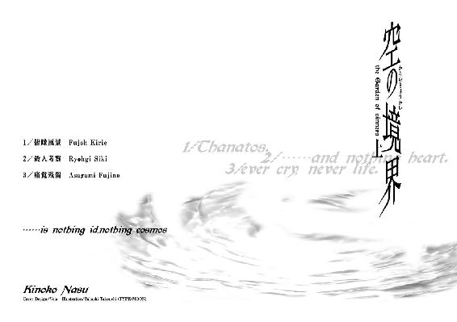

| 空の境界（上） (講談社文庫) | |
| 奈須きのこ | |
| 講談社 (2007) | |
ebpaj-guide-1.0
空の境界（上）
奈須きのこ

その日、帰り道に大通りを選んだ。
自分にしては珍しい、ほんの気紛れである。
見飽きたビル街を呆と歩いていると、ほどなくして人が落ちてきた。
あまり聞く機会のない、ぐしゃりという音。
ビルから墜ちて死んだのは明白だった。
アスファルトには朱色が流れていく。
原形を留めているのは長い黒髪と。
細く、白を連想させる脆い手足。
そして貌の亡い、潰れた顔。
その一連の映像は、古びた頁に挟まれ、書に取り込まれて平面となった押し花を幻想させた。
───おそらくは。
首だけを胎児のように曲げたその亡骸が、私には折れた百合に見えたからだろう。
／俯瞰風景
八月になったばかりの夜、事前に連絡もなく黒桐幹也がやってきた。
「こんばんは。相変わらず気怠そうだね、式」
突然の来訪者は玄関口に立って、笑顔でつまらない挨拶をする。
「実はね、ここに来る前に事故に出くわしたんだ。ビルの屋上からさ、女の子が飛び降り自殺。最近多いって聞いてたけど実物に遭遇するとは思わなかったな。───はいこれ、冷蔵庫」
玄関でブーツの紐をほどきながら、手に持ったコンビニのビニール袋を投げてよこす。中にはハーゲンダッツのストロベリーが二つ。溶ける前に冷蔵庫に封入しろ、という事らしい。
私が緩慢な動作でビニール袋を確かめている隙に、幹也は靴を脱ぎ終えて上がり框を踏んでいた。
私の家はマンションの一室だ。玄関から一メートルもない廊下をぬければ、すぐに寝室と居間を兼用した部屋に辿り着く。
さっさと部屋へと歩いていく幹也の背中を睨みながら、私も自室へ移動する。
「式。君、今日も学校をさぼっただろう。成績は後から何とでもできるけど、出席日数だけは確保しとかないと進級できないぞ。一緒に大学に行くって約束、忘れた？」
「学校の事でオレに指図する権利、おまえにあるか？ そもそもそんな約束は覚えてないし、おまえは大学辞めちまったじゃないか」
「......む。権利なんて言われると、そんな物はなんにだってないんだけどね」
難しい口振りをして、幹也は腰を下ろした。こいつは自分が不利になると地が出る傾向にあるらしい。──最近、思い出した事だ。
幹也は部屋の真ん中に座った。
私は幹也の背後にあるベッドに腰を下ろすと、そのまま体を横にする。幹也は私に背中を向けたままだ。
その、男にしては小柄な背中を、私はボウと観察する。
黒桐幹也という青年は、私とは高校時代からの友人であるらしい。
数々の流行が次々と現れては疾走し、あげく暴走したまま消滅するという現代の若者の中で、退屈なまでに学生という形を維持し続けた貴重品だ。
髪も染めないし、伸ばさない。肌も焼かなければ飾り物もしない。携帯も持たなければ女遊びもしない。背は百七十に届くか届かないか程度。温和な顔立ちは可愛い系で、黒ぶちの眼鏡がその雰囲気を一層強めていた。
今は高校を卒業して平凡な服装をしているが、着飾って街を歩けば通行人の何人かは目に留めるぐらい、実は美男子ではないだろうか────
「式、聞いてる？ 君のお母さんにも会ったよ。一度は両儀の屋敷に顔ぐらいださないとダメじゃないか。退院してからふた月、連絡も入れてないんだって？」
「ああ。とりわけ用が無かったから」
「あのね。用が無くても団欒するものなんだよ、家族って。二年間も話してなかったんだから、ちゃんと会って話をしないと」
「......知らないよ。実感が湧かないんだからしょうがないだろ。会ったってよけいに距離が開くだけだ。おまえとだって違和感が付きまとうっていうのに、あんな他人と会話が続くもんか」
「もう、そんなんじゃいつまでたっても解決しないだろ。式のほうから心を開かなくちゃ一生このままなんだぞ。実の親子が近くに住んでいるのに顔も合わせないなんて、そんなの駄目だ」
責めるような言葉に私は眉をひそめる。
駄目だって、何が駄目だというのだろう。私と両親の間にはなんら違法な物はない。たんに子供が交通事故にあって、以前の記憶を損失してしまっただけなのだ。戸籍上も血縁上も家族だと認められているんだから、今のままでも何ら問題はない筈である。
......幹也はいつも人の心の在り方を心配する。
そんなの、どうでもいい事だっていうのに。
両儀式は高校時代からの友人だ。
僕らの高校は私立で、有名な進学校だった。
その合格発表の時、ふと耳にした両儀式という名前があんまりに珍しいので覚えていたら、クラスが一緒になってしまった。以来、僕は式の数少ない友人の一人となった。
うちの学校は私服オッケーっていう進学校だったので、みなそれぞれの服装で自分を表現していたと思う。そんな中、校内での式の姿はとても目立った。
なにしろ、いつも着物なのだ。
質素な着流しの立ち姿は式の撫で肩によく似合っていて、式が歩いているだけで教室が武家屋敷に思えたほどだ。格好だけじゃなくて立ち居振る舞いにも一切の無駄がなく、授業中にしか言葉らしい言葉を口にしなかった。式がどんな人間かなんていうのは、この話だけで表れていると思う。
式本人の容姿は、これまた出来すぎだった。
髪は黒絹のように綺麗で、それを面倒くさそうにハサミで切ってほったらかしにする。それがちょうど耳を隠すぐらいのショートカットになっていて、これまたヘンに似合っているもんだから式の性別を間違える生徒も多かった。
式は見る人が男なら女性に、女なら男性に見間違うぐらいの美形で、綺麗というより凜々しい、という顔だちをしている。
けれどそんな特徴よりも、自分が何より魅了されたのは式の目だった。目付きは鋭いのに静やかな瞳と細い眉。何か、僕らには見えない物を見据えているその在り方が、自分にとっての両儀式という人物のすべてだった。
......あの夜。
式が、あんな事になるまでは。
「飛び降り」
「え───？ あ、ごめん、聞いてなかった」
「飛び降り自殺。アレは事故になるのか、幹也」
意味のない呟きに、黙り込んでいた幹也はサッと正気を取り戻す。と、馬鹿正直にも今の問いを真剣に考えだした。
「うーん、そりゃあ事故には違いないけど......そうだね、たしかにあれって何なのかな。自殺である以上、その人は死んでしまっている。けど自分の意志である以上、責任はやっぱり自身だけのものだ。ただ、高い所から落ちるっていうのは事故なんだから────」
「他殺でもなく事故死でもない。曖昧だね、そういうのって。自殺なら誰にも迷惑をかけない方法を選べばいいのに」
「式。死んだ人を悪く言うのはよくないよ」
窘める風でもない、素っ気のない口調。幹也の台詞は聞く前からうんざりするほど予測出来ていた。
「コクトー。オレ、おまえの一般論は嫌いだ」
自然、反論はきつくなる。けれど幹也は気を悪くした風もない。
「あぁ。懐かしいね、その呼び方」
「そうか？」
うん、と幹也は行儀のいい栗鼠のように頷いた。
彼の呼び方は幹也とコクトーというふた通りがあり、私はコクトーという響きはあまり好きではなかった。......その理由はよくわからない。
そんな会話の空白に生まれた疑問の途中、幹也は思い出したように手を叩いた。
「そういえばさ。珍しいついでに言うと、うちの鮮花が見たって」
「......？ 見たって、何を」
「だから例のアレ。巫条ビルの女の子。空、飛んでるってヤツ。式も一度見かけたって言っただろう」
「───────」
ああ、思い出した。たしか三週間ほど前から始まった、ちょっとした怪談だ。
オフィス街には巫条ビルという高級マンションがあり、夜になるとその上空に人らしき姿が見えるという。私だけでなく鮮花にも見えたという事は、どうもアレは本物らしい。
交通事故で二年間昏睡状態にあった後、私はそういった『本来ありえないモノ』が見えるようになっていた。
トウコあたりに言わせると見えるではなく視える、つまり脳と目の認識レベルが向上しただけらしいのだが、そのカラクリになど興味はない。
「巫条ビルのヤツなら一度じゃなく数回見た。もっとも最近はあのあたりには出歩いていないから、今も視えるかどうかはわからないぞ」
「ふうん。あそこはよく通るけど、僕は見かけた事はないな」
「おまえは眼鏡をかけてるから駄目だ」
眼鏡は関係ないと思う、と拗ねる幹也。
その仕草は温かで、邪気がない。だからこいつにはそういったモノは見えにくいのだ。......それにしても飛ぶだの落ちるだの、つまらない話が続く。そんな事になんの意味があるのか解らなくて、私は疑問を口にしていた。
「幹也。人が空を飛ぶ理由ってわかるか？」
幹也はさあ、と首をすくめると、
「飛ぶワケも落ちるワケもわからないよ。だってまだ一度も、僕はやった事がないからね」
そんな当たり前の事をしれっと言った。
八月も終わりにさしかかった夜。いつも通り、私は散歩をする事にした。
夏の終わりにしては外気は肌寒い。終電はとっくに過ぎていて、街は静まり返っていた。
静かで、寒くて、廃れきった、見知らぬ死街のようでもある。人通りも温かみもない光景は写真みたいに人工的で、不治の病を連想させた。
───病い、病気、病的。
何もかも、明かりのない家も明かりのあるコンビニも、気を許せば咳き込んで崩れ落ちるような感じ。
そんな中、月光は青々と夜を浮き彫りにする。
全てが麻酔されたこの世界、月だけが生きているようで、ひどく、目が痛む。
───だから、病的とはそういう事だ。
家を出る時、浅葱色の着物の上に赤い革製のジャンパーを羽織った。
着物の袖が上着に巻き込まれて、体が蒸す。
それでも暑くはない。───いや。
私にとっては、もとから寒くもなかったのだ。
そんな真夜中でも歩けば人と出会った。
俯いて、ただ早足で進んでいく誰か。
自販機の前でぼんやりとする誰か。
コンビニの明かりに集う、幾多もの誰か。
そこに何かしらかの意味があるのか探ってみたが、所詮部外者である私にはちっとも摑めなかった。
そもそも、自分自身こうやって夜に出歩く事からして意味はないのだ。
私は、かつての私が嗜好していた行為を繰り返しているにすぎない。
───二年前。高校二年への進級が間近だった両儀式という私は、交通事故に遭ってそのまま病院に運ばれた。
雨の日の夜の事だ。
私は自動車に撥ねられたらしい。
幸い身体に大きな傷はなく、出血も骨折もない綺麗な事故だったという。その反面、ダメージは頭のほうに集中してしまったのだろう。以来、昏睡状態が続いた。
体がほぼ無傷だったのが災いしたのか、病院側も私を生かし続け、意識のない私の肉体はこれまた必死に生き続けた。
そうしてつい二ヵ月前、両儀式は回復した。
医師達は死者が蘇生するぐらいのショックをうけたそうで、なるほど、つまり私はそれぐらい回復が見込まれていなかったという事だった。
そして私自身も、それほど大げさではないけれど、ある衝撃を受けていた。
自身に確証が持てない、とでも言おうか。
自分の今までの記憶というヤツがどうもおかしいのだ。
簡単に言うと、自分の記憶が信用できない。これは過去の事柄が思い出せない、という記憶障害......俗に記憶喪失と呼ばれるものとは違う。
トウコいわく、記憶とは脳が行なう銘記、保存、再生、再認の四つのシステムだという。
『銘記』は見た印象を情報として脳に書き込む事。
『保存』はそれをとっておく事。
『再生』は保存した情報を呼び出す、つまり思い出す事。
『再認』は再生した情報が以前のものと同一かどうかを確認する事。
この四つのプロセスの一つでも出来なければ記憶障害となる。もちろん、それぞれの故障箇所によって記憶障害のケースも変わってくる。
けれど私の場合、このいずれも支障なく働いている。以前の記憶に実感を持てないが、自分の記憶が以前の私が受けた印象とまったく同じだ、という『再認』も働いている。
だというのに、私にはかつての自分に自信が持てないでいた。
私が、私であるという実感がない。
両儀式というかつての記憶を思い出しても、それが他人事にしか思えない。私は間違いなく両儀式だというのに。
二年間という空白は、両儀式を無にしてしまっていた。世間の評価ではなく、私の中身を無にしていたのだ。私の記憶と、私が持ちえていたであろう性格。その繫がりが絶望的なぐらいに断たれてしまっている。そうなってしまうと、記憶はただの映像にすぎなかった。
ただ、その映像のおかげで私は以前の私のように装える。両親にも知人にも、彼らの知っていた両儀式として触れあえる。
無論、今の私はおかまいなしで。
それは我慢できない息苦しさで私を悩ませる。
───まるで擬態だ。
私はちっとも生きていない。
生まれたばかりの赤子と同じ。何も知らないし、何も得ていない。けれど十七年という記憶が、私を一人の完成した人間たらしめている。
本来、様々な経験によって得るはずの感情は、すでに記憶として持っている。けれど私はそれを実体験していない。だが実体験しようにも、すでにそれは識っている事なのだ。そこには感動もなければ、生きているという実感もない。......タネを明かされた手品が、もう驚けないのと同じように。
そうして私は生きている実感も持てないままで、かつての私らしい行動を繰り返す。
理由は単純だ。
そうすれば、私は昔の自分に戻れるかもしれないから。
こうすれば、この夜歩きの意味も解るかもしれないから。
......あぁ、そうか。
だとすれば私は、かつての私に恋していると言えなくもないワケだ。
随分と歩いた気がして顔をあげると、そこは噂に聞くオフィス街だった。
行儀よく同じ高さのビルが並んでいる。ビルの表面は一面の窓ガラスで、今は月明かりだけを反射していた。大通りに並ぶ高層建築の群れは、怪人の徘徊する影絵の世界めいている。
その奥に、一際高い影がある。二十階以上の梯子のような建物は、月まで届けとばかりに伸びる細長い塔に見えた。
塔の名前は巫条という。
マンションである巫条ビルに明かりはない。住人はみな眠りについているのだろう。時刻はじき午前二時を回ろうとしているのだ。
その時───つまらない影が網膜に映りこんだ。
人型らしいシルエットが視界に浮かぶ。
比喩ではなく、本当にその少女は浮いていた。
風は亡い。夜気の冷たさは夏にしては異常だ。
うなじの骨が、寒さによって針ときしむ。
もちろん、そんなのは私だけの錯覚。
「なんだ、今日もいるじゃないか」
不快だが、見えるものは仕方がない。
そうして、件の少女は月にもたれるように飛行していた。
───イメージはとんぼ。忙しく飛んでいる。
一羽の蝶がついてきたけど、翅の速度は下がらない。蝶はいつしかついてこれなくなって、視界から消える頃、力なく落ちていった。
弧を描いて落ちていく。
鎌首をもたげた蛇のような落下は、けれど折れた百合に似ていた。
その姿が、ひどく哀しい。
一緒に行く事はできなくても、せめてあと少しは傍にいてあげたかった。
でもそれは不可能だ。だって地に足がついてない自分は、立ち止まる事さえ自由ではなかったのだから。
誰かの話し声がするので、仕方なく起きる事にした。
......瞼がかなり重い。二時間は寝たりない証拠だ、これは。それでも活動しようとする自分はいじらしいな、とちょっと自己陶酔してみると意識は眠気に勝ってしまった。......ほんと、我ながら単純で困る。
たしか昨夜は徹夜で図面を完成させて、そのまま橙子さんの部屋で眠ったはずだ。
ソファーから体を起こすと、やっぱりここは事務所だった。まだ正午に差しかかっていない夏の陽射しの中で、式と橙子さんがなにやら話し込んでいる。
式は立ったまま壁にもたれかかっていて、橙子さんは足を組んでパイプ椅子に座っていた。
式は相変わらず着物をさらりと着流している。
橙子さんはと言うと、飾り気のないタイトな黒色のズボンに、新品みたいにパリッとさせた白いワイシャツ。長い髪を結い、首筋をあらわにした橙子さんはいかにもどこかの社長秘書、といった風だ。もっとも眼鏡を外した時の目付きの悪さは筆舌に尽くしがたいので、一生そういった職業には就けないだろう。
「おはよう黒桐」
じろりとした橙子さんの一瞥は、まあ、いつもの事だ。......橙子さんの眼鏡が外れている所をみると、式とはあっち関係の話をしていたのだろう。
「すいません、眠ってしまったみたいです」
「つまらん事を説明するな。見れば判る」
きっぱりと言い捨てて、煙草を口にあてる橙子さん。
「起きたなら茶を淹れてくれ。いいリハビリになる」
「.....................？」
社会復帰って、やっぱり更生運動の事なんだろうか。
どうしてそんな事を言われなくちゃいけないのかは謎ではあるが、橙子さんはいつもこういう風なので是非を問うのはやめておいた。
「式は何か飲む？」
「オレはいい。すぐ寝るから」
そう言う式は、たしかに寝不足のようだった。
昨日の夜、僕が帰ってから夜の散歩でもしたのだろうか。
事務所兼橙子さんの私室である部屋のとなりには、台所らしき部屋がある。
もとは何かの実験室だったのか、水道の蛇口は横に三つも並んでいる。ようするに学校の水飲み場だ。うち二つは針金で縛られて使用禁止になっていた。理由は不明。判りやすくていいだろう、と橙子さんは言うが、気持ちが殺伐としていくのであまり有り難みはない。
さて、とコーヒーメイカーを作動させる。出社してまず第一にやる事がコーヒーを淹れる事だから、今では眠っていても出来るぐらいに上達していた。
自分こと黒桐幹也がここに就職してもう半年近くが経つ。
いや、就職というのはかなりおかしい。なにしろここは会社として成立していないのだ。それを覚悟で押しかけたのは、ひとえに橙子さんの作品に惚れ込んでしまったからだ。
式が一人で十七歳のまま時間を止めてしまった後、僕は目的もなく高校を卒業して大学生になった。その大学に入るのは、式との約束だった。式が回復の見込みのない病状にあったとしても、その約束だけは守りたかったのだ。
けれどその後は何もなかった。大学生になった僕は、ただカレンダーの日付だけを追っていた。そうしてぼんやりと過ごしていた時、友人の誘いで何かの催し物に足を運び、一体の人形を見つけた。
それは道徳の限界ぎりぎりにまで迫った、精巧な人形だった。
人間をそのまま停止させたような形は、同時に、決して動かない人型である事を明確に提示していたと思う。
明らかに人ではなく、同時に人にしか見えないヒトガタ。今にも息を吹き返しそうな人間。けれど初めから命などない人形。生命しか持ちえない、しかし人間では届かない場所。その二律背反に、僕は虜になった。おそらくその在り方全てが、あの時の式そのものだったからだろう。
人形の出展者は不明だった。パンフレットにはその存在すら載っていなかった。必死になって調べてみると、それは非公式な出展物で制作者は業界では曰くつきの人物だった。
制作者の名前は蒼崎橙子。
彼女は、言うなれば世捨て人だった。人形作りが本職だというのに建物の設計もやっているらしい。とにかく物を作る事ならなんでもやるのだが、仕事を引き受ける事はめったにない。いつも自分から〝こんな物を作ります〟と相手に売り込みにいき、報酬を前払いでもらって制作にとりかかるというのだ。
よっぽどの道楽者か、あるいは変人か。
興味はいっそう深まっていき、よせばいいのに僕はその変人の住みかを調べあげてしまった。それは都心から離れた、住宅地とも工場地帯ともいえない、なんとも半端な住所だった。
否。蒼崎橙子の住みかは、およそ家ではなかった。
ズバリ廃墟だった。
それも半端な廃墟ではない。数年前の景気がいい時に工事が始まり、景気が悪くなったので途中で放置された本当の廃ビル。とりあえず建物としての形は出来ているが内装はまったくなく、壁も床も素材が剝き出し。
完成時には六階建てになったのだろうが、四階から上はない。工事が途中で放棄された為、造りかけの五階のフロアが屋上らしきモノになってしまっていた。
ビルの敷地は高いコンクリの塀で囲まれているものの、侵入するのは簡単だ。ご近所の子供達が秘密基地にしなかったのが奇跡と言えるぐらい、ひたすらに怪しい建物。そんな買い手のないまま放置されていたビルを蒼崎橙子は買い取ったらしい。
今こうしてコーヒーを淹れている台所らしき部屋は、ビルの四階に位置する。二階と三階は橙子さんの仕事場なので、たいてい僕らはこの四階でコミュニケーションをとる事になっていた。
と、話を戻そう。
結局その後、僕は橙子さんと知り合い、入ったばかりの大学を辞めてここで働く事になった。
信じられない事に、きちんと給料はでている。
橙子さんに言わせると人間には二系統二属性があり、創る者と探る者、使う者と壊す者とに分かれるんだそうだ。幹也くんには創る者としての才能はないわねー、なんてはっきり言ったのに、橙子さんはなぜか僕を雇ってくれた。なんでも探る者としては才能があるとかなんとか。
「──遅いよ黒桐」
隣の部屋からそんな催促が届く。
見れば、とっくにコーヒーメイカーには黒々とした液体が満たされていた。
「昨日で八人目らしいね。世間もそろそろ関連性に気付いてもいい頃だろうに」
灰になった煙草をもみ消しながら、唐突に橙子さんは切り出した。
ここ最近に連続している女子高生の飛び降り自殺の事だろう。今年の夏は断水の憂き目も見ず、橙子さん好みの悲惨な話題といったらそれしかない。
「八人目......？ あれ、六人なんじゃないですか？」
「君が惚けている間に増えたんだ。六月から始まって、月に平均三人か。あと三日以内に追加一人がでるかな」
不謹慎な事を橙子さんは口にする。ちらりとカレンダーに目をやると、八月はあと三日しか残っていない。......あと、三日......？ なにか、そこにひっかかるものがあったが、疑問はすぐに意識の底に落ちていった。
「でも関連性はないって話ですよ。自殺してしまった娘たちはみんな学校も違うし、交友関係もなかったって。まあ警察が情報を隠蔽してるだけかもしれませんけど」
「ひねくれた事を言う。黒桐らしくないな、無闇に他人を疑うとは」
揶揄するように橙子さんは口元をつりあげた。眼鏡を外しているとこの人はどこまでも底意地が悪くなる。
「......だって遺書が公開されてないでしょう。六人、いや八人ですか。それだけの数なら一人ぐらい遺言らしい物を公開してもいいでしょうに、それをひた隠しにしてる。これって隠蔽でしょ？」
「だから、それが関連性だ。いや共通点のほうが正しいか。八人中、大半が死亡者自ら飛び降りる現場を複数の人間に目撃されているし、彼女達の私生活にはなんの問題も浮かび上がらない。薬をやっていたとか、怪しい宗教にかぶれていた事もないわけだ。極めて個人的な、自分そのものに不安を抱いての突発的な自殺であるのは疑いようがない。故に残して置きたい言葉は無く、警察もその共通点を重要視していないんだろうね」
「......遺書は公開されないんじゃなくて、初めから用意されてないって事ですか？」
半信半疑でそう口にしてみると、橙子さんは断定はできないが、と頷いた。
けど、そんな事があるんだろうか。
そこには何か矛盾がある。コーヒーカップを手にとって、その苦さを味わいながら思考を走らせてみた。
遺書がないのはなぜだろう。遺書がないのでは、人は自ら死なない。
遺書とは、極論として未練だ。死を良しとしない人間がどうしようもなく自殺する時、その理由として残すもの、それが遺書のはずだ。
遺書のない自殺。
遺書を記す必要がない。それはもうこの世になんの意見もせず、潔く消えるという事。それこそが完全な自殺だ。完全な自殺とは遺書など初めから存在せず、その死さえ明らかにはされない物を言うと思う。
そして、飛び降りは完全な自殺ではない。人目につく死はそれこそが遺書めいてしまう。残したい事、明らかにしたい事がある故の行為ではないのか。だとしたら、何らかの形で遺言は用意されているのが道理だ。
ならどうなのだろう。それでも遺言らしき痕跡さえないというのなら───第三者が彼女達の遺書を持ち去ったか。いや、それでは自殺ではなくなってしまう。何らかの事件性を持った死だ。
ではなにか。考えられる理由は一つ。
ソレは文字通り事故なのではないか。
彼女達は初めから死ぬつもりなどなかった。それなら遺書を書く必要はない。ちょっとそこまで買い物に行った時に、運悪く交通事故に巻きこまれたようなものだ。昨夜、式がぽつりとこぼしたように。
......でも、ちょっとそこまで買い物に行くのにビルの屋上から飛び降りる理由が、僕には考えつかなかった。
「幹也、飛び降りは八人で終わりだぜ。この後にはしばらく続かない」
と。暴走しかかっていた思考を遮って、式が話に入ってきた。
「終わりって、わかるの？」
つい訊いてしまう。式はああ、と遠くを見ながら頷いた。
「見てきたから。飛んでいるのは八人だった」
「ほう、あのビルにそれだけいたか。式には初めから人数は判っていたんだな」
「うん。あいつは始末したけど、あの女たちはしばらく残っていると思う。気にくわないけどね。──なあトウコ。なまじ飛べちまうと、人間っていうのはあんな末路を迎えちまうものなのか」
「どうだろうな。個人差があるからはっきりとは言えないが、過去、人間だけの力で飛行を試み成功した者はいない。飛行という言葉と墜落という言葉は連結だ。だが、空に憑かれた者ほどその事実が欠落していてね。結果、死んだ後も雲の上を目指して飛行するはめになるわけだ。地上に落ちる事もなく、空に墜ちていくように」
式は納得いかなげに顔をしかめた。
......式は怒っている。けれど、なにに？
「あの、すみません、話が見えないんですけど」
「うん？ いや、例の巫条ビルの幽霊の話さ。もっともアレが実体だったのか只のイメージだったのかは、実物を見てみないとなんともな。暇があれば見にいこうとは考えていたが、式が殺してしまったのでは確かめようがない」
......ああ、やっぱりそっちの話か。
眼鏡をはずした橙子さんと式という組み合わせは、大抵こういうオカルトな話をしているのだ。
「式が巫条ビルの屋上に浮いている少女を見た、という話は聞いているだろう。その話には続きがあってな、少女のまわりには人型らしきモノがせわしなく飛行していたそうだ。巫条ビルから離れない、という事からあそこが網になっていたんじゃないかと話をしていてね」
話の奇抜さと難解さはますますその色を濃くしていく。
そんなこちらの顔色が判るのか、橙子さんは簡潔にまとめてくれた。
「巫条ビルには一人の浮いている人間がいて、そのまわりには飛び降り自殺者になってしまった少女達の姿があった。この八人の少女達は幽霊めいたものだろうね。生きて浮遊していたのは一人だけ。話としてはそれだけの、簡単な構造だ」
ははあ、と一応頷いてみる。
怪談の肝は解ったけれど、結局、今回も自分は終わった後で関わっているだけのようだ。式のさっきの台詞からすると、その幽霊とやらは式本人にやられてしまったのだろうし。
橙子さんと式を知り合わせてから二ヵ月。僕はこの手の話では解決編だけを聞く立場にあった。
二人と違い、いたってノーマルな自分としてはその手の話には関わりたくない。けれど無視されるのもなんだか所在ないので、このどっちつかずの立場は丁度いいと思う。世間さまでは、こういうのを不幸中の幸いというのだろうか。
「なんか、そう聞くと三文小説みたいですね」
だろう、と橙子さんは同意した。
式だけがますます視線に怒気を孕ませて、流し目でこちらを睨んでいる。
「...............？」
なにか式を怒らせるような事をしたのだろうか、僕は。
「あれ？ でも、式が最初に幽霊を見たのって七月初めだったよね。じゃあその頃の巫条ビルにいたのは四人だったんだ」
確認の為に当たり前の事を訊いてみると、式は気難しい顔つきのまま首を横に振った。
「八人。初めから飛んでいるのは八つあった。言っただろ、八人以上の飛び降りはないんだって。連中の場合、順序が逆なんだから」
「それって初めから八人の幽霊が視えたってコト？ ほら、いつかの未来視の子みたいに」
「まさか。オレは正常だよ。あそこの空気がおかしいだけだ。そうだな、熱湯と氷水がぴったりと向き合っている感じで変なんだ。だから......」
煮え切らない式の言葉の続きを、橙子さんが間髪いれずに受け継ぐ。
「だから、あそこは時間がかしいでいるんだ。時の経過は一種類だけじゃない。朽ちていくまでの距離は、それこそ全てに不均等だ。なら人間という一個体と、その一個体が持ちえた記憶にも、朽ちていく時間の差があるのは道理だろう。人が死ねばその者の記録は消えるのか？ 消えないだろう？ 観測者が残っているかぎり、あらゆる物は無へ突然に消失するわけじゃない。無へと薄れていくんだ。
人の記憶、いや記録か。その観測者が人ではなくそれを取り巻く環境であった場合、彼女達のような特異な人種は死後も幻像として街を闊歩する。幽霊とよばれる現象の一部がこれだ。この幻像を視てしまうのは、その記録の一部分を共有する者......死した人物の友人や肉親になる。式は例外だがね。
まあ、そういった『記録だけの時間の経過』があるとすると、あのビルの屋上はそれが遅い。彼女達の生前の記録が、まだ本来の彼女達の時間に追いついていないんだ。
結果、思い出だけがまだ生きている。あの場所に幻像として映っているのは、きわめて遅く送られている少女達の行動の記録なんだろうさ」
橙子さんはそこで何本目かの煙草に火をつけた。
「.....................」
ようするに何かが無くなっても、その何かの事を誰かが覚えているかぎりそれが無くなったわけではなく、覚えているという事は生きているという事なので生きている物ならば目に見えてしまう、という事だろうか。
それではまるで幻覚だ。──いや、橙子さん本人が最後に『幻像』とまとめたのは、それは本来ありえない物として定義しているからだろう。
「......理屈はいいよ、そんなのに害はないんだ。問題はあいつだろ。手応えはあったけど、本体が有るのならまた繰り返しになっちまう。幹也のお守りはもう御免だからな、オレは」
「同感だ。巫条霧絵の後始末は私がするよ。君は黒桐を送ってくれればいい。黒桐の退勤時間まで五時間はある。眠るならそこの床でも使えばいい」
橙子さんの指差した床は、ここ半年間一度も掃除をした事がなくて、紙クズのつまった焼却炉の中みたいになっている場所だった。
式は当然、それを無視する。
「それで。結局、あいつはなんだったんだ」
煙草をくわえた魔術師は、ふむ、と思案したかと思うと足音もなく窓際へと歩み寄った。
窓から外を眺める。この部屋には電灯がない。室内は外の陽射しだけを受け入れて、昼間なのか夕方なのか不明瞭だ。
それとは対照的に、窓の外ははっきりと昼間。夏の正午の街並みを、橙子さんはしばし無言で見つめていた。
「以前は、彼女も飛行の部類だったのだろう」
煙草の煙が、白い陽射しに同化していく。
窓の外の景色を見下ろす背中。
白にかすむ蜃気楼のようだ。
「黒桐。高い所から見る風景は何を連想させると思う？」
いきなりの質問に、ぼんやりとした意識が引き戻された。
高い所なんて子供のころ東京タワーに上ったきりだ。その時なにを思ったかなんて覚えてもいない。自分の家を見付けようと躍起になったけど、見つけだせなくて肩を落としたぐらいだっけ。
「......その、小さい、ですか？」
「それは穿ちすぎだね、黒桐」
......にべもない反論が返ってきた。気を取り直して違うものを連想してみる。
「......そうですね。連想する物はあまりないけど、綺麗だとは思いますよ。高い所からの風景には圧倒されますから」
さっきよりは本心からの答えだったからだろう、橙子さんはうん、と小さく頷いた。そうして、やっぱり視線は窓の外に向けたまま話し始める。
「高所から見下ろす景色は壮観だ。なんでもない景色でさえ素晴らしい物と感じる。だがね、自分の住んでいる世界を一望した時に感じるのはそんな衝動じゃない。俯瞰の視界から得る衝動はただ一つ──」
衝動、と口にして、橙子さんは少しの間だけ言葉を切った。
衝動は理性や知性からくる感情じゃない。
衝動とは、感想のように自分の内側からやってくるものではなく、外側から襲いかかってくるものだと思う。たとえ本人がそれを拒んでいようとも、不意に襲いかかってくる暴力のような認識。それを僕らは衝動と呼ぶ。では、俯瞰の視界がもたらす暴力とはなんなのか───
「それは遠い、だよ。広すぎる視界は、転じて世界との隔たりがはっきりと出来てしまうものなんだ。人間はせいぜい自分の身の回りにある物でしか安心できない。どんなに精巧な地図があって自分がどこそこの此処にいる、という事実を知っていても、そんなのはただの知識でしかないだろう？ 私達にとって、世界とは肌で感じ取れる程度の周囲でしかないんだ。脳が認めている地球の、国の、街の繫ぎ目なんてものを我々は実感できない。その繫ぎ目の場所に行かなくてはね。そして実際、その認識の仕方に間違いはない。
だがあまりに広すぎる視界をもってしまうと、それにズレが生じてしまう。自分が肌で感じている十メートル四方の空間と、自分が見下ろしている十キロメートル四方の空間。そのどちらも自分の住んでいる世界であるのに、よりリアルとして感じ取ってしまうのは前者だ。
ほら、ここにもう矛盾が生まれているだろう？ 自分が体感できる狭い世界より、自分が見ている広い世界のほうを『住んでいる世界』と認識する方が正しい。けれど、どうしてもこの広い世界に自分がいるのだという実感が持てない。
なぜか。それは実感が、つねに周囲から得られる情報に優先される物だからだ。ここに知識としての理性と経験としての実感が摩擦し、やがてどちらかがすり減り、意識の混乱がはじまる。
──ここから見下ろす街はなんて小さいのだろう。あの住所にわたしの家があるなんて想像もできない。あの公園はあんな形をしていただろうか。あんな所にあんな建物があったなんて知らなかった。これではまるで知らない街だ。なんだか、とても遠い所まで来てしまったみたいだ──高すぎる視点はそういった実感を湧かせてしまう。遠い所もなにも、今もその本人は街の一部にきちんと立っているというのにね」
高い所は遠い所だ。それは距離的にも解りきっている。けれど橙子さんが口にしているのは精神的な事なのだろう。
「つまり、高いところから物を見続けるのはよくないんですか？」
「度がすぎるのはな。古代では空は別の世界と認識されていた。飛ぶという事は、つまり異界を行くという事でね。文明で武装しなければ違う意識に染まってしまう。文字通り、正常な意識が狂ってしまうんだ。もっとも、まともな認識のプロテクトを持っているのならそう悪影響は受けないんだが。確かな足場があるのなら問題ない。地上に戻れば正常に戻るさ」
......言われてみれば、学校の屋上からグラウンドを見下ろしていたとき、不意に飛び降りたらどうなるのだろう、という考えが浮かんだことがある。
そんなのはもちろん冗談だ。
実行する気なんてこれっぽっちもないけれど、その、明らかに死につながる考えが浮かんでしまうのは何故だろう。
個人差がある、と橙子さんは言うけれど、高い所にいって落ちる事をイメージする事は、そう珍しい事ではないと思う。
「......これって一時的だけど、思考が狂ってるって事ですか？」
浮んだ感想を口にすると、橙子さんはあはは、と乾いた笑いをこぼした。
「タブーを夢想するのは誰にだってあるよ、黒桐。人はやれない事を想像で楽しむ、という物凄い自慰能力を持っているからね。ただ、そうだな......今のは少しだけ近い。重要なのはその場所でしかその場所に関する禁忌への誘惑がこない、という事か。当たり前の事だがね。今の君の例は意識が狂っているのではなく、理性が麻痺している、という事だよ」
「トウコ、話が長い」
もう我慢できない、とばかりに式が口をはさむ。言われてみれば確かに本題から外れてしまっているようだ。
「長くはない。まだ起承転結でいうのなら二つめだ」
「オレは結だけ聞きたいんだ。あんたと幹也のお喋りには付き合ってられない」
「式......」
ひどいけど、もっともな意見だった。
一言もない僕をよそに、式の文句はさらに続く。
「それと。高い所からの風景に問題があると言うけれど、じゃあ普通の視点ってなんだ。歩いている時だって、オレ達は地面より高い視点をしているじゃないか」
その、難癖をつけているようにしか見えない式の態度とは逆に、今の発言は確かに的を射ていた。人の眼は、たしかに地上より高い位置に存在する。ならその風景はおおむね俯瞰になっている場合もあるわけだ。
そんな式の言葉に、橙子さんはいいだろう、と頷いた。
「しかし君が水平と思っている地面も不確かな角度なんだぞ。だがまあ、それらを含めても通常の視界は俯瞰とは呼ばない。
視界とは眼球が捉える映像ではなく、脳が理解する映像だ。私達の視界は私達の常識によって守られているから、自身分の高さでは高いとは感じないし、それが常識ですらある。そこに高さという概念はない。しかし反面、人間は誰しも俯瞰の視界で生きている。身体的な観測としてではなく、精神的な観測として。その個人差はまちまちだ。肥大した精神ほどより高みを目指すだろう。だが、それでも自らの箱を離脱する事はない。
人は箱の中で生活するものだし、箱の中でしか生活できないものだ。神さまの視点を持ってはいけない。その一線をこえると、ああいった怪物になる。幻視が現死に変わり、どちらがどちらなのか曖昧になって、結果判別がつかなくなる」
そう言葉を続ける橙子さん本人も、今は下界を見下ろしている。
地に足をつけて、下を見ている。
それはとても大事な事に思えた。
「..................」
ふいに、見ていた夢を思い出した。
───蝶は、最後には墜落してしまった。
彼女は僕についてこようとしなければ、もっと優雅に飛べたのではないか。
そう、浮遊するように羽ばたくのなら、もっと長く飛べていたはずだ。
けれど飛ぶという事を知っていた蝶は、浮遊する自身の軽さに耐えられなかった。
だから飛んだ。浮くのをやめて。
そこまで考えて、自分がこんな詩的な人間だったろうかと首を傾げた。
窓際の橙子さんが煙草を外に投げ捨てる。
「巫条ビルのゆらぎは、彼女が見ていた世界なのかもしれない。式が感じた空気の違いは箱の中と外とを区別する壁ではないかと推測できる。それは人の意識だけが観測する不連続面だ」
橙子さんの話が終わって、式はようやく不機嫌そうな態度を崩した。
ふん、と息をついて視線を泳がしている。
「不連続面ね。どっちが暖流でどっちが寒流だったのかな、あいつにとって」
深刻そうな台詞とは裏腹に、式はそれにはどうでもよさげだった。
橙子さんは同じく関心のない素振りをして、
「無論、君にとっての逆だろう」
なんて事を切り返していた。
───うなじの骨がシン、と軋む。
震えは外気の寒さからくるものなのか、内気の寒さからくるものなのか。
判別のつかないそれを放っておいて、両儀式は悠然と歩を進めた。
巫条ビルに人の気配はない。
午前二時、白ばんだ電灯だけがマンションの通路を照らしている。
クリーム色の壁は電灯に照らされ、通路の奥まで続いて見えた。闇を完璧に払拭する人工の光は人間味がなく、払拭するべき闇より不気味だった。
式はカードチェックの玄関を素通りして、エレベーターに乗り込む。
中は無人。内部には鏡が張り付けられており、利用者の姿を見せるという趣向がこらしてあった。
浅葱色の着物の上に赤い革製の上着を羽織った、けだるい目をした人物がそこにいる。
何にも関心がない、呆としたその瞳。
式は鏡に映る自分と向き合ったまま、屋上へ通じるボタンを押した。
静かな機械音と共に、式の周囲の世界が上がっていく。機械仕掛けの箱はゆるりと屋上へ辿り着くだろう。
わずかな時間だけの密室。今この外で何が起きていようと式には何の関わりもなく、関わりようがない。その実感が、空虚な筈の心にわずかだけ染み込んだ。
この小さな箱だけが、今は自分が実感するべき世界。
音もなく扉が開く。
その先は一変して明かりのない空間だった。屋上に通じる扉だけがある小部屋に出ると、式を残してエレベーターは一階へと下りていった。
電灯はなく、周囲は息苦しいほどに暗い。
足音を響かせて小部屋を横断し、屋上へ通じる扉を開ける。
───暗い闇が、昏い闇へとすり替わる。
視界いっぱいに街の夜景がとびこむ。
巫条ビルの屋上は、特徴のない作りだった。剝き出しのコンクリートが真っ平らに続く床と、周囲に張り巡らされた網目状のフェンス。
今まで式がいた小部屋の上には給水タンクがあるだけで、他に目につくものは何もない。
作り自体は何の変哲もない屋上。
ただ、その風景だけが異質だった。
周囲の建物より十階分は高い屋上からの夜景は、綺麗というより心細い。
細い梯子の上に登って、下界を見下ろしているようだ。
暗い、光の届かない深海めいた夜の街は、たしかに美しい。街のそこかしこに灯る光は深海魚の瞬きに似ている。
───自分の視界が世界の全てだというのなら。
たしかに今、世界は眠りについている。
おそらくは永劫に、おしむらくは仮初めの。
その静けさはどんな寒さより心臓を締め付けて、痛いくらいだ───
そんな眼下の街並みと対するように、夜空の冴えも際立っていた。
街が深海なら、こちらはただ純粋の闇。その闇に、宝石をばら撒いたような星々が煌めいている。月は穴。夜空という黒い画用紙に穿たれた、一際大きな穴としか見えない。
だから本当はアレは太陽の鏡などではなく、あちら側の風景が覗いているだけなのだ──と、式は両儀の家で聞かされた事があった。
曰く、月は異界の門だという。その、神代より魔術と女と死を孕んできた月を背に、ひとつ、人型が浮遊していた。
その周囲に、八人の少女を飛行させて。
夜空に浮かび上がる白い姿は女のものだ。
一点の染みもない白い衣裳と、腰まで届いている黒髪。
装束からのぞく手足は細く、この女を一層たおやかに見せていた。
細い眉と冷淡にかげる瞳は、寿命から解放された、絵画の中の生き物のようだ。
年齢は二十代前半と推測できる。もっとも、幽霊じみた相手に生命としての年齢が当て嵌まるかは疑問だが。
白い女は、けれど幽霊という程不確かではない。現実にそこにいる。幽霊と言うのなら、それは彼女を中心にして夜空を旋回している少女達の方だろう。
ふわりふわりと取りとめもなく中空を彷徨っている少女達は、飛んでいるというより泳いでいるようだ。その姿も不確かで、時おり形そのものが透明になる。
式の頭上にあるのは白い女と、それを守るように夜空を泳ぐ八人の少女達。
一連の光景はおぞましくはない。
むしろそれは。
「ふん───たしかに、こいつは魔的だ」
嘲るように式は呟く。
この女の美しさは、すでに人のものではない。
黒髪は素晴らしく、絹糸を一本ずつ梳ったかのような滑らかさ。風が強ければ、黒髪のたなびく姿は幽玄の美となっていたろうに。
「なら、殺さなくっちゃな」
式の呟きに気付いたのか、彼女は視線を下界へ下げる。
この、地上七十メートルを超える巫条ビルの屋上からさらに四メートルの高所にある彼女と、見上げる式の視線が交錯する。
交わす言葉はなく、通じる言語さえない。
式は上着の内側からナイフを引き出す。刃渡り六寸もの、刀というより刃そのものの凶器を。
上空からの視線に殺意が籠もる。
つい、と白い装束がゆれた。
女の手が流れて、細い指先が式に向けられる。
その、細く脆い手足が連想させるのは白ではない。
「────骨か、百合だ」
風の亡い夜、声は長く中空に残響した。
差し向けた指先に殺意が籠もる。
白い指先はぴたりと式の姿に向けられた。
ぐらり、と式の頭が揺れる。細い体は崩れ落ちるようにたたらを踏んだ。
わずか、一度だけ。
「───────」
頭上の女は、それで微かに怯んだようだ。
貴方は飛べるのだ、という暗示が、この相手には通じない。
相手の意識そのものに『飛んでいた』という印象をすり込むそれは、暗示の域をこえて洗脳の業にまで達している。抗う事はできない。人は結果として本当に飛行を実践してしまうか、その事実を信じられず、しかし飛べるのだという確固たる実感に怖れをなして屋上から逃げていく事になる、不可避の暗示。
それを、式は軽い目眩だけでやり過ごした。
「───────」
接触が浅かったのだろうか、と女は訝しみ、もう一度暗示を試みる。
今度はより強く。
〝飛べる〟などという薄い印象ではなく、〝飛ぶのだ〟という確固たる印象にして。
──だが。
それより先に、式は女を視た。
両足に二つ、背中に一つ。中心よりやや左よりの胸部に一点。───死という名の切断面が確かに視える。
狙うのならとりわけ胸のあたりがいい。アレならば即死だ。この女が幻像であろうと何であろうと、生きている相手ならばたとえ神でも殺してみせる。
式は右手だけでナイフを掲げた。柄を逆手に持ち、上空の相手へと瞳を絞る。
間、もう一度式の中に衝動が巻き起こった。
......飛べる。自分は飛べる。昔から空が好きだった。昨日も飛んでいたんだ。たぶん今日はもっと高く飛べる。それは自由に。安らかに。笑うように。早く行かなくては。何処に？ 空に？ 自由に？
────それは
現実からの逃避。大空への憧れ。重力の逆作用。地に足がついていない。無意識下の飛行。行こう、行こう、行こう、行こう、行こう、行こう、行こう、行こう、行こう、行こう────────行け！
「冗談」
素のままの左手を持ち上げる。誘惑は式には効かない。もう目眩さえしない。
「そんな憧れは、私の中にはないんだ。生きてる実感がないから、生の苦しみなんて知らない。ああ、本当はおまえの事だってどうでもいいんだ」
───それは唄うような呟き。
生きる事についてまわる悲喜交々、大小様々な束縛を式は感じない。
だから苦しみからの解放なんてものに魅力も感じない。
「でも、あいつを連れていかれたままは困る。拠り所にしたのはこっちが先だから、返してもらうぞ」
何も握っていない左手が、中空を握る。そのまま後ろへと引かれた左手に手繰られるように、女と少女達の姿がぐい、と式へと引き寄せられた。
網にかかった魚達が、海水ごと陸に引き上げられるように。
「─────！」
女の形相が変わる。彼女はさらに力を込めて意志を式へと叩きつけた。言葉が通じたのならば彼女はこう叫んでいただろう。
落ちろ、と。その怨嗟を完全に無視し───
「おまえが墜ちろ」
急速に落下してきた女の胸に、ナイフが突き刺さる。果物を刺すように呆気なく、刺された者が恍惚とするほどの鋭さで。
出血はない。女は胸から背中へと通り抜けた刃物のショックで動けず、びくん、と一度だけ痙攣した。
その遺体を、式は無造作に放り投げる。
フェンスの外───夜の街のただ中へと。
女の体は柵を擦り抜け、音もなく落下していった。
落ち際でさえ黒髪をなびかせる事もなく、白い衣裳を風に膨らませて闇に溶けていく。
それは深海の底に沈んでいく、白い花のようだった。
両儀式は屋上から立ち去った。
頭上には未だ、中空を漂う少女達の姿が残っている。
胸に刃物を突き刺されて目が覚めた。
ものすごい衝撃だった。人の胸をたやすく貫くなんて、あの子はよほどの力持ちだったのだろう。
けれど、あれは狂暴な力ではなかった。
無駄がなく、骨と骨の隙間、肉と肉の狭間を当たり前のように貫通したのだ。
その、恐ろしいまでの一体感。
全身を舐めまわして いく死の実感。
心臓を突き 破られる音と音と音。
わたしには痛みより、その感覚が痛かった。
それは恐怖であり、例えようのない悦楽だったから。
背筋に走る悪寒は気が狂うほどで、体はがくがくと震えている。
泣きだしたいほどの不安と孤独、そして生への執着がそこにあって、わたしは声もださず、ただ、泣いた。
恐いからでも痛いからでもない。毎夜、明日の朝には生きていますようにと祈って眠りにつくわたしでさえ、感じた事のない死の体験がそこにあったからだ。
おそらく、わたしは永久にこの悪寒からは逃れられはしないだろう。
さかしまに、わたし自身がこの感覚に恋をしてしまった以上は───。
ガチャリ、とドアが開く音がした。
午後。閉ざされた窓からは、お日さまの光が差し込んでいる気配がする。
診察の時間ではないから面会人だろうか。
わたしの病室は個室で、他に人はいない。
あるのは溢れんばかりに差し込む陽光と、風に揺れた事のないクリーム色のカーテン、そしてこのベッドだけだ。
「失礼。巫条霧絵というのは君か」
やってきた人物は女性らしい。尖った声で挨拶をすると、椅子にも座らずにわたしの傍らまでやってきた。佇み、わたしを見下ろしているようだ。
その視線は冷たい感じがする。
......この人は、恐い人だ。きっとわたしを破滅させる。
それでもわたしは内心で喜んでもいた。だって面会に来てくれる人は数年ぶりなのだ。たとえそれがわたしにとどめを刺しにきた死神であったって、とても追い返したりはできない。
「あなたはわたしの敵ね」
ああ、と女性は頷いた。
わたしは意識を集中して、なんとかこの来訪者の姿を見てみようと努力する。
───強い陽射しのせいか、大まかなシルエットしか判らない。
上着を着ていないけれど、皺ひとつない洋服がガッコウの先生みたいで、少しほっとする。ただその白いシャツには濃い橙色のネクタイは派手すぎて、ちょっとだけ減点だ。
「あの子の知り合い？ それとも本人？」
「いや、君が襲った方と君が襲われた方との知人だよ。まったく、よりにもよっておかしな連中と関わったな。君も───いや、お互いに運がない」
言って、女性は胸ポケットから何かを取り出してすぐに仕舞った。
「病室は禁煙だったか。とくに君は肺をやられているようだ。紫煙は毒になるな」
残念そうに言う。
今のはシガレットの箱だったようだ。
わたしは煙草には触れた事もないけれど、なんとなく、この人が吸っている所を見たいと思った。たぶん......いやきっとリザードのパンプスとバッグをきめたマヌカンのように似合っているコトだろう。
「悪いのは肺だけではないな？ それが原因ではあるが、肉体の至る所に腫瘍がみられる。末端での肉腫をはじめ、なかは殊にひどい。まともなのはその髪ぐらいなものか。だというのによく体力が保つ。常人ならばここまで病魔に蝕まれる前に死亡してしまうものだがな。───何年になる、巫条霧絵」
入院生活の事を訊いているのだろう。でも、わたしはそれに答えられない。
「そんなのしらない。数えるのはやめたの」
だって意味がないもの。
わたしはここから、死ぬまで出られないんだから。
女の人はそうか、と短く呟いた。
同情も嫌悪もないその響きは、嫌いだ。わたしが貰える恩恵は同情しかない。それさえもこの人はくれないというのだ。
「式に切断された場所は無事か？ 話では心臓の左心室から大動脈の中間だというから、二尖弁あたりを刺されたか」
平静な声ですごい事を言ってくる。わたしは会話の奇妙さに、つい笑みをこぼしてしまった。
「おかしなひと。心臓を切られてたら、こうしてお話なんてできないわ」
「もっともだ。今のは確認だよ」
ああ、そうか。わたしがあの和風とも洋風ともとれない格好の人にやられたモノなのかどうか、この人は言葉で確かめたのだ。
「だがいずれ影響はでるぞ。式の目は強力だ。あれが二重存在だったとしても、崩壊はいずれ君本体へと辿り着く。その前に二、三尋ねたい事があってね。こうして足を運んだという訳だ」
二重存在......あの、もう一人のわたしの事だろうか。
「私は浮いていたという君を見ていない。正体を教えてくれないか」
「わたしにも分からないわ。わたしが見れる風景はこの窓からの景色だけだもの。でも、それがいけなかったのかもしれない。ずっとここから外を見下ろしていた。四季を彩る木々や、代わる代わるに入退院していく人達を。声を出しても聞いてもらえず、手を伸ばしても届かない。この病室の中だけで、ずっとわたしは喘いできた。ずっと外の景色を憎み続けてきた。そういうのって呪うって事でしょう？」
「......ふむ、巫条の血か。君の家系は古い純血種だ。祈禱が専門だったようだが、なるほど、本性は呪咀が生業だったとみえる。巫条の姓、不浄の言代なのかもしれない」
家系。
わたしの家。
それも、わたしの代で絶えてしまう。わたしが入院して間もない頃、両親と弟は事故で亡くなったのだから。
それからのわたしの医療費は、父の友人だったという人が受け持ってくれている。お坊さんみたいに難しい名前なので、どんな人だったかは覚えていないけれど。
「だが、呪いは無意識下で行なうものではない。一体君は何を願った」
......そんな事、わたしには分からない。きっとこの人にだって分かりはしないだろう。
「あなた、ずっと外を眺めていた事がある？ 何年も何年も、意識が途絶えてしまうまで見つめ続けた事が。......わたしは外が嫌いで、憎くて、恐かった。ずっと上から見下ろしていた。そうしていたらね、いつか目がおかしくなったの。ちょうどあそこの中庭の空にいて、地面を見下ろしているようになった。体と心はここにあって、目だけが空を飛んでいるような感覚。でもわたしはここから動けないから、結局はこのあたりを上から見下ろす事しかできなかったけど」
「......ここ周辺の風景を脳内に取り込んだか。それならどのような角度からでも見たと思えるだろう。───視力を失ったのはその頃だな？」
驚いた。この人は、わたしの視力がもうほとんど無い事に気付いている。
「そうよ。だんだん世界が白くなっていって、やがて何もなくなった。はじめは真っ暗やみになったのかと思ったけど、違うの。何もなくなったのよ、目に見えるものはね。
けどそれに何の問題もなかった。だって、わたしの目はもう空に浮いているんだもの。病院のまわりの風景しか見えないけど、もとからわたしはここから出れない。何も変わらないわ。何も───」
そこで、わたしは咳き込んだ。こんなに話をしたのは久しぶりだから。それに、なんだか瞼が熱い。
「なるほど。それで君の意識は空にあったという事か。だが───それでは何故君は生きている。巫条ビルの幽霊が君の意識であったのなら、君は式に殺されている筈だ」
そう、わたしもそれは疑問に思う。
あの子......式という名前らしいけれど、どうしてあの子はわたしに切り付ける事ができたのだろう。
あのわたしは何も触れられない代わりに、何にも傷つけられる事はないのに。屋上に現れた式という子は、まるであのわたしが本当の体を持っていたかのように、あっさりと殺害してしまったのだ。
「答えろ。巫条ビルの君は、本当に巫条霧絵だったのか」
「巫条ビルのわたしはわたしじゃない。空を見つめ続けていたわたしと、空にいたわたし。あのわたしは、わたしを見限って飛んでいってしまった。わたしは自分にさえ置いていかれたの」
女の人が息を呑む。はじめて、この人が感情らしきものを見せた。
「人格が二つに分かれた───ではないな。元から一つだった君に、二つ目の器を与えた者がいる。......一つの人格で二つの体を操っていたのか。確かに、これは他に類を見ない」
言われてみればそうなのかもしれない。
わたしは、ここにいるわたしを見捨てて街を見下ろしていた。けれどどちらのわたしも決して地に足はつけられず、ただ浮いているだけだった。窓の外の世界と隔絶されているわたしは、いくら望んでもその隔たりを突破する事はできないのだ。
別々になっても、結局わたし達は繫がっていたのだろう。
「───納得がいった。だが、なぜ君は外の世界を幻視するだけでは満足しなかったんだ。彼女達を落としてしまう必要はなかったと思うが」
彼女達───ああ、あの羨ましい女の子たち。あの子たちには可哀相な事をした。けど、わたしは何もしていない。あれはあの子たちが勝手に落ちていっただけなのだから。
「巫条ビルの君は意識体に近かった。それを利用したな？ あの少女達は初めから飛べていたんだろう？ それが彼女達の夢の中だけのイメージにせよ、実際に飛行能力があったにせよ、だ。
夢遊病者ならぬ夢遊飛行者はわりと多いが、そう問題にはならない。なぜか。彼らはつねに無意識下でなければ症状を表さず、無意識下であればこそ何の悪意も持たず飛行し、正常時には飛ぼうなどとも思わないからだ。彼女らはその中でも殊に特別だった。ピーターパンではないが、幼年期というものはとかく浮きやすい。一人か二人は実際に飛行していたろうが、大半は意識だけが飛行し、そんな夢を見たという感覚でしかなかった筈だ。それを君は意識させた。彼女達のそういった無意識下での印象を現実に引き戻して。
結果、彼女たちは自分が飛べるのだという事実を知ってしまった。ああ、もちろん飛べるとも。だがそれは無意識下であればの話だ。ヒト単体での飛行は難しいんだ。私だって箒がなくては飛べない。意識しての飛行の成功率は三割程度。少女達は当たり前のように飛ぼうとして、当然のように落ちた」
そう。あの子たちはわたしのまわりを飛んでいた。友達になれると思った。けどあの子たちはわたしに気付きもしないで、ただ魚のように漂うだけだったのだ。
意識がないんだ、と気付いてからは早かった。あの子たちに意識させてあげればわたしに気付いてくれると思ったのに。
それだけなのに、どうして────。
「寒いのか、震えているぞ」
女の人の声は相変わらず、プラスティックのように味気ない。わたしは悪寒の止まらない背中を抱いた。
「もう一つ訊いておこう。君はどうして空に憧れた。外の世界を憎んでいるのに」
それは、たぶん───
「空には、果てがないから。どこまでも行ければ、どこへでも飛べれば、わたしの嫌いじゃない世界があると思ってた」
それは見つかったか、と声が尋ねる。
わたしの悪寒はとまらない。体は誰かに揺すられるように震え、瞼は一段と熱くなってきている。
わたしは頷いた。
「───毎夜、朝になった時、目が覚められるのかって怖れてた。明日は生きているのかって怯えてた。眠ったら、もう起きる体力はないとわかってた。
綱渡りみたいなわたしの日々は、死への怖れしかなかったわ。けど逆に、だからこそ生きているって実感できた。わたしの虚ろな日々は、死の匂いしかなかった。けれど生きていくには、その死の匂いだけが頼りだった。......普段のわたしはもう脱け殻だから。死と直面した瞬間しか、生きていると実感できない」
そうだ。だからわたしは、生より死に焦がれている。
何処までも飛ぶ。何処へでも行く。
─────その為に。
「うちの坊やを連れていったのは、道連れか」
「いえ。あの時は、それに気付いていなかった。わたしは生に執着していて、生きたまま飛びたかったの。彼とならそれが出来た筈だから」
「......式と君は近いな。黒桐を選ぶあたりはまだ救いがある。自分では持てない生の実感を他人に求めるのは、まあ、悪い事じゃないが」
黒桐。そうか、あの式という子は彼を取り戻す為にやってきたのか。救いの主はわたしにとって決定的な死神でもあったんだ。
けれど、それに後悔はない。
「あの人、子供なのよ。いつでも空をみてる。いつでもまっすぐにしている。だからその気になれば、どこへだって飛んでいけるんだわ。そう───わたしは、彼に連れていってほしかった」
瞼が熱い。よくわからないけれど、たぶんわたしは泣いている。
悲しいからとかじゃなくて───彼と、本当にどこかに行けたのなら、それはどんなに幸福だったろう。叶わない事だから、叶えてはいけない夢だから、それはこんなにも美しくて、わたしの瞳を濡らしている。
───それはここ数年でわたしが見た、ただ一つの幻想だった。
「だが黒桐は空になど興味はない。......空に憧れる者ほど空には近付けない、か。皮肉だな」
「そうね。人間は必要じゃない物をいっぱい持ってるって聞いた事があるわ。わたしは浮くだけだった。飛ぶ事もできず、浮いている事しか出来なかった」
瞼の熱さは消えた。たぶん、この先二度とこんな事はないだろう。
今わたしを支配するのは、背筋に走るこの寒気だけなのだから。
「邪魔をした。これが最後になるが、君はこの後どうする？ 式にやられた傷なら私が治療してもいい」
わたしは答えず、ただ首を横に振った。
女の人は少しだけ眉をひそめたようだ。
「......そうか。逃走には二種類ある。目的のない逃走と、目的のある逃走だ。一般に前者を浮遊と呼び、後者を飛行と呼ぶ。
君の俯瞰風景がどちらであるかは、君自身が決める事だ。だがもし君が罪の意識でどちらかを選ぶのなら、それは間違いだぞ。我々は背負った罪によって道を選ぶのではなく、選んだ道で罪を背負うべきだからだ」
そして女の人は去っていった。
最後まで名乗らなかったけれど、それは必要がなかったからだとわかる。
......彼女には、はじめからわたしの採る結末がわかっていたに違いない。だってわたしは飛べなかった。ただ浮いていただけだから。
わたしは弱いから、あの人の言ったようにはできない。
だから、この誘惑にも勝てない。
あの時───心臓を貫かれた瞬間に感じた閃光。
圧倒的なまでの死の奔流と生の鼓動。わたしには何も無いと思っていたけれど、まだそんな単純で大切なものが残っていた。
有るのは死。
背骨を凍らすこの怖れ。
あらんかぎりの死をぶつけて、生の喜びを感じなければならない。
わたしが今まで蔑ろにしてきた、わたしの生命であった全てのために。
けれどあの夜のような死を迎えるのは不可能だろう。
あれほど鮮烈な最期は、おそらくもう望めまい。針のように、剣のように、雷のようにわたしを貫いたあの死には。
だから出来るだけそれに近付こうと思う。考えは浮かばないけれど、わたしにはあと数日の限りがあるから大丈夫。
それに、方法だけはもう決まっている。
言うまでもないけれど。
わたしの最期は、やはり俯瞰からの墜落死がいいと思うのだ。
陽が落ちて、僕らは橙子さんの廃ビルを後にした。式のアパートはこの周辺なのだが、僕のアパートはここから電車で二十分程離れている。
眠り足りないのか、式はおぼつかない足取りで、けれどこちらにぴったりと寄り添って歩いている。
「自殺は正しいのかな、幹也」
不意に、式はそんな事を訊いてきた。
「......うん、どうだろう。たとえば僕が物凄いレトロウィルスに感染して、生きているだけで街の人達が死んでしまうとする。僕が死ねばみんな助かるというのなら、僕はたぶん自殺するよ」
「なんだよ、それは。そんなありえない話じゃ例え話にもならない」
「いいから。でも、それは僕が弱いからなんだと思う。街の人みんなを敵にまわして生き抜くなんて度胸はないから自殺するんだよ。そのほうが安易だからね。一時の勇気と、永久に続けなければいけない勇気。どっちが苦しいかはわかるだろ。極論だけど、死は甘えなんだと思う。それがどのような決断の下であれ、ね。けれど当事者にはどうしようもなく逃げたい時もあるだろう。それは否定できないし、反論もできない。だって僕も弱い人間だから」
......けど、たぶん今いったような状況での自己犠牲は正しいものだし、その行為は英雄的と評価されるだろう。
けど、違う。いくら正しくても立派でも、死を選ぶのは愚かなんだ。僕らは、たぶん、どんなに無様でも間違っていても、その過ちを正す為に生き抜かないといけない。生き抜いて、自分の行ないの結末を受け入れなくてはいけない。
それはとても勇気がいる事だ。自分にそれが出来るとも思えないし、なんだか偉そうなので口にするのはやめておいた。
「......えーと、とにかく、人それぞれってコトなんじゃないかな」
なんとも半端な言葉でまとめると、式は訝しむような視線を向けてきた。
「でも、おまえは違うよ」
心の呟きを見透かしたように式は言う。それは冷めていても、どこか熱のある言葉だった。
なんだか照れくさくて、しばし無言で街を歩いた。
大通りの喧噪が近付いてくる。
華やかな明かりと雑踏、賑やかな車のライトとエンジン音。溢れかえるような人波と雑多な音たち。
大通りのデパート群を抜ければ、駅はすぐそこだ。
と、式はぴたりと立ち止まった。
「幹也、今日は泊まれ」
「は？ なんでさ、突然」
いいから、と式は手をひっぱる。......そりゃあ式のアパートは近いから楽ではあるけど、やっぱり道徳上泊まるのは気が引ける。
「いいよ、式の部屋って何もないじゃないか。行ってもつまんないし。それとも何か用事でもあるの？」
そんなものがないのは分かっている。
分かっていて言ったんだから、式には反撃のチャンスはない......と思う。が、式はこっちに非があるような、非難がましい目をして反論してきた。
「ストロベリー」
「は？」
「ハーゲンダッツのストロベリー、二つ。おまえがこの間買ってきてそのままだ。始末してけ」
「......そういえば、そんな事もあったっけ」
あったあった。
式のアパートに向かう途中、あんまりに暑いんで買っていったお土産だ。けど、なんだって自分はそんな物を買っていったんだろう。もう暦は九月になろうとしているのに。
まあ、そんな些細な事はどうでもいい。どうやらここは式に従うしかないみたいだ。でも、それはなんとなく癪に障るので少しだけ反撃する事にしよう。
式には、それを言われると癇癪をおこすものの黙ってしまう、という泣き所があるのだ。それは黒桐幹也としての本心からの頼みでもあるのだけれど、式はまだ聞き入れてくれない。
「しょうがない、今日は泊まるよ。でもね、式」
うん？ と視線を向ける式に、僕は真顔で提案した。
「始末しろ、はないだろ。その言葉遣いだけでもなんとかしてくれ。君は女の子なんだから」
「──────」
女の子、という単語に反応する式。
式は怒ったようにそっぽを向いて、うるさい、オレの勝手だろう、なんて事を呟いた。
／俯瞰風景・了
その日、帰り道に大通りを選んだ。
自分にしては珍しい、ほんの気紛れである。
見飽きたビル街を呆と歩いていると、ほどなくして人が落ちてきた。
あまり聞く機会のない、ぐしゃりという音。
ビルから墜ちて死んだのは明白だった。
アスファルトには朱色が流れていく。
その中で原形を留めているのは長い黒髪と。
細く、白を連想させる脆い手足。
そして貌の亡い、潰れた顔。
その一連の映像は、古びた頁に挟まれ、書に取り込まれて平面となった押し花を幻想させた。
それが誰であるか、自分は知っていた。
眠りは、やはり現実となる事で還ったのだろう。
集まってくる人だかりを無視して歩きだすと、ぱたぱたと足音をたてて鮮花が追い付いてきた。
「橙子さん、今の飛び降り自殺でしたね」
「ああ、そのようだね」......曖昧に答える。正直、あまり興味はなかったからだ。
その当事者の決意がどのようなものであれ、自殺はやはり自殺として扱われる。
彼女の最期の意志は飛行でもなく浮遊でもなく、墜落という単語で纏められてしまう。そこにあるのは虚しさだけだ。興味が持てる筈もない。
「去年は多かったって聞いたけど、また流行りだしたんでしょうか。でも私、自分で死んじゃうヒトの気持ちって分かんないな。橙子さんは解ります？」
ああ、とまた曖昧な頷きをする。
空を見上げ、本来ありえない幻像を眺めるように答えた。
「自殺に理由はない。たんに、今日は飛べなかっただけだろう」
────1995年4月
僕は彼女に出会った
／殺人考察（前）
今日も夜歩く事にした。
夏の終わりにしては涼しく、冷えた風が秋の趣を感じさせたからだろう。
「式お嬢様。今晩はお早くお帰りください」
玄関口で靴を履いている私に、世話係の秋隆がそんな歯止めの言葉を告げる。
つまらない、抑揚のない彼の声を無視して、私は玄関から出ていった。
屋敷の庭を越えて、門を抜ける。
屋敷から出ればその先に電灯の明かりはない。周囲は闇。人影もなく物音もしない深夜。日付が八月三十一日から九月一日に替わろうとする午前零時。
風が微かにあって、屋敷を囲む竹林がざらざらと葉音をたてた。
───胸の中に、厭なイメージが湧きあがる。
そんな、ひどく不安を呼び起こす静けさの中での散歩が、式という名前を持つ私の唯一の愉しみだった。
夜が深くなれば、闇もまた濃くなっていく。
誰もいない街を歩くのは、自分が一人になりたいからだと思う。それとも逆に一人なのだと思いたいからだろうか。......どちらにしろくだらない自問だ。どうやっても私は一人になどなれはしないというのに。
───大通りを歩くのをやめて、小さな路地へ曲がった。
私は今年で十六歳になる。
学年でいうのなら高校一年生で、ありきたりの私立高に入学した。
どうせ何処にいったって私は屋敷に留まるしかない。なら学歴は無意味だろう。それなら距離的に近い高校に入って、通学時間を短縮するほうがよほど効率的だと思っての事だった。
けれど、それは失敗だったのかもしれない。
──路地は一段と暗い。ひとつだけ、神経質に点滅している街灯があった。
不意に誰かの顔が思い出された。
ぎり、と私は奥歯を嚙む。
近ごろ、私はあまり落ち着かない。こうして夜歩いている最中でさえも、何かの拍子であの男の事を思い出してしまうから。
高校生になっても私の環境に変化はなかった。周りの人間は同級生であれ上級生であれ、私には近よらなかった。理由は分からないけれど、たぶん私は思っている事が態度に出やすいのだろう。
私は極度の人間嫌いだ。子供の頃からどうしても彼らが好きになれなかった。救いがない事に私もその人間なので、自分でさえ嫌いなのだ。
そんなんだから、私は人に話しかけられてもあまり親切に相手ができない。
......別に嫌いだから憎んでいる訳でもないのだが、周りはそう納得したようだ。私のそういった性質は学園内に知れ渡って、一ヵ月ほどで私に関わろうとする者はいなくなった。
私も静かな環境のほうが好ましいので、周囲の反感はそのままにして理想的な環境を手に入れた。
けれど、理想は完璧ではなかった。
同級生の中で一人だけ、私に友人として接してくる生徒がいる。フランスの詩人めいた名字をしたその人物が、とにかく私には邪魔だった。
そう。
本当に、邪魔だったのだ。
──遠くの街灯の下に人影が見えた。
不覚だ。あいつの無防備な笑顔を思い出してしまった。
──人影は、どこか挙動が不審だった。
後になって思えば。この時、どうして。
──なぜか、人影の後をつけた。
私は、あんな凶暴な昂まりを覚えたのだろう？
路地裏からさらに路地裏へと奥まったそこは、すでに異世界だった。
行き止まりになっている路は、道ではなく密室として機能している。
周囲を建物の壁に囲まれた狭い道は、昼間でさえ陽射しの入らない空間なのだろう。街の死角ともいうべきその隙間には、一人の浮浪者が住んでいる筈だった。
今はいない。
色褪せた左右の壁には新しいペンキが塗られている。
道ともいえない狭い路は何かにぬかるんでいる。
随時漂っていた腐った果物の匂いは、もっと濃厚な、違う匂いに汚染されている。
───あたりは、血の海だった。
赤いペンキと思われたのは夥しいまでの血液だ。
今なお路にこぼれ、じわじわと流れる液体は人の体液。
鼻孔に突き付けられる匂いは粘つく朱色。
その中心に、人間の死体があった。
表情は見えない。両腕がなく、両足も膝のあたりから切られている。彼は人間ではなく、今は血を撒き散らすだけの壊れたスプリンクラーと化していた。
すでにここは異世界だ。
夜の闇さえ、血の赤色に敗退している。
───彼女はそこでほころんでいる。
浅葱色の着物の裾が、今は紅。
鶴を思わせる雅びさで地面に流れる血に触れると、それを自らの唇に引いた。
血は唇から滑り落ちる。
その恍惚に体が震える。
それが彼女のした、初めての口紅だった。
夏休みが終わって新しい学期が始まった。
学園生活に変化はない。あるとすれば校内の生徒達の服装が変わったぐらいで、彼らの服装は夏のそれから秋のそれへと少しずつ重くなっていた。
私は生まれてこのかた、着物以外の服を着たことがない。
秋隆は十六歳の少女らしい洋服を用意してくれたのだけれど、私は袖を通そうとも思わなかった。
幸いこの高校は私服登校だったので、私は着物のまま過ごす事が出来た。
本当は裏地のある正式な着物にしたかったのだが、アレでは体育の時に着替えだけで時間が終わってしまう。妥協案として浴衣めいた、単衣の着物を愛用する事にした。冬の寒さはどうしようと悩んだ事もあったが、それは昨日解決した。
......あれは休み時間の事だ。
いつものように席についていると、背後から不躾に話しかけられた。
「寒くないの、式」
「今はまだ寒くはないけど、この先は厳しいでしょうね」
私の返答から、冬でも着物で過ごすという意図を読み取ったのだろう。相手は顔をしかめた。
「冬でもその格好なのか、君は」
「きっと。でも平気よ、上着を着るから」
早く会話を終わらせたくて、私はそんな事を言った。
相手は着物の上に羽織る上着なんてあるんだ、と驚いて離れていった。私も自分の意見に驚いた。
結局、私はその場しのぎの噓を真実にする為に上着を買いにいった。一番暖かい上着という事で、革製のブルゾンを購入した。冬になれば着ることもあるだろうけど、それまではお蔵入りだ。
誘われて、お昼を一緒に食べる事になった。
場所は第二校舎の屋上で、周囲には私たちのような男女の二人組がそれなりに見られた。それをしげしげと観察していると、耳元で何か話しかけられた。無視しようとも思ったが、その単語がいささか物騒なので訊き返さざるをえない。
「───え？」
「だから人殺し。夏休みの最後の日にさ、西側の商店街でそういう事件があったんだ。まだ報道されてないけど」
「人殺しって、穏やかじゃないわね」
「うん。内容もかなりキワモノ。両手両足を刃物でばっさりやって、あとはほったらかしにしたんだって。現場は血の海でさ、鑑識する時、道の入り口にトタン板をつけて隠したほどらしい。犯人は捕まってない」
「両手両足だけ？ それだけで人間って死ぬの？」
「そりゃあ血がなくなれば酸素欠乏で生命活動が停止するでしょう。でも、この場合はショック死のほうが先だったろうね」
もぐもぐ、と口を動かしながら喋る。
可愛らしい外見とは裏腹に、こいつはこういう話題をふってくる事が多い。なんでも親戚の従兄が警察関係の人物なのだそうだ。......肉親に機密を漏洩するぐらいだから、あまり高い地位の人物ではあるまい。
「あ、ごめん。式には関係のない話だった」
「別に。関係がないってわけじゃないわ。ただね、黒桐くん」
なに？ と聞き返してくる同級生に、私は目を閉じながら抗議した。
「そういうの、食事時のお話じゃないでしょう？」
そうだね、と黒桐は頷く。
......まったく。買ったばかりのトマトサンドが食べられなくなったじゃないか。
私の高校一年の夏は、そんな物騒な噂話を聞くことで終わった。
季節はゆるやかに秋へと移りかわる。
両儀式にとって今までと微妙に違う生活は、じき寒い冬を迎えようとしていた。
今日は朝から雨だった。
雨音の中、私は一階の渡り廊下を歩いている。
授業が終わり、放課後の校舎にはあまり生徒の姿がない。黒桐が話した殺人事件が報道された為、学校側が生徒の部活動を禁止したのだ。
事件は、たしか今月で四つ目になっていた。今朝車の中で秋隆が言っていたのだから間違いはないのだろう。
犯人の正体はいまだ摑めず、その動機さえ明らかになっていない。被害者に共通点はなく、その全てが深夜に出歩いていて殺害されたという事だった。
遠く離れた所での事件なら傍観できるが、それが自分達の住んでいる街となると話は違ってくる。生徒達は暗くなる前に帰宅し、女子にたがわず男子までグループになって下校していた。夜も九時を過ぎたあたりで警官が巡回しているので、このところ夜の散歩も満足にできないでいる。
「......四人......」
呟く。
その四つの光景を、私は。
「両儀さん」
突然呼び止められる。
足を止めて振り返ると、そこには見たことのない男が立っていた。
青いジーンズに白いシャツ、というパッとしない服装に、大人しそうな顔をした人物。たぶん上級生だろう。
「そうですが、何か？」
「はは、そんな恐い目で睨まないでほしいな。黒桐君を捜しているのかい？」
にこり、と作り物のような微笑みをうかべて、男はそんなたわけた事を言った。
「私は下校するだけです。黒桐くんは関係ありません」
「そう？ それは違うな、君は分かってない。だから苛立っているんだ。あんまり、そういうのを他人にぶつけちゃ駄目だよ。他人を責めるのは楽だから、クセになる。あはは、四回はやりすぎだろう」
「───え？」
知らず、足が一歩退いていた。
男は作り物のような──いや、明らかに作り物の微笑みを浮かべる。
なんて満足げで──私に似た。
「最後に君とまともに会話をしてみたかった。それも叶ったから、それじゃあ、さよなら」
上級生と思われる男は、かつんかつんと足音を響かせて遠くなっていった。私は彼を見届ける事もせず、下駄箱へ向かう。
靴を履き替えて外に出ると、雨だけが私を出迎えた。
迎えに来るはずの秋隆の姿はない。雨の日は着物が濡れるので秋隆が車で送り迎えをしてくれるのだが、今日は遅れているようだ。
靴を履き替えるのも面倒なので、昇降口の階段わきで雨宿りをする事にした。
淡いヴェールのような雨が、校庭を曇らせている。
十二月の寒さのせいで呼吸は白く凍えていた。
......どのくらい経っただろう。気がつくと、私の横には黒桐の姿があった。
「傘あるよ」
「......いいの、迎えが来るから。黒桐くんは早く帰りなさい」
「もうちょっとしたら帰るよ。それまではここにいようと思うんだけど、いいかな」
私は答えなかった。
彼はうん、と頷いてコンクリートの壁にもたれかかる。
私は今、黒桐の話に付きあえる心境じゃなかった。彼が何を話そうが全て無視するつもりでいる。だから彼がここにいようといまいと関係がない。
私は雨の中、ただ待った。
不思議と静かだ。雨音だけが届く。
黒桐は話さなかった。
壁にもたれかかったまま、満足そうに瞼を閉じている。眠っているのか、と呆れて見たが、何か小さく詩を歌っていた。流行歌なのだろう。よけい、呆れた。あとになって秋隆に聞いてみたら、それはシンギングインザレインという有名な歌だった。流行の歌には違いない。
黒桐は話さない。
私と彼の距離は一メートルもないだろう。二人の人間がこんなに側にいて会話がないのは落ち着かない。
そんな気まずい沈黙は、けれど、ちっとも苦しくない時間だった。
───不思議だ。なんで、この沈黙は暖かいのだろう。
でも不意に恐くなった。
このままではアイツが出てくると直感して───。
「───黒桐くん！」
「はい!?」
無意識の叫びに、彼は驚いて壁から離れた。
「どうしたの、何かあった？」
こちらを覗き見る瞳に私が映っている。
たぶん、この時。
私は初めて、黒桐幹也という人物を見た。
今までのような観察ではなく。
彼はいまだ少年の面影が残る、柔らかな顔立ちをしていた。大きな瞳は温和で、濁りなく黒い。その性格を表すように髪型は自然で、染めても固めてもいない。
かけた眼鏡は黒ぶちで、そんなのは今じゃ小学生だってしまい。飾りのない服装は、上下ともに黒色。その色の統一が、黒桐幹也の唯一のおしゃれといえばおしゃれなんだろう。
つい、思ってしまった。
......この人のいい少年は、どうして私なんかにかまってくるのだろう、と。
「......今まで......」
うつむいて、私は彼を見ないようにする。
「どこに、いたの？」
「うん、ここに来る前は生徒会室。先輩が学校を辞めちゃうから、お別れ会めいたものをやっててね。白純里緒っていう人なんだけど、すごく意外だった。大人しい人だったんだけど、やりたい事が見つかったから、なんて言って退学届をだしちまうんだもんなぁ」
しらずみ、りお。聞かない名前だ。
けれどそういう会に呼ばれる黒桐の顔の広さは知っている。彼は同級生には友人としてしか見られないが、上級生の女生徒にはささやかな人気があった。
「式も誘っただろ。昨日の別れ際に言ったのに、生徒会室に来ないんだもんな。教室に行ってみたら誰もいないし」
確かに昨日、彼はそんな事を言っていた。けど、そんな会に私が行っても白けるだけだ。黒桐の誘いはただの社交辞令だと思っていたのに。
「......驚いた。あれ、本気だったんだ」
「あったりまえじゃないか。何考えてるんだ、式は」
黒桐は怒った。それは自分の言動が無視されたからではなく、私のつまらない思惑に対してのものだろう。
私は彼の人の良さに反感を持つしかない。だって、それは今まで体験しえなかった未知だからだ。
私はそれきり黙り込んだ。今日ほど秋隆の迎えが待ち遠しい日はないと思う。
ほどなくして校門に迎えの車がやってきて、私は黒桐と別れた。
夜になって雨は止んだ。
両儀式は赤く染め上げた革のブルゾンを羽織って外に出る。
頭上の空は斑だ。穴だらけの雲が、ときおり月を覗かせる。
街には私服の警官がせわしなく巡回している。それと鉢合わせするのは面倒なので、今日は川原へ足を運んだ。
雨に濡れた路面が、街灯の光を反射させる。
なめくじの跡みたいにてらてらと光っている。
遠くで電車の音がした。
ごんごんと響く車輪の音に、鉄橋が近いのだと知らされた。川を横断する橋は、人間ではなく電車用の橋なのだろう。
───そこで人影を発見した。
ふらふらと、ゆっくりと、式は鉄橋へ向かった。
もう一度、電車が走る。おそらくは最終だろう。
先ほどの音とは比べものにならない轟音が周囲に響く。まるで狭い箱の中に綿を押し詰めるような音の重圧に、知らず彼女は耳を塞いだ。
電車が去ると、鉄橋の下は途端に静かになった。街灯もなく月明かりも入らない橋の下の空間は、そこだけが闇に切り取られたように暗い。
その恩恵だろう。
今は、川原を濡らす赤色さえも暗い。
ここは五つ目の殺人現場だ。
無秩序に生え育った雑草に見立てて、死体は花のように変えられていた。
切り取られた顔を中心に、両手両足が四つの花弁のように置かれている。
首と同じく切り取られた手と足は関節を曲げられ、より花らしさを強調していた。......もっとも、花というより卍に見えてしまうのが少し残念だ。
草野の中、人工の花が捨てられている。
撒き散らされた血によって、花の色は赤い。
───だんだんと手慣れてきた。
それが彼女が抱いた感想だった。
ごくりと喉をならして、ひどく渇いている事に気がつく。
緊張か、それとも興奮の為か───喉の渇きは熱くさえあった。
ここには、ただ、死だけが充満している。
式の唇が声もなく笑みの形を作る。
彼女は法悦を抑えて死体を見つめ続ける。
この瞬間にのみ、自分は生きているのだと強く実感できるが故に。
月の初めに師範代と真剣で試合をするのが、両儀家の跡取りの決まりだった。
遥かな前代、わざわざ指南役を招くのに嫌気がさした両儀家の当主は、自ら道場を建て好き勝手に剣術に没頭した。その系統は現代まで受け継がれてしまい、何の因果か女の身の私まで、刀を振り回す事を要求されてしまっている。
師範代は私の父親だ。父のこちらを上回る実力差、体力差を歴然とさせた試合が終わって、私は道場を後にした。
道場から本館までの距離はかなりのもので、高校でいうのなら体育館と校舎の距離ほどもある。
ぎしぎしと音もしない、可愛げのない板張りの廊下を歩く。
途中、秋隆が待っていた。使用人である秋隆は私より十歳は年上だ。汗で汚れた私を着替えさせる為に待っていたのだろう。
「お疲れさまでした。お父上は何か？」
「いつも通り。下がれ、秋隆。着替えぐらい自分でできる。おまえもな、いつまでもオレ専属ってわけじゃないだろ。兄貴についたほうが得だぞ。どうせ最後に跡を継ぐのは男なんだから」
私の乱暴な口調に、秋隆は微笑んだ。
「いえ、両儀家の跡取りはお嬢様以外おりません。兄上君にはその素質が受け継がれませんでしたから」
「──こんなのに、何の得があるってんだ」
私はそのまま秋隆を躱して本館へと戻る。
自室に閉じこもると、一息ついてから道着を脱いだ。
そのまま鏡を一瞥する。
......そこにあるのは、女の体だ。顔だけは眉を太く描いて目付きを悪くすれば、まあ、男に見えない事もないだろう。
けれど体だけは誤魔化しようがない。年月とともに成長する女性の肉体は、式はともかく織を少しずつ自暴自棄にさせているようだった。
「オレ、男に生まれれば良かったのかな」
誰にでもなく話しかける。
いや───話し相手はいる。私の内に。織という名の、もう一つの人格が。
両儀家の子供には同じ発音の、異なる名前が二つ用意される。
陽性、男性としての名前と、
陰性、女性としての名前が。
私は女として生まれたから式。男として生まれていたら織と名付けられていた。
なぜそんな事をするのかというと、両儀家の子供には高い確率で解離性同一性障害──俗にいう二重人格者が生まれるからなのだそうだ。
つまりは、この、私のように。
両儀の血にはそういった超越者の遺伝があるのだと、父は言った。それは呪いなのだとも。......たしかに呪いだ。こんなもの、私から見れば超越者どころか異常者のそれに他ならない。
幸い、ここ何代かで私以外にこの症状を持つ後継者はいなかった。理由は単純で、みな成人を前に精神病棟に行く事になったからだ。
一つの体に二つの人格という事実は、それだけで危うい。現実と現実との境界があやふやになって、しまいには自殺してしまうケースが多かったという。
そんな中、私はとりわけ狂ったそぶりもなく育った。
私と織は互いを意識せず、無視して生きてきたからだろう。
肉体の所有権は絶対的に私にある。
織はあくまで、私の中の代理人格でしかない。ちょうど今、剣の稽古には攻撃的な男性人格である織が適任だからと交替しているように。
思えば、私と織はほぼ同時に存在している。
これは世間一般でいう二重人格というやつとは違う。私は式であり織なんだ。ただ、決定権が私にあるだけで。
父は喜んだ。自分の代で正統な両儀の跡取りを生み出す事が出来たと。そういった理由で私は兄を差し置いて、女の身でありながら両儀家の跡取りとして扱われている。
それはそれでいい。貰えるものは貰っておく。
私はたぶん、こうしてどこか歪な、けれど平穏な生活を送っていくのだと思っていた。こうした生活しか送れないのだと理解していた。
────そう。
たとえ織が人殺しを愉しむ殺人鬼であろうとも、私は織を消す事はできない。
自らの内に〝シキ〟を飼う私は、やはり彼と同じシキにすぎないのだから。
「幹也、おまえ両儀と付き合ってるってホント？」
学人の言葉に、僕はあやうくコーヒー牛乳をぶっかけそうになった。
咳き込みながら周りを見てみる。昼休みの教室は騒がしく、幸い、今の暴言を聞き付けた奴はいない。
「学人、それ、どういう意味？」
探りを入れてみると、学人は呆れたように目を開いた。
「おまえなにいってんのよ。１‐Ｃの黒桐が両儀に入れ込んでるってのは周知の事実だぜ。知らぬは当人達だけだ」
学人の悪態に、僕はたぶん顔をしかめたと思う。
式と知り合って九ヵ月。季節は冬を間近にした十二月になった。
......まあ確かに、それだけあれば付き合っていてもおかしくはないと思うんだけど。
「学人、それは誤報だよ。僕と式はただの友達。それ以上の関係じゃない」
「そうかぁ？」
柔道部期待の一年生は、その屈強そうな顔を意地悪げに歪めた。
学人は名前とは正反対の肉体派の友人で、僕とは小学校からの腐れ縁だ。その経験からこっちの言葉に噓がないと読み取ってくれたのだろう。
「に、しては名前を呼び捨てじゃんかおまえ。あの両儀がただのクラスメイトにそんなん許すはずねーだろが」
「あのね、式はそっちのほうが嫌がるよ。前に両儀さんって呼んだら、思いっきり睨まれた。視線で人を殺すっていうけど、式はその素質ありまくりだ。
でさ。なんでだか知らないけど、彼女は名字で呼ばれるの好きじゃないんだって。名字で呼ぶのなら〝おまえ〟でいい、なんて言うんだぜ。それは僕のほうがイヤだから、妥協案として〝式さん〟になったんだけど、それもイヤだっていうから式。どうだ、このつまらない真相は」
四月の出来事を思い出してまくしたてると、学人はそりゃつまらん、と同意してくれた。
「なるほどね。なんとも色気のないお話で」
残念そうに学人はぼやく。......何を期待しているんだろうか、こいつは。
「じゃあ先週の昇降口の一件もなんでもないのか。くそ、１‐Ｃくんだりまで来て損したぜ。大人しく自分の教室でメシ食ってりゃよかった」
「......待った。なんで君がそんな事知ってるんだ」
「だから有名だって言ったろ。先週の土曜、おまえと両儀が下駄箱で雨宿りしてたって話はとっくに知れ渡ってる。相手が両儀だからな、こんなつまらない事でも話題性は溢れてるってわけだ」
はあ、と僕は天を仰いだ。せめてこの話が式の耳に届かない事を祈るだけだ。
「ここって進学校なんだよな。ちょっと不安になってきた」
「先輩の話じゃ就職率はいいってよ」
......ますますこの私立高の在り方に疑問を深めてしまう。
「しっかしなんだよなあ。なんだって両儀なんだよ、おまえ。どう見たってイメージ合わねえだろ」
似たような事は先輩にも言われた気がする。
黒桐幹也にはもっと大人しい子が合っているのに、という意見だったけれど、これもまた同じ意味なんだろう。
......なんだか、妙に頭にきた。
「式はそう、おっかない子じゃないよ」
つい尖った声で口にしてしまった。
学人がにやりと笑う。......尻尾を出したな、という露骨な笑い顔。
「誰が友達以外の何物でもない、だ。ありゃあ剛い女だぜ、間違いなくな。それが判らないってこたぁ、もういかれてるって証拠じゃねえの？」
こわい、とは硬いという意味なんだろう。
それはその通りなんだろうけど、学人の言葉に頷くのは癪だった。
「そんなの、分かってる」
「んじゃどこがいいんだ。見てくれか？」
......学人の言葉には遠慮がない。
たしかに式は美人だ。けれどそんな事ではなく、彼女は僕の気を惹くのだ。
式はいつも怪我をしそうな感じだった。実際は怪我も傷も負わないぐらいしっかりしているんだけど、いつも、いつも怪我をしてしまいそうな危うさがある。
それが、たぶん放っておけない。あの子が傷つく姿は見たくはない。
「学人は知らないだけだ。式だって可愛いところはある。......そうだな、動物に例えるとうさぎぐらい可愛いよ」
......自分で言って、ちょっと後悔した。
「馬鹿いうな、ありゃあネコ科だって。それとも猛禽のたぐいかね。うさぎは遠いね、遠すぎる。両儀が淋しいからって死ぬタマかよ」
学人は大笑いする。でも、式の人に懐かない所とか、遠くからこっちをじーっと見ている姿は似ていると思うけど。
......まあ、それが僕一人の錯覚だというのなら、それはそれで望むところだ。
「もういい。学人とは今後一切女の子の話はしないからな」
絶縁状を叩きつけると、学人は悪い悪い、と笑うのをやめた。
「そうかもな。案外、うさぎもあってるぜ」
「学人。あからさまな同意は嫌味だよ」
「そうじゃねえよ。うさぎだって無害じゃないって思い出した。世の中にゃ、こっちの運が悪ければ一撃で首を切り落とすうさぎだっているんだぜ」
真顔で言われて、少しだけ咳き込んだ。
「なんだか、すごくデタラメなうさぎだね、そいつ」
学人はおう、と頷く。
「そりゃあ出鱈目さ。なにしろ映画の話だからな」
二学期の期末試験が終わったその日、僕は信じられない物を見た。
自分の机の中に手紙が入っていたのだ。いや、そんな出来事自体に不思議はない。問題はその差出人と内容で、ぶっちゃけて言うと式からのデートの誘いだった。明日の休みに遊びにつれていけ、という脅迫状みたいな内容で、僕は混乱したまま家に帰り、なんだか切腹を申し付けられた侍めいた心持ちで夜明けを待つ事となった。
「よ、コクトー」
やってきた式の第一声がこれだった。
待ち合わせ場所である駅前にやってきた式の服装......枯葉色の着物に真っ赤な革ジャン、という出で立ちに驚くより先に、その言葉遣いに僕はくらりとした。
「待ったか。悪いな、秋隆をまくのに手間がかかりすぎた」
さも当然のように彼女はすらすらと言葉を紡ぐ。僕の知っている式ではない、男そのものの口調で。
何も答えられず、僕は彼女の姿を再確認した。
式の姿に変化はない。
小柄な体は、けれど凜とした背筋や仕草のせいか形容しがたい迫力......雅びさがある。躍動する活人形のようなアンバランスさだ。ちなみに活人形とは『からくり人形』を二分する、外見のみを精巧に磨き上げたものをいう。
「なんだ、一時間程度の遅刻で怒ってるのか。あんがい狭量だな、おまえ」
黒い瞳で式はこちらをのぞき見る。
乱暴に切り取られた、ショートカットの黒髪。
小さい顔に大きな瞳は、そのどちらも流麗な輪郭をしている。墨を流したかのような黒色の瞳は、黒桐幹也の姿を映しながらもっと遠くを見つめているようだ。
......思えば。初めて遇ったあの雪の日から、僕はこの遠くを見据える瞳に惹かれていた。
「え...っと、式...だよね、君」
ああ、と式は笑った。口元の端をつりあげる、どこか不敵な形で。
「それ以外の何に見えるんだ。そんな事より時間がもったいない。さ、連れていってくれ。何処に行くかはコクトーに任せる」
言って、式は強引にこちらの腕を取ると歩きだした。
任せる、なんて言っておきながら結局のところ彼女が先導している事に、混乱している僕が気がつく筈もなかった。
とにかく色々と歩き回った。
式はあまり買い物はせず、デパート内の様々な店に入っては商品を見て回り、飽きると次の店へと移動する。
映画とか喫茶店で一息いれよう、という意見は却下された。......たしかに、こっちも今の式とそういった所にいっても面白くない。
式はよく喋った。
僕の勘違いでなければ、彼女は精神的にかなり高揚しているようだった。ハイになってる、という状況だろう。見てまわる店の大半は洋服関係だったけれど、その全てが女性専門店だという事に少しだけホッとした。
四時間ばかりで四つのデパートを征服すると流石に疲れたのか、式は食事がしたいと言い出し、右往左往して、結局ファーストフードに落ち着いた。
席につくと式は上着を脱ぐ。
場違いな着物姿の式に周囲の注目が集まるが、本人はまったく気にしていないようだった。
意を決して、僕はさっきからの疑問を口にする。
「式。君、普段はそういう言葉遣いなのか」
「オレの時はな。でも言葉遣いに意味なんてないだろ。こんなの、コクトーだって変えられるじゃないか」
ぱくぱくと不味そうにハンバーガーを呑みこむ式。
「ま、こういう事は今までなかったんだ。今日が初めてだよ、表に出てみたのは。今までは式と同じ意見だから黙ってたけどな」
......まったく意味が分からない。
「そうだな......分かりやすく言うと二重人格って奴か。オレが織で、普段のほうが式。ただオレと式は別人じゃない。両儀式はつねに一人だ。オレと式の違いは、たんに物事の優先順位が違うだけ。好きなものの順位がズレてるだけだと思う」
言いながら、彼女は濡らした指でペーパーに文字を書く。細く白い指が、織と式という同じ発音の文字を作った。
「オレはコクトーと話してみたかった。それだけだ。式にとってそれは一番したい事じゃないから、オレが代わりにやってやってる。わかった？」
「まあ、言っている事は、なんとか」
心許なく返答する。
けれど、彼女の言っている事はかなり実感してもいたのだ。
二重人格うんぬんに関しては、実は思い当たる節があった。僕は以前、入学する前に式と会っている。けれど彼女はそれを知らないと言った。あの時は嫌われているから、と思ったけれど、それなら納得がいく。
いや、そんな事より。こうして半日過ごしてみて、彼女はやっぱり式以外の何物でもない。式......いや、織が言うとおり口調が違うだけで、その行動自体は式のそれと同じなのだ。話し方で感じていた違和感だって、いまではそう感じないぐらいに。
「けど、なんでそれを僕に言うんだ」
「隠し通せなくなりそうだったから」
すました顔で式はジュースを飲む。
彼女はストローに口をつけて、すぐに離した。式は冷たい物が苦手なのだ。
「白状するとさ、オレは式の破壊衝動みたいなもんなんだ。それが一番やりたい感情。だけど今まではその相手がいなかった。両儀式は、誰にも関心がなかったから」
淡々と織は言う。
その黒い、深すぎる瞳に見据えられて、僕は動くことが出来なかった。
「ああ、でも安心してくれ。こうして話をしているオレはそれでも式だ。式の意見をオレが口にしてるだけだから、暴れだしたりはしないぜ。言っただろ、口調が違うだけだって。......でもまあ、ここんところオレとアイツはズレてるからな。こっちの言う事は話半分に聞いておいてくれ」
「......ズレてるって......その、君と式の間で言い争いとかしたりするの？」
「あのな。どうやって自分と言い争いが出来るんだ。どんな事をやったにしても、それはどっちもどこかで望んでいる事なんだ。だからお互いに文句はない。どう足搔いたって肉体の使用権は式のものだ。オレがこうしてコクトーと会っているのも、式が会ってもいいと思ったからだぞ。......ま、こんな事を言っちまうと後になって反省するんだけどな。コクトーに会ってもいい、なんて式が口にする台詞じゃないだろ？」
そうだね、と間髪入れずに頷いてしまった。
織はおかしげに笑う。
「オレ、おまえのそういう所がいいと思う。けど式はそういうのが嫌なんだ。ズレっていうのは、こういう事」
......？ それはどういう事だろう。
式は僕の考えなしの所が嫌なんだろうか。
それとも、それをいいと思う式が嫌なんだろうか。
確証はないのに、僕はそれが後者なのだと感じ取った。
「これで説明は終わり。今日はここまで」
唐突に立ち上がって、織は上着を羽織った。
「じゃあな。オレはおまえの事が気に入ったから、近いうちにまた会うよ」
革ジャンのポケットからハンバーガーの代金を出して、織という名をした式は颯爽と自動ドアの向こうに行ってしまった。
織と別れて自分の街に帰ってくると、もう日は沈んでしまっていた。例の通り魔殺人のおかげで、夕方でも人通りは少なくなっている。
家に帰ると従兄の大輔兄さんがやってきていた。
織との一件で疲れきっていたせいか、挨拶もおざなりにして炬燵に足をいれ、横になる。
大輔兄さんも炬燵に足を伸ばしていて、狭い空間に足を置く支配権を巡ってしばらく無言で戦った。
結果、僕は寝そべる事ができなくなって腰をあげる事となる。
「忙しいんじゃないの、大輔さん」
テーブルの上の蜜柑を取りながら話しかけると、大輔兄さんはまあな、とやる気なく答えてきた。
「ここ四ヵ月で五人だぜ、そりゃあ忙しいさ。うちに帰る暇がないから伯父さんところで休んでるんだ。あと一時間もしたら出るよ」
大輔兄さんは警視庁捜査一課の刑事なんて事をやってる。怠け者を公言して憚らないこの人が、どうしてそんな不向きな仕事についているかは謎だった。
「捜査は進んでる？」
「ぼちぼちな。今までなんの手がかりもなかったが、五人目でやっと尻尾を出してくれた。まあ、かなり作為的ではあるんだがね」
そこまで口にして、大輔兄さんは炬燵の上に寝そべるように顔を突き出した。目の前に従兄の真剣な顔がある。
「こっから先は部外秘だぞ。おまえも無関係じゃないから教えておく。一人目の死体状況は教えたよな」
そうして大輔兄さんは二人目、三人目と次々と死体の状況を話し始めた。
......全国の刑事さんがこんな口の軽い人でない事を祈りつつ、話に耳をかたむける。
二人目は体を縦に、脳天から股下まで真っ二つ。凶器は不明。半分に分けた死体の片方だけが壁にぴたりと張りつけられていた。
三人目は両手両足を切って、足に手を、手には足をと縫い付けてあったという。
四人目は体をバラバラにして何か文字らしき物を印してあり、五人目は首を中心に手足で卍を象っていたらしい。
「なんてわかりやすい異常者だ」
吐きそうになりながら感想を言うと、ああ、と大輔兄さんは同意した。
「分かりやす過ぎるってのも作為的なんだけどな。幹也、おまえはどう思う？」
「......そうだね、いずれも斬殺である事に意味はないと思う。それ以外はわからないよ。ただ......」
「ただ？」
「手慣れてきたな、って。次あたりは外じゃないかも」
だよなぁ、と従兄は頭を抱えた。
「動機がなく、法則性もない。今は外だけだが、こいつは家に押し入ってくるタイプだ。夜に出歩く獲物がなくなれば、余計にその色が強くなる。その辺を上の連中も覚悟してくれればいいんだがねぇ」
でな、と従兄は話を切り返す。
「五人目の現場にな、こんな物が落ちてた」
大輔兄さんが炬燵の上に置いた物は、うちの学校の校章だった。私服高ゆえに軽視されがちだが、登校時はどこかに着用が義務付けられている。
「現場が草むらだったから犯人が気がつかなかったのか、それともわざと落としたのかは判らん。だが、どちらにせよ意味はある筈だ。近いうちそっちに行く事になるかもしれんぞ」
最後に刑事の顔をして、従兄は不吉な事を言った。
高校一年生の冬休みはあっけなく終わった。
その間にあった事といえば織と初詣に行ったぐらいで、あとは平穏無事な毎日を送っていたと思う。三学期が始まると、式はその孤立をより強くしていた。彼女は僕にも判るほど、周囲に拒絶の意思を示していたからだ。
放課後。みんなが下校したのを確かめて教室に行くと、決まって織が待っていた。
彼女は何をするでもなく、窓際で外を眺めている。
僕は呼ばれたわけでもないし、誘われたわけでもない。ただ、やっぱりいつも怪我をしそうなこの女の子が放っておけなくて、意味もなく彼女に付き合う事にしていた。
冬の日没は早く、教室は夕日で真っ赤だ。
その、赤と黒のコントラストだけの教室で、織は窓にもたれかかっている。
「オレが人間嫌いだって話、したっけ」
この日、心ここにあらずといった風情で織は話し始めた。
「初耳だけど。......そうなの？」
「うん。式は人間嫌いなんだ。子供の頃からそう。
......ほら、子供の頃ってさ、何も知らないじゃない。会う人全部、世界の全てが無条件で自分を愛していると思ってるんだ。自分が好きなんだから、相手も当然のように自分を好いてくれるって、それが常識になってるだろ」
「そういえばそうだね。子供の頃は疑う事をしなかった。たしかに無条件でみんなが好きだったし、好かれているのが当たり前だと思ってた。恐いものだってお化けだったもんな。今恐いのは人間だっていうのに」
まったく、と頷く織。
「でもさ、それはすごく大事な事なんだ。無知でいる事は必要なんだよ、コクトー。子供の頃は自分しか見えないから、他人のどんな悪意だって気付きはしない。たとえ勘違いだとしても、愛されてるっていう実感が経験になって、誰かに優しくできるようになるんだ。───人間は、自分が持っている感情しか表せないから」
夕焼けの赤色が、式の横顔を染める。
この時───彼女がどちらのシキなのか、僕には判別がつかなかった。
そして、それは意味のない事でもある。どちらであろうと、これは両儀式の独白なのだから。
「でもオレは違う。生まれた時から、他人を知ってた。式は自らの内に織を持っていたから、他人を知ってしまった。自分以外の人間がいて、色々と物を考えていて、自分を無条件で愛してくれているワケじゃないと知ってしまったんだ。子供の頃に他人がどんなに醜いか知った式は、彼らを愛する事ができなかった。いつしか関心も持たなくなった。式が持つ感情は拒絶だけだ」
───だから、人間嫌いになった。
そう織が眼差しで語る。
「......でも、それじゃ淋しかったんじゃないか、君は」
「なんで？ 式にはオレがいるんだ。一人じゃ確かに孤独だけど、式は一人じゃない。孤立していたけど、孤独ではなかったんだ」
毅然とした顔で織は言う。
そこには強がりもなにもなくて、彼女は本当にそれで満足だったのだ。
そう、それは本当に。
けど、それは本当に......？
「けど、最近の式はおかしい。自らの内に自分という異常者を抱えているのに、それを否定したがってる。否定はオレの領分だ。式は肯定しかできない筈なんだけどね」
どうしてかな、と織は笑う。
ひどく殺伐とした──殺意さえ感じさせる笑みだった。
「コクトー。人を殺したいと思った事はある？」
その時。落ちる陽の光が朱に見えて、どきりとした。
「今のところはないよ。殴ってやりたい、あたりが関の山」
「そう。けど、オレはそれしかない」
教室に、彼女の声はよく響いた。
「─────え？」
「言っただろ。人間ってのは自分が体験した感情しか表せないって。
オレは式の中での禁忌を請け負ってる。式の優先順位の下位が、オレにとっての上位なんだ。それに不満はないし、だから自分がいるって解ってる。オレは式の抑圧された志向を受け持つ人格だ。
だから、つねに意思を殺してきた。織という闇を殺してきた。自分で自分を、何度も何度も殺してきた。人は自分の持てる感情しか表せないって言っただろう？ ......ほら。オレが体験した事のある感情は殺人だけだ」
そして、彼女は窓際から離れた。
足音もなくこちらに近付いてくる彼女を──どうして、恐いと感じたのだろう。
「だからさ、コクトー。式の殺人の定義はね」
耳元に囁く声。
「織を殺すってコトだよ。織なんていうヤツを外に出そうとするモノを殺すんだ。式はね、自分を守る為に、式の蓋を開けようとするモノをみんな殺してしまいたいんだ」
くすり、と笑って織は教室を後にする。
それは悪戯をした時のような、無邪気で小さな笑みだった。
翌日の昼休み。
ご飯を一緒に食べよう、と式に声をかけると、彼女は心底驚いたような顔をした。
この時彼女は知り合ってから初めて、僕に驚きの表情を見せた。
「......なんて、こと」
そう声をつまらせて、式はこっちの提案を受け入れてくれた。場所は彼女の希望で屋上となり、式は無言で僕の後に付いてくる。
じっと黙り込んでいる式の視線が背中に刺さる。
もしかすると怒っているのかもしれない。いや、きっとそうだろう。
......そりゃあ、僕だって昨日の織の残した言葉の意味ぐらい解る。アレはもう自分に関わるな、関わると何をするか分からないぞ、という式からの最後通告だ。
けど式はわかってない。そんなのはいつも式が無意識に提示している事で、こっちはもう慣れてしまっていたんだ。
屋上に出ると、そこには誰もいなかった。
一月の寒空の下で昼食を食べよう、なんて物好きは僕らだけらしい。
「やっぱり冷えるな。場所を変えようか」
「私はここがいいの。変えるなら黒桐くんだけでどうぞ」
慇懃な式の言葉に首をすくめる。
僕らは寒風を避けるように壁ぎわに座った。
式は買ってきたパンの封を開けもせずに座っている。そんな式とは裏腹に、僕はすでに二つ目のカツサンドを頰張っていた。
「なぜ私に話しかけたの？」
式の囁きは前触れがなく、よく聞き取れなかった。
「何かいった、式？」
「......どうして黒桐くんはそんなに能天気なのかしら、と言ったのよ」
刺すような目で式はあんまりな事を言う。
「ひどいな。たしかに馬鹿正直なんて言われるけど、能天気なんて言われた事はなかったぞ」
「周りが遠慮してたのね、きっと」
なるほど、と勝手に納得して式はトマトサンドの封を開けた。ビニールのこすれる音は、寒い屋上に似合っていた。
式はそれきり黙り込み、無駄のない動きでトマトサンドをかじり始める。
ちょうど入れ替わりで食べ終わってしまったこちらとしては、どうも所在ない。
食事には、やはり弾むような会話が必要だろう。
「式。君、すこし怒ってるね」
「......少し？」
じろり、と睨まれた。......話しかけるにしても、話題に注意するべきだったと反省する。
「よくわからない。けど、黒桐くんがいると苛立つわ。どうしてあなたは私に関わってくるのか、どうして織にあそこまで言われたのに昨日と態度が変わらないのか。理由、わからないもの」
「理由なんて僕にもわからない。式といると楽しいけど、どうして楽しいのって訊かれたら答えられないし。まあ......昨日のことを言われると、たしかに楽天家なのかもしれないけど」
「黒桐くん。私は異常者だって、理解してる？」
その言葉には頷くしかない。
式の二重人格......のようなもの、は本物で、それは確かに常軌を逸している。
「うん、かなり普通じゃないね」
「でしょう。ならそれを認識すべきよ。私は普通に関われる人種じゃないんだから」
「付き合うのに普通も異常も関係ないよ」
式はピタリと止まった。
呼吸さえ忘れてしまったかのように、時間を止めてしまった。
「でも、私は貴方みたいにはなれない」
言って、式は髪をかきあげた。
ばさり、と着物の袖がゆれる。その細い腕に包帯が巻かれているのが目に入った。右腕の肘のあたりに巻かれた包帯は真新しい。
「式、その傷────」
気になって話しかけるより先に、式は立ち上がった。
「織の言葉で伝わらないのなら、私から言ってあげる」
式はこちらを見ず、どこか遠くを見据えたままで言った。
「このままだと、きっと私はあなたを殺すわ」
──その言葉に、どんな言葉を返せただろう。
式は昼食のゴミも片付けずに教室に戻っていった。
一人残されて、とりあえず後片付けをする。
「......まいったな、これじゃあ学人のいう通りだ」
いつかの友人との会話を思い出す。
学人の言うとおり、僕は馬鹿かもしれない。
たった今、目の前でこれ以上ないぐらいの拒絶の言葉を告げられたというのに、僕は式をまったく嫌いになれない。
いや、むしろ気持ちがはっきりしたぐらいだ。式と一緒にいて楽しい理由なんて、一つしかないじゃないか。
「とっくにいかれちまってたんだ、俺」
......ああ、もっと早く気がつけば良かった。
殺すとまで言われた事なんか笑い飛ばせるぐらい、黒桐幹也は両儀式が好きなんだっていうことに。
二月になって初めての日曜日。
目が覚めて食卓に行くと、大輔兄さんが今まさに出かける、という所だった。
「あれ、居たの？」
「おお。終電を逃しちまったんで泊まりにきててな、これから出勤だ。学生はいいよなぁ、きちんと休日っていう約束が守られて」
大輔兄さんはさも眠り足りない、という顔をしている。おそらく例の通り魔事件に進展があって忙しいのだろう。
「そういえばうちの学校に来るとか言ってたけど、アレはどうなったの？」
「ああ、もう一度行くことになりそうだ。実はな、三日前に六人目が出たんだ。その被害者が最後の抵抗をしたのか、爪から皮膚が検出された。女の爪ってのは長えからな、思いっきり犯人の腕を引っ搔いたんだろう。死に際の抵抗だったのか、かなり深く引っ搔いている。検出された皮膚は三センチもあった」
従兄の情報はどの新聞にもテレビにも流れていない最新のものだった。
けれどそんな事よりも、僕は何か違った事でくらりとした。......それはたぶん、ここ数日の式の言動に殺すなんて不吉な単語が交じっていたからだと思う。そうでなければどうして、僕は式と通り魔の姿を一瞬だけでも重ねたというのだろう。
「......引っ搔き傷って、つまり犯人がつけられたわけ？」
「あったりまえだ。被害者が自分の腕を引っ搔くか。検出された皮膚は肘のあたりの物だと鑑識も出てる。血液鑑定も済んでいるから、じきチェックメイトだ」
じゃあな、と大輔兄さんは出かけていった。
膝の力が抜けて、僕は椅子に崩れ落ちる。
三日前は、夕焼けの中で織と話をした日だ。
その翌日に見た彼女の包帯は、たしかに、腕の肘あたりに巻かれていたと思う。
......そうして。正午を過ぎたあたりで、考えていても無駄だと気がついた。悩むぐらいなら式本人にあの怪我の事を尋ねればいい。それがなんでもない怪我だって言われれば、こんな鬱々とした気持ちは消えるのだから。
学校の住所録を頼りに式の家を訪ねる事にした。
彼女の自宅はとなり街の郊外にあって、捜しあてた頃はすでに夕方になってしまっていた。
周囲を竹林に囲まれた両儀家の豪邸は、武家屋敷そのものの造りをしている。
高い塀に囲まれた屋敷の大きさは歩いているだけでは判らない。飛行機に乗って空から見下ろさないと、その規模を正確には把握できないだろう。
山道めいた竹林の道を歩いて、見上げるような門に着いた。
江戸時代にとり残されたようなこの屋敷にも今風のインターホンが用意されていて、少しだけホッとする。
呼び鈴を押して用件を言うと、黒いスーツ姿の男性がやってきた。二十代半ばの、亡霊みたいな暗さをもった彼は式の世話係なのだという。
秋隆というその人は、僕のような学生にも丁寧に、礼儀正しく応対してくれた。
あいにく式は出かけていて、秋隆さんは上がってお待ちください、なんて言ってくれたけれど、さすがにそれは辞退した。正直、こんな屋敷に一人で入っていく度胸もない。
日が暮れた事もあり、今日は帰ることにした。
一時間ほど歩いて駅前につくと、偶然先輩に会った。
先輩の誘いで夕飯を近くのファミリーレストランでとることになって、話し込んでいるうちに時計は十時を指してしまった。
先輩と違ってこちらはまだ学生の身分。そろそろ帰らなければならない。
先輩とさよならをした後、今度こそ駅の改札口でキップを買った。
時刻はじき午後十一時になろうとしている。
改札口を通る前。式はもう帰ってきているだろうか、なんて事をちらりと思った。
「何をしてるのかな、自分は」
夜の住宅街を歩きながら、そんな独り言をぼやく。
人気のまったくない深夜。
見慣れない街並みのなか、式の家を目指して足を運ぶ自分がちょっと理解できなかった。今から行っても彼女に会えないのは分かっている。それでも、なんとなく式の家に明かりがついている所が見たくなって、駅から引き返してきてしまった。
凍えるような冬の夜気に肩をすぼめて歩く。
ほどなくして住宅街を抜け、一面の林に辿り着いた。
その真ん中、石畳の一本道を進んでいく。
今夜は風がないので、竹林はとても静かだ。
街灯はなく、月明かりだけが頼りだった。
こんな所で誰かに襲われたらどうなるだろう、と冗談半分に思ってみたら、それは段々と心の中に浸透してきた。自分でも切り離したい妄想は、気持ちとは裏腹により鮮明にイメージを強めていく。
子供の頃はお化けが恐かった。竹林の影が妖怪に見えて怯えたものだ。
けれど今は人間が恐い。恐いのは誰かが竹林に潜んでいるんじゃないか、という錯覚だけだ。......いつから僕らは正体不明の存在が、ただの見知らぬ他人なのだと知ってしまったのだろうか。
......ほんと、嫌な予感というものはなかなか消えてくれない。
ああ、そういえばいつか式が同じような事を言っていたっけ。
あれは、たしか────
それを思い出そうとした時、前方に何かが見えた。
「─────」
ぴたりと足が止まった。
僕の意思ではない。だって、この時。
黒桐幹也の意識は、とうになくなってしまっていた。
数メートル先に、白い人影が立っていた。
輝いてさえ見える純白の着物は、けれど赤い斑紋で汚れている。
着物の斑模様は段々と広がっていく。彼女のすぐ前にあるモノが、赤い液体をびゅうびゅうと噴き上げているせいだろう。
白い着物の少女は式。
液体を噴き上げるモノは、噴水ではなく人間の死体だった。
「──────────」
声がでない。
けれど、いつもこの予感だけはどこかにあった。彼女が、死体を前にして佇んでいるというイメージだけは。
だから僕は驚かない。騒ぎもしない。
意識が、とても綺麗に真っ白だった。
死体は今まさに事切れたのだろう。生きたまま動脈を切らないと、あんなに勢いよく血液は流れないからだ。
致命傷は首元と、体に斜め一文字に入った切り傷。
──この武家屋敷の門に相応しく、袈裟に切ったか。
式は微動だにせず死体を見つめている。
死体は死そのものだ。
ぶちまけた血の色だけで気が遠くなるのに、その内臓がごそりと腹からこぼれて、それはもう、まったくの別物になりさがっている。
僕にはどろどろした何かが人間のふりをしているようにしか見えない。その擬態さえ不出来だから、とても正視できたものではなかった。......まっとうな人間なら、できる筈がなかった。
けれど、式は微動だにせず死体を見つめている。幽霊のような彼女の着物に、返り血がついていく。
斑紋は赤い蝶に似ていた。
蝶は勢いよく、式の顔にも降りかかる。
血に濡れた式の口元は歪んでいた。
怖れか─────悦びか。
彼女は式か────それとも織か。
「────────」
何か言おうとして、地面に崩れ落ちた。
吐いた。胃にのこった物も、胃液も、できうるのならこの記憶もと、涙がでるまで嘔吐した。
けれど効果はない。そんな物なんか気休めにもならない。圧倒的な血の量は、その香りだけでも濃厚すぎて脳髄を泥酔させる。
やがて、式がこちらに気がついた。
顔だけが振り向く。
無表情の顔が笑みをうかべた。涼やかで、とても落ち着いた、母性を思わせる微笑みを。
それはこの惨状には不釣り合いすぎて、僕は逆に───、
意識が遠くなる。彼女が近付いてくる。
最後に失念していた彼女の言葉を思い出した。
───気をつけなさい黒桐くん。
厭な予感は、厭な現実を引き寄せるものだから───
......やはり僕は能天気だ。
考えるのを避けていた悪い現実を、出会ってしまうこの瞬間まで考えようともしなかったのだから。
翌日、学校を休むことになった。
殺人現場で呆然としていた所をお巡りさんに発見されて、そのまま事情聴取を受けたためである。
保護されてから数時間、僕は何も言葉にできなかったという。真っ白になってしまった意識が戻るまでざっと四時間弱。......僕の脳の現実への復帰機能は、あまり優秀とはいえないようだ。
そんなこんなで警察署で取り調べをうけてから解放された頃は、もう学校に行く時間ではなくなっていた。
死体の殺害状況からして返り血を浴びない事は不可能だ。幸いこちらの服には一滴の血痕もなかったし、僕が大輔兄さんの身内という事もあって取調室での聴取はなく、比較的穏便に事は済んだと思う。
帰りは大輔兄さんが車で送ってくれるというので、遠慮なく車に乗り込んだ。
「で、本当に誰も見てないんだな幹也」
「しつこいな、見てないよ」
運転をする大輔兄さんを睨んで、僕は車の助手席に深く背を預けた。
「そうか。くそ、おまえが見ていれば話は早いんだがなあ。......考えてみれば犯人が目撃者を見逃す筈がないな。ま、肉親に死なれたら伯父さんに申し訳がたたん。俺にとってはおまえが何も見ていなくて助かった」
「刑事失格だね、大輔さんは」
いつも通り、平然と従兄の言葉に相づちをうつ自分がイヤになった。
噓つき、と心の中で自分を罵倒する。
......自分でも、こんなに堂々と居直って噓を言うなんて信じられない。しかも事は刑事事件だ。見た事は正直に話さなければ、事態は悪いほうへと転がってしまう。
にもかかわらず、僕はあの現場に式がいた事を一言も口にしなかった。
「なんにせよおまえが無事でよかったよ。それで、初めて仏さんを見た感想はどうだった？」
意地が悪いこの人は、この状況でもそんな事を訊いてくる。
「最悪。二度と見たくない」
だろうよ、と大輔兄さんは楽しそうに笑った。
「だがまあ今回のは特殊なやつだ。通常はもちっとマシだから安心しろ」
......もう。まったく、何に安心しろっていうんだろうか。
「しかし幹也が両儀の娘さんと知り合いだったとはな。世の中は狭いねえ」
従兄にとっては意外で楽しいだろうその事実は、逆に僕を暗くさせる。
......両儀家の前で起きた殺人事件は今までの通り魔殺人と同一視されたものの、捜査はぱったりと止まっていた。
警察も一通りの現場検証を済ますと両儀家の敷地には立ち入らない。大輔兄さん曰く、両儀家からの圧力であるらしい。
今回の事件は二月三日（土曜日）の午後十一時半から十二時にかけて犯人による殺害が行なわれ、唯一の目撃者は黒桐幹也だけと記録された。
その僕も、事が終わった後の現場を目撃し、死体を見たショックで意識が混濁している所を巡回中の警官に保護された、という事になっている。
両儀家のほうも、僕も、式については何も語っていない。
「けど大輔さん。両儀家の人たちは調べたんでしょう？」
「いや。娘の式の方はおまえの高校に通ってるしな、ぜひ話を聞いてみたかったが断られた。屋敷内ならともかく、外で起こった事など知らん、とよ。だが見た感じ、ありゃあ白だな。事件には関係ない」
「え？」
思わず声が漏れた。
僕はこれでも大輔兄さんを信頼している。署内でもこの人が免職にならないのはその有能さゆえだという評判だ。だからきっと、大輔兄さんは式を怪しんでいると思ったのに。
「その根拠はあるの？」
「んー、まあな。おまえ、あんな綺麗な子が人を殺すと思うか？ 思わないだろ？ 俺だって思わないぞ。こんなのは男として当然の結論だ」
......だから、どうしてこの人は刑事になんてなったんだろうか。いや、それ以前に僕以上の能天気ぶりにため息がでる。
「なるほど。大輔さんは生涯独身だよ」
「おまえな、もう一度ぶちこむぞ」
証拠不十分で釈放になるって。
......けど、大輔兄さんの意見には僕も賛成だ。大輔兄さんのような直感はないにしても、一連の事件は式じゃないというのが黒桐幹也の意見である。
たとえ彼女本人がそれを認めても、僕はそうではないと信じている。
だからその為に、一つやらなくちゃいけない事が出来てしまった。
事件は解決に近付いた。
こうして翌日から三年後のあの日まで、街を闊歩する殺人鬼の姿は完全に途絶える事となる。
この時の僕にとって、この出来事はまったくの他人事でしかなかった。
けれどこれは、僕と式にとって最初で最後の、自分たちに関する事件でもあったのだ。
／殺人考察（前）・了
屋敷の前で殺人事件が起きた。
私はその日、夜の散歩に出た後の記憶が曖昧だった。
けれど不鮮明な記憶を繫ぎあわせれば、何をやっていたかは明白になる。
織もそうだが、私も血の匂いには弱い質だ。見ているだけで意識がぼう、とする。
今回の死体の流血はとくに綺麗だった。
屋敷に通じる石畳の道。石と石の間の溝は迷路のようで、その迷路を走っていく朱色の線は今までにない雅びさがあったから。
ただ、それが災いした。
気がつけば誰かが背後で嘔吐していて、振り返ってみれば黒桐幹也の姿があった。
どうして彼があの場にいたか、私にはわからない。あの時だって疑問にも思わなかった。
でも、と思う。
その後私は屋敷に戻ったが、事件の発覚はそれよりもっと後になったようだ。私があの場にいたという話もない。
とすると、あの時に見た彼は夢だったのだろう。あの真正直な同級生が、殺人鬼を庇いだてする道理はないのだから。
けど───よりにもよって家の前とは。
「織、あなたなの......？」
問いかけてみたが、答えは返ってこなかった。
私と織はズレている。その感覚は日に日に強くなっていた。織に体を預けても、決定権は自分のものだ。けれどその時の記憶が曖昧なのはどういう事なのだろう。
......もしかして。
自分ひとり気付いていないだけで、私も両儀の血筋たちのように狂ってしまっているのだろうか。
〝自覚がある異常者なんて偽者だよ〟と織なら言うだろう。異常者にとってみれば周りのほうがおかしいのだから、自分になんら疑問は持つまい。
少なくとも私はそうだった。という事は、私は十六年かけてようやく周りと自分の違いを思い知らされたということか。
でも、それは誰によってなのだろう。
「お嬢様、よろしいでしょうか」
ドアのノック音と秋隆の声。
「なにか？」
入ってください、という意味合いの言葉に秋隆は従った。
眠りにつく直前の時間帯のため、彼はドアを開けただけで室内に入ってこようとはしない。
「屋敷の周りに張り込んでいる者がいるようです」
「警察は父が追い払ったと聞きました」
はい、と秋隆は頷く。
「警察の監視は昨夜から撤退させました。今夜のは別件ではないかと」
「好きにしなさい。私には関係のない事でしょう」
「ですが、張り込んでいるのはお嬢様のご学友のようなのです」
言われて、私はベッドから立ち上がった。
屋敷の門が見渡せる窓に近付くと、カーテン越しに外の風景を見る。
門の周囲の竹林の中、せめてあと少しだけでも巧く身を隠してほしい、と思うほど目立った人影がある。
「───────」
......頭に、きた。
「ご指示してくださればお帰り願いますが」
「あんなの、放っておいてかまいません」
私はベッドまで小走りに戻ると、そのまま横になった。秋隆はお休みなさいませ、と残してドアを閉める。
......部屋の電気を消して瞼を閉じても、まったく寝付けない。
やる事もないので、仕方なく私はもう一度外の様子を確かめた。
茶色のダッフルコートの衿をたてて、幹也は寒そうに身を震わせていた。彼は白い息を吐きながら門を眺めているようだった。......その足元に魔法ビンとコーヒーカップを持参しているあたり、大人物なのかもしれない。
あの時の幹也が夢だというのは却下だ。
彼はあの時確かに存在したから、こうして私を見張っている。その思惑は摑めないが、おそらくは殺人者の正体を確かめるためだろう。
......とにかく。
自分でも不思議に思うぐらい腹がたって、知らず私は爪を嚙んだ。
そんな事があった翌日も、幹也はいつも通りだった。
「式、お昼一緒に食べない？」
なんて誘いをかけ、屋上へと行ってしまう。
食事の誘いだけは毎回受けている為か、餌付けされているような気がしないでもない。
私は彼とは関わらないと決めたのだが、幹也があの夜の事をどう考えているかは興味がある。おそらく今日あたり問い詰めてくるだろう、と私は屋上についていった。けれど、幹也は相変わらずだった。
「式の家って無意味に大きくないか？ 訪ねにいった先で家令さんに相手をされたなんて、自慢話になっちゃうぞ」
家令なんて言葉を知っているあたり、幹也にそんな事をいう資格はない。
「秋隆は父の秘書です。それに今は家令じゃなく管理人っていうのよ、黒桐くん」
「なんだ、結局そういう人がいるんじゃないか」
......家の話が出たのはこれだけだ。
彼の事だから自分の張り込みが気付かれている事は知らないだろうけれど、それにしたっておかしすぎる。
あの時、返り血を浴びていた私を見た筈なのに、どうして幹也は今までどおりに笑いかけられるのだろう。
「黒桐くん。二月三日の夜、あなたは───」
「その話はいいよ」
私の詰問を、彼はそれだけの言葉であっさりと受け流してしまった。
「なにがいいっていうの、コクトー」
......信じられない。私は、無意識に織の言葉を使っていた。明らかに式としての私にコクトーと発音されて、幹也は少し戸惑っている。
「はっきりして。どうして警察に黙っているのか」
「───だって、僕は見ていない」
噓だ。そんな筈はない。だってあの時、織は嘔吐している彼に近寄って───
「式はただあそこにいただけだろ。少なくとも、僕はそれしか見ていないんだ。だから信じる事にしたんだよ」
噓だ。ならどうして屋敷を見張る。
───彼に、近寄って───
「ま、白状すると本当は辛いんだ。だから今は努力してる。自分自身に自信が持てるようになったら、式の話を聞けるようになれると思う。だから、今はその話はよそう」
どこか拗ねるようなその表情に、私は逃げ出したくなった。
───近寄って、織は、間違いなく黒桐幹也を殺そうとした───
私はそんな事を望んでいなかったのに。
幹也は信じると言った。
私も、そんな事を望んでいなかったと信じられれば、こんな未体験の苦しみを味わう事はなかっただろうに。
その日以来、私は幹也を完全に無視する事にした。
二日ほど経ってあちらも私に話しかけてくる事はなくなったが、深夜の張り込みは続いていた。
冬の寒空の下、夜中の三時頃まで幹也は竹林の中にいる。おかげで私は夜の散歩もできないでいた。
張り込みはすでに二週間ほどになる。
それほど殺人鬼の正体を暴きたいのか、と私は窓から彼の様子を盗み見た。
......ものすごく我慢強い。
そろそろ午前三時になろうとしているが、幹也はずっと門を眺めていた。
そこに鬼気迫るものはなく、逆に──去り際に笑いさえした。
「──────」
苛立ちに、唇を咬んだ。
ああ、やっと判った。
アレは殺人鬼の正体を暴こうとしているんじゃない。
あいつにとって、私を信じるなんていうのは当然の事なのだ。
だから疑ってなどいない。彼は初めから私が夜出歩かないと確信してあそこにいる。
私の潔白を確かにするためにあそこにいる。
だから何事もなく夜が明けて、幸せそうに笑うのだ。
本当の殺人者を、本当に無実なのだと信じきって。
「───なんて、幸福な男」
呟いて、思う。
幹也といると、なんだか落ち着く。
幹也といると、彼と一緒なのだと錯覚する。
幹也といると、そちら側に行けるのだと幻想してしまう。
けれど、でも、ぜったいに。
その明るい世界は自分がいてはいけない世界だ。
自分がいられない世界、自分の居場所がない世界だ。
──幹也は当たり前のような笑顔で私を引きずり込む。
そう思う私は、そう思わせる幹也に苛立ちを覚えていたんだ。織という殺人鬼を飼う私、異常者である私を異常者だと認識させてしまうあの少年───
「私は独りで足りている。なのにあなたは私の邪魔をするのね、コクトー」
式は狂いたくない。
織は壊れたくない。
できればこのまま、普通に生きるという幻想など持たずに、生きていければ良かったのに───。
三月になって、外の寒さはいくらか和らいできた。
私は何週間かぶりに、放課後の教室で外を眺める。
窓から見下ろす俯瞰の視界は、私のような者にはむしろ安堵を覚えさせる。届かない景色は、届かないからこそ私に希望を抱かせない。
夕日で真っ赤に染まった教室に、いつものように幹也がやってきた。
こうして二人きりで教室で話をするのが織は好きだった。
......私も、決して嫌いではなかった。
「式から誘いがあるとは思わなかった。無視するのは止めてくれたの？」
「それができなくなったから呼んだの」
幹也は顔をしかめる。
私は織と混ざりあう感覚に襲われながら続けた。
「あなたは私が人殺しじゃないって言ったけど」
夕日が赤くて、相手の顔が見えない。
「残念ね。私、人殺しよ。あなただって現場を見たくせに。なんで私を見逃すの？」
幹也は憮然とした顔をする。
「見逃すも何もないだろ。式はそんな事してないんだから」
「私がそうだと言っているのに？」
ああ、と頷く幹也。
「自分の言う事は話半分に聞けって言ったのは式の方だろ。それに君にあんな事はできない。絶対だ」
何も知らないでそう言いきる幹也に、私は怒りを覚えた。
「───絶対ってなに。
おまえに私の何が理解できるんだ。
おまえは私の何を信じられるんだ」
怒りは言葉になって叩きつけられた。
幹也は困って、寂しげな微笑みをうかべて言う。
「根拠はないんだ。けど、僕は式を信じ続けるんじゃないかな。......うん、君が好きだから、信じ続けていたいんだ」
「──────」
それが、とどめになった。
純粋な力、純潔な言葉は、そうであるが故に小賢しい装飾を剝ぎ取ってしまう。
彼にとってなんでもないこの言葉は、式という私にとって小さな幸福であり、防ぎようのない破壊だった。
そう、破壊だ。私はこのしあわせなひとを通して、叶わない時間を見せ付けられただけなのだ。
......誰かと暮らせる世界は楽な世界なんだろう。でも、私はそれを知らない。
きっと、私はそれを知らない。
誰かと関わりを持てば、織がその人を殺してしまう。
織の存在理由は否定だから。
そして肯定である私は、否定なくしては存在できない。
今まで何かに惹かれた事がなかったから、私はこの矛盾を遠ざけていられた。
知ってしまった今は、願えば願うほどそれが絶望的な願いだと解ってしまう。
それはとても苦しくて、憎い。
初めて、心の底からこいつが憎いと思った。
───幹也は当たり前のように笑う。
私は、そこにはいられないというのに。
そんな存在には耐えられない。
私は確信した。
この少年は、たやすく私を破滅させる。
「───おまえは、莫迦だ」
心底からの本気で告げた。
「うん、よく言われる」
夕日だけが赤い。
私は教室から出ていく。去り際、振り向かずに問いただした。
「ねえ、今日も私を見張りにくる？」
「え......？」
驚く声。やっぱり私に張り込みがばれていると気付いていなかったようだ。
幹也は慌てて取り繕おうとするけれど、私はそれを制止した。
「答えて」
「なんの事かわからないけど、その、気が向いたら行くよ」
そう、と答えて私は教室を後にした。
茜の空には灰色の暈がある。
にわかに騒ぎだした雲行きから、今夜は雨になるのだろうと私は思った。
───その夜。
夜になって空を覆った雨雲は、ほどなくして雨を降らせ始めた。
雨音が夜の暗さを、騒々しさに中和させる。
雨の強さは土砂降りというほどでもなかったが、小雨というほどでもなかった。
三月初旬といえど、夜の雨は冷たく痛い。
笹の葉と一緒に雨に濡れながら、黒桐幹也はぼんやりと両儀の屋敷を眺めている。
傘をさした手が赤く悴んでいる。
ふう、と長く息が吐かれた。
幹也とて、いつまでもこんな変質者まがいの事をやっている気はない。この間に警察が殺人鬼を捕まえてくれれば御の字だし、あと一週間何もなければ止めようと思ってもいた。
......流石に雨の中の張り込みは疲れる。
冬の寒さと水滴の二重苦は、慣れ始めた幹也にとっても辛いものだった。
「はあ......」
ため息が出る。
けれど気が重いのは雨の事ではなく、今日の式の素振りだった。
自分の何を信じられる、という彼女に何を伝えられたのだろうか。
あの時の式は弱々しかった。泣いているのかとさえ思えたほどに。
雨は止まない。
石畳を黒く光らせる水溜まりが、小さな小さな波紋を飽きもせず繰り返していた。
静かで、なのに騒々しい雨音。
それをぼんやりと聴いている幹也の耳に、一つ、大きな音が聞こえてきた。
ぱしゃり、と一際大きい水音。
幹也がそちらに視線を向けると、そこには赤い単衣が立っていた。
単衣を着た少女は雨に濡れている。
傘もささず、降りしきる雨に晒された少女は、海の底から上がってきたように濡れていた。
短い黒髪が頰に張りついている。髪に隠れた瞳はどこか虚ろだった。
「───式」
幹也は驚いて少女へと駆け寄る。
突然現れた少女は、どれほどの時間、雨に打たれていたのだろう。
赤い着物は肌に張りつき、その体は氷より冷たくなっていた。
幹也は傘を差し出し、バッグからバスタオルを取り出す。
「ほら、体を拭いて。なにやってんだ、自分の家がそこにあるっていうのに」
叱りつけながら差し出される腕。
その無防備さを、彼女は嗤った。
しゅん、と。
刃物が、空を滑る音。
「────え？」
気がつくより千倍迅い。
差し出した腕に熱い感覚がして、幹也は咄嗟にとび退いた。
ぼたりと何か温かいものが腕を伝う。
切られた？
腕を？
どうして？
動かない？
鋭利すぎる痛み故に、それが普段感じる痛みと同じ物と理解できない。
あまりの痛みに、痛覚さえ麻痺している。
幹也に考える余裕はなかった。
式と思っていた赤い単衣の少女が動く。
以前この場所で惨劇を見た為か、幹也の意識はまだ混乱していなかった。
他人事のように冷静にとび退いて、ここから逃げ出した。
────否。
逃げられる筈がなかった。
幹也がとび退いた瞬間、彼女は彼の懐に走り寄る。
その速さはヒトとケモノの違いだった。
ザン、という音を幹也は自分の足から聞いた。
雨の中に赤いものが混じる。
石畳に流れる自分の血──そう視認し、立っていられなくなって幹也は仰向けに倒れこむ。
「あ────」
背中を石畳に打ち付けて喘いだ。
倒れこむ幹也の上に、赤い単衣の少女がのしかかる。
迷いはない。少女は手にしたナイフを幹也の喉元に突き付けた。
漠然と空を見上げる。
そこに在るのは闇と───彼女だ。
黒瞳に感情はない。
ただ、本気だった。
ナイフの切っ先が幹也の喉に触れる。
少女は雨に濡れているせいか、泣いているように見えた。
表情はない。
仮面めいた泣き顔は恐ろしく、同時に憐れだった。
「コクトー、何か言ってよ」
式は言った。
遺言を聞いてあげる、と。
「僕は......死に......たく、ない───」
震えた声は、式にあてた言葉かもあやしい。
彼は式にではなく、今襲いかかってくる死そのものに言ったのだろう。
式は微笑う。
「私は、おまえを犯したい」
それは、とても優しい笑いだった。
──暗転。
一九九八年六月。
橙子さんの事務所に就職して、僕は初めての仕事を無事終わらせた。
といっても、やってる事は橙子さんの秘書めいた事で、契約上の手続きを弁護士さんと相談して処理しただけだ。
一人前扱いされていない不満は残るけれど、大学を途中で辞めてしまった自分が半人前という事は自分が一番よく分かっていた。
「幹也クン、今日は病院に行く日じゃなかったかしら」
「ええ、仕事があがってから行きます」
「早くきりあげてもいいよ。どうせ仕事なんてもうないんだから」
眼鏡をかけた橙子さんはとても親切なひとに変貌する。今日はそのラッキーデイで、本人も一仕事終えたばかりなのだ、と愛車のハンドルを磨いていた。
「それじゃあちょっと行ってきます。二時間ほどで戻りますから」
「おみやげよろしくねー」
ひらひらと手をふる橙子さんを背にして、僕は事務所を後にした。
週に一度、土曜の午後に僕は彼女のお見舞いに行く。あの夜以来、話す事も出来なくなった両儀式のもとに。
彼女がどんな苦しみを抱いて、どんな事を思っていたかは知らない。
どうして僕を殺そうとしたのかも、わからない。
けれど式が最後に見せた儚げな笑顔だけで十分だった。
学人が言う通り、とうの昔から黒桐幹也は両儀式にいかれていたのだ。一度殺されかけたぐらいじゃ、とても正気になんか戻ってやらない。
病室で眠り続ける式は、あの時のままだ。
最後の放課後、夕焼けの中で佇んでいた式を思い出す。
燃えるような黄昏時に、自分の何を信じられるのかと式は問うた。
あの時の答えを繰り返す。
......根拠はない。けど、僕は式を信じ続ける。君が好きだから、信じ続けていたいんだ───
それは、なんて未熟な答えだったのか。
根拠はないと言ったけれど、本当はあったんだ。
彼女は誰も殺さない。それだけは断言できる。
だって式は殺人の痛みを知っている。被害者でもあり加害者でもある君は───誰より、それが哀しいことを識っている。
だから信じた。
傷つかない式と、傷しかない織を。
───いつも怪我をしそうで危うかった、ただの一度も本心を語れなかった、両儀式という女の子を。
用意された駒は三つ。
死に依存して浮遊する二重身体者。
死に接触して快楽する存在不適合者。
死に逃避して自我する起源覚醒者。
いずれ。
互いに絡み合いながら相克する螺旋で君を待つ。
わたしがまだ小さかったころ、おままごとをして手の平をきった事がありました。
借り物、偽物、作り物。
そんなちっちゃな料理道具の中に、ひとつだけ本物がまざっていたからです。
拵えが立派な細い刃物を手にして戯んでいたわたしは、いつのまにか指のあいだを深く切り裂いていました。
手の平を真っ赤にして母のもとに帰ると、母はわたしを叱りつけてから泣きだし、最後に優しく抱きあげてくれたのを記憶しています。
痛かったでしょう、と母は言いました。
わたしはそんなわけのわからない言葉なんかより抱きしめてもらえたのが嬉しく、母と一緒に泣きだしました。
藤乃、傷は治れば痛まなくなりますからね───
白いほうたいを巻きながら母さまは言います。
わたしはその言葉の意味もわかりません。
だって一度も、わたしは痛いとは感じなかったのですから。
／痛覚残留
「珍しい紹介状を持ってきたネ、きみ」
白衣の似合う初老の教授は、どこか爬虫類じみた笑みをうかべて握手を求めてきた。
「へえ、超能力。きみ、そんなものに興味があるの」
「いえ、それがどんな物なのか知りたいだけです」
「そういうの、興味って言うんだよネ。まあいいけど。へえ、名刺を紹介状がわりにするなんて彼女らしいなぁ。彼女、ボクの教え子の中じゃ突き抜けてたからさ、気にしてたんだよ。ここも使えるヤツが少なくなる一方でね、人材が無いの。足りないのは、困るよね」
「あの、超能力の話なんですけど」
「うん、そうそう。でもねぇ、超能力っていったって種類があるよ。うちじゃ本格的に計測もしてないから、参考になるかなぁ。この業界じゃ鬼門だから、日本じゃ数えるぐらいしか研究施設はないんだよネ。決まってそういうの、ブラックボックスになっちゃってるから。ボクの所まで詳しい話はこないんだ。うん、ここ三年でかなり実用的なレベルまで上がったって話だけど、どうかなあ。あれはほら、生まれた時から突き抜けてないとダメだから」
「超能力の区別はいいんです。たぶんＰＫだと思いますから。僕が聞きたいのは、人間が超能力をどういうふうに持ってしまったか、という話で」
「チャンネルだよ。テレビ、きみは見る？」
「はあ、そりゃあ見ますけど───それが何か？」
「テレビテレビ。あのね、人間の脳をチャンネルにみたてるんだ。きみ、日常で平均的に見てるチャンネルは何かナ」
「......そうですね、８チャンネルだと思います」
「それ。それって一番視聴率がいいチャンネルって事だよネ。人間ってモノの脳には十二個のチャンネルがあるとする。ボクやきみの脳はね、つねにその８チャンネル......一番視聴率のいい番組に合ってるんだ。それ以外のチャンネルは有るんだけど、ボクらには行けない。一番みんなが見ている番組、つまり常識かな。その常識の中で生きて、生きられるボクらのもっているチャンネルが８チャンネル。わかる？」
「───その、いちばん当たり障りのない番組を見せられてるってコトですか？」
「違う違う。それが一番いいの。今の常識、つまり一番視聴率のいい法則が８チャンネル。ボクらはそこにいられるんだから、それが一番平和でしょ。常識の中に生きて、常識という絶対法則に守られて意思疎通ができちゃう」
「はあ。すると他のチャンネルは平和じゃないんですか？」
「どうだろうねエ。
例えば３チャンネルは人間の言語のかわりに植物の言語を受信してしまえるチャンネルだとする。
例えば４チャンネルは本来、肉体を動かす筈の脳波が自分の肉体ではなく外界の物体を動かしてしまうチャンネルだとする。
この手のチャンネルはあれば凄いよ。けど、そこには８チャンネルで流れている常識はないよね。他のチャンネルにはそのチャンネル独自の〝番組〟が流れているんだから。で、今の時代に即して生きる為のチャンネルはみんなが共通して使ってる８チャンネルなんだから、４チャンネルを見ている人間が社会に適応できる筈がない。他のチャンネルには８チャンネルで流れている当たり前の常識はないからネ」
「───つまり、８チャンネルがないって事は精神異常者って事になるんですか？」
「うん。仮に３チャンネルしか持っていない人間がいるとすれば、その人間は植物と話せるかわりに人間と話せない。結果として、社会は精神異常者として病棟に監禁する。
超能力者っていうのはそういうモノ。生まれながらにしてみんなの共通のチャンネルではなく、他のチャンネルを持っている人間の事サ。
でもね、たいていの超能力者は８チャンネルと４チャンネルあたりを同時に持っていて使い分けてるんだ。チャンネルなんだから、見たい時に番組、変えられるでしょ？ ４チャンを見ている時は８チャンは見れない。８チャンを見ている時は４チャンが見れない。世間に紛れ込んでいる超能力者はね、そういうふうに使い分けて生きてる。だからボクらはちょっとやそっとじゃ彼らを発見できない」
「なるほど、だから──４チャンネルしか持っていない人間には常識が通用しない。いや、初めからそんな物がないんだ」
「そうだよ。そういう人をね、世間は殺人鬼とか狂人とか言うけどボクらはこう呼ぶ。〝存在不適合者〟って。社会に不適合な人間はいっぱいいるけど、彼らはその存在自体がすでに不適合なんだ。存在していてはいけない。いや、していられない。
もし仮にだよ。今まで普通のチャンネルと４チャンネルを持っていた人がいて、何かの弾みで肉体の機能が破壊されて普通のチャンネルに行けなくなったら、その人間は終わりだ。今までの生活で常識を知っていたにせよ、そのチャンネルに行けないのでは結局ボクらと話が合わなくなる。電波、違うからネ」
「......では、存在不適合者を、適合者にする方法はありますか」
「うん、生命活動が停止すればいいんじゃなイ？
もっと的確にいうと、その異常なチャンネルを破壊すればいいよ。でもそれって脳を潰すって事だからサ。結局殺すしかないわけ。肉体の機能を壊さずその組織だけ壊すなんて都合のいい技術はまだない。あったらそれこそ超能力だよネ。一番強力な12チャンあたりかな。あの局、なんでもありだから」
あはは、と教授は心底おかしそうに笑った。
「......参考になりました。ところで博士。その、ＰＫと呼ばれる超能力で一番ポピュラーなのはスプーン曲げですか？」
「なに、スプーンって曲がるの？」
「スプーンは知りませんけど、人間の腕ぐらいなら」
「それってきみぐらいの成人の腕？ すごいね、そりゃあ。〝歪曲〟は物の硬さより物の大きさが問題になる。人間の腕を曲げるなんて七日はかかるんじゃないかな。で、それはどっち向きかナ？ 右かな、左かな」
「────それ、意味があるんですか？」
「あるよ。軸の問題。地球だって回転方向あるでしょ。え、一定してない？ ......ふーん、それって実在の能力？ なら関わらないほうがいい。チャンネル、二つ以上もってるよ、その存在不適合者。左回転と右回転。たぶん同時に回せるんだ。ボクね、チャンネルを二つも持ってて、それを同時に使えるなんてケースは聞いた事がない。００１と００２が合体したら、００９だって負けちゃうでしょ」
「......あの、時間がないんでこのあたりで失礼させていただきます。これから長野県まで行かないといけませんので。ええ、今日は本当にお邪魔しました」
「うん、いいよいいよ。彼女の紹介ならいくらでも来て。
それでさ、きみ。蒼崎くん、元気なの？」
ぼんやりとした意識のまま、浅上藤乃は身を起こした。
藤乃は部屋の中にいた。
周囲に人影はない。
部屋の電灯は点いていない。いや、そんなものなどある筈がない。
暗い闇だけが、彼女の周囲に散乱していた。
「ぁ─────」
悩ましげに吐息を漏らし、藤乃は自身の長い黒髪に触れてみる。......左肩から胸元まで下げていた房がなくなっていた。さっきまで自分にのしかかっていた男がナイフで切ったためだろう。それを思い出して、彼女はようやく周りを見渡した。
ここは地下に作られたバーだ。半年前に経営難を理由に放棄されて、その後に不良たちの溜まり場になってしまった廃屋である。
......部屋の隅には乱暴に追いやられたパイプ椅子がある。......部屋の真ん中にはひとつだけビリヤード台が残されている。......コンビニで仕入れてきた簡易食は食い散らかされて、容器が山積みになっている。
そうした色々な怠惰の形が、醜悪な澱を作っているようだった。
部屋に充満するすえた臭いに、藤乃は不快になる。
ここは廃墟。それともどこか遠い国にあるスラム街の路地裏だろうか。階段を上がった先に正常な街が存在しているなんて、想像もできやしない。ここでまともな物といえば、彼らが持ちこんだアルコールランプの匂いだけだろう。
「ええと────」
きょろきょろと、丁寧な仕草で周囲を見渡す。
藤乃の意識はまだ本調子ではなかった。さっきまで起こっていた事が、まだ把握できていない。
彼女は傍らに転がっている手首を拾いあげる。捻り切られた手首には腕時計が巻かれている。デジタル表示が九八年の七月二十日を示していた。
時刻は午後八時。あれから一時間も経っていない。
「くっ......！」
突発的な痛みに襲われて、藤乃は呻いた。
腹部に物凄い感覚が残る。自分の中身が締めつけられるようなもどかしさに、彼女は耐え切れずに身をよじった。
ぴしゃり、と床につけた手が音をたてる。
見れば、この廃墟の床は一面が水浸しだった。
「......ああ、たしか今日は雨でした」
誰に語るでもなく呟くと、藤乃は立ち上がった。
ちらりと自分の腹部を見る。血の跡があった。
自分が、浅上藤乃が、ここに散らばっている男達に刺された傷が。
藤乃をナイフで刺した男は、街では有名な人物だった。ドロップアウトした高校生の中でも一際目立ち、遊び人達のリーダーのような存在として知れ渡っていた。
気の合う仲間を集めてやりたい事だけをやっていた彼は、娯楽の一環として藤乃を凌辱した。
理由はあまりない。ただ藤乃が礼園女学院の生徒であり、美人だったからだろう。
すこしだけ野蛮で、省みないぐらい我が儘で、どことなく頭が悪そうだった彼と、彼の類似品めいた彼らは、一度の暴行だけでは飽き足らなかった。
彼らとて、本来は自分達が訴えられる立場にあると知っていたらしいのだが、藤乃が誰にも相談せずに悩んでいると知って気を変えた。強いのは自分達なのだと気がついて、幾度となく彼女をこの廃墟に連れ込んだ。
今晩もその延長で、彼らは安心しきり、また、この行為に飽きつつあった。
あの男がナイフを持ち出した事も、そういった惰性的な繰り返しを打破する為だったのだろう。凌辱されながらも日々を変わらず過ごす藤乃に、若者達のリーダーは自尊心を傷つけられていたのだ。彼は藤乃を支配するのは自分なのだという、確かな証が欲しかった。その為の更なる暴力としてナイフを用意した。
けれど、少女はよけい冷めた顔をするだけだった。
ナイフを突きつけられても表情を変えない少女を、彼はいきり立って押し倒し、そして────
「......これじゃ、外には出られない」
血にまみれた自身に触れて、藤乃は目を伏せた。
自分の流した血は腹部に残る刺し傷だけだったが、髪から靴に至るまで彼らの血液で汚れてしまっていたからだ。
「こんなに穢れて───馬鹿みたい」
今日まで犯され続けた事より、血に汚れた事のほうが許せないのか。
藤乃は散らばった若者達の肉体の一つを蹴りつけた。普段の自分からはほど遠い凶暴性に驚きつつ、藤乃は考える。
外は雨だ。あと一時間もすれば人通りも少なくなる。雨といっても季節は夏だから、冷たいという事もあるまい。雨で血を落としながら公園に行って、そこでなんとか汚れを落とそう─────。
そう結論を下すと、彼女はとたんに落ち着いた。
血だまりの中から歩き出て、ビリヤード台の上に腰をかける。そこでようやく死体を数えた。
一つ、二つ、三つ、四つ。
......四つ。......四つ。......四つ？ どんなに数えても四つ......!?
なんて事────ひとつ、足りない。
「ひとり、お逃げになったのですね────」
儚げに漏らす。
なら自分は警察に捕まってしまうだろう。彼が交番に駆け込めば、わたしはそのまま逮捕される。
けれど───はたして、彼は交番に行くだろうか？
この出来事を、どのように説明できる？
浅上藤乃という少女を大人数で拉致して凌辱し、その件を学院側に公表されたくなければ大人しく従え、という脅迫をした始まりから説明する───？
まさか。そんな事は不可能だし、こんな連中に真実を隠して巧く作り話をする能力はない。
藤乃は少しだけ安堵すると、ビリヤード台にあるランプに火を点した。
ぼう、という乾いた音がして、炎が暗闇を照らしあげる。
十六個ものバラバラの手足が、はっきりと浮かび上がった。探せば胴体と首も四つずつあるだろう。
オレンジ色の光に照らされて、気が狂ったかのように赤く塗り替えられた部屋は、あらゆる意味で終わっていた。
その惨状を、藤乃はあまり気にしなかった。
......一人、逃げた。彼女の復讐はまだ終わっていない。
喜ばしい事に、まだ終わってはいなかった。
「わたし、復讐しなくちゃいけないのかしら」
まだあと一人殺さなくてはいけない、という事実に藤乃は恐怖した。出来るはずがない、と体が震える。でも彼の口を封じないと自分の身が危ない。いや、だとしても人を殺すなんて、そんな悪い事をするのはもう厭だ───
それは彼女のまったくの本心だった。
血だまりに映った彼女の口元は、小さく笑っていた。
七月も終わりに近付いて、僕の周囲はにわかに騒がしくなってきた。
二年間も病院のベッドで昏睡状態にあった友人が意識を回復したり、大学を辞めて就職した先の仕事場で二つ目の大仕事が終わったり、五年ほど会っていなかった妹が上京してきたり、と息をつく暇もない。
黒桐幹也の十九歳の夏は、そんな慌ただしさの中で始まった。
今日は久しぶりの休日で、高校時代の友人の誘いで飲み会に顔を出して、気がつけば終電を逃していた。
飲み会に参加した連中はタクシーを捉まえたりして帰っていったが、給料日を明日に控えた自分にそんな余分はない。
仕方がないので歩いて帰ることにした。幸い自宅はここから二駅ほどしか離れていない。さっきまで七月二十日だった日付は、もう二十一日に移り変わっている。
午前零時すぎ、夜の街をひとり歩く。
明日が平日という事もあり、繁華街は眠りにつこうとしている。今日の晩はひどい雨だった。深夜になって雨は止んでくれたが、アスファルトにはいまだ名残が強い。
濡れた路面が水音をたてる。
夏も真中。今夜も気温は三十度をゆうに超えている。夜の熱気と雨の湿気が肌にまとわりついてうんざりしていると、道にしゃがみこんでいる女の子を見かけた。
黒い制服を着た女の子が、苦しげにお腹を押さえて道の端にうずくまっている。
......その、教会のシスターを思わせる制服には見覚えがあった。地味ではあるが上品なデザインは、お嬢様学園と名高い礼園女学院のものだ。学人に言わせるとメイドさんぽくていい、とその筋の人達には大人気の制服である。
断っておくと別に僕はその筋には含まれず、妹が礼園に入学しているので見知っているだけだった。
「礼園は全寮制だと聞いたけど......」
なのに、こんな時間にこんな所にいるのは怪しすぎる。何かのトラブルに巻き込まれたのか、それとも校則を守らない不良さんなのか。
妹の事もあるし、少女に声をかける。
もしもしと話しかけると、少女は緩やかに振り向いた。さらり、と長く束ねられた黒髪が流れる。
「────」
少女は微かに───ものすごく密やかに、息を呑んだように見えた。
髪の長い子だった。瞳は落ち着いていて、とても大人しそうだ。整った顔立ちは小さく、可愛らしいくせに細く鋭角的な輪郭をしている。その微妙なバランスは日本人形の美に近い。
長い髪をストレートに背中にさげ、耳元から髪をわずかに束ねて胸元まで左右対称におろしている。その左右対称の房の、左側だけがハサミで切られたように無かった。
前髪は綺麗に切り揃えられていて、一目で良家のお嬢様を連想させる。
「はい、なんでしょう」
青い顔で少女は言った。
唇が紫色。チアノーゼを起こしているのは明白だ。少女は片手をお腹にあてて、苦しそうに顔を歪めていた。
「お腹、痛いの？」
「いえ、その───わたし、あの───」
少女は平静を装いながら、言葉を空回りさせる。
その様はどこか危うかった。まるで初めて会った頃の式のように、今にも倒れてしまいそうな雰囲気がある。
「君、礼園の生徒さんだろ。電車に乗り遅れたの？ ここからじゃ礼園は遠いよ。タクシーを呼ぼうか？」
「いえ、いいんです。わたし、持ち合わせがありませんから」
「うん、僕だってないよ」
少女は、はあ、と目をしばたいた。
......我ながら、とんでもない条件反射をしてしまった。
「そっか。なら家が近いんだね。礼園って全寮制って聞いたけど、外出届が通るのか」
「いえ、家はもっと遠いんです」
ははあ、と頭を搔いた。
「つまり家出のたぐいかな」
「はい、そうするしかないと思います」
......困った。
見れば少女はずぶ濡れだ。さっきまでの雨に傘もささなかったのか、ぽたぽたと水滴がしたたっている。
あの時以来、僕は雨に濡れた女の子は嫌いだった。
だからだろう。自然に、こんな言葉が出た。
「今晩だけ、僕の所に来る？」
「そんな、よろしいんですか......!?」
しゃがみこんだまま、すがるような目付きで少女は訊いてきた。
「うん。一人暮らしだから問題はないけど、保証はしないよ。一応その気はないけど、へんな偶然が起きてこっちがその気になっちゃうかもしれない。これでも健康な青年男子だから、そのあたりは考慮にいれてくれ。それでもいいっていうんなら、おいで。あいにく給料日前で何もないけど、鎮痛剤ぐらいはあるから」
少女は喜んだ。その無防備で純粋な笑みは、僕も嬉しい。
手を差し伸べると彼女は緩やかに立ち上がった。───一瞬。
少女が座っていたアスファルトに、赤い染みがあったような気がした。
「わりと歩くけど、苦しかったら言いなさい。女の子ひとりぐらいなら、なんとか背負っていけるから」
「はい。でも傷は塞がっていますから、痛みません」
そう遠慮する彼女は、けれど片手を腹部にあてたままだ。どう見ても何かの痛みに苦しんでいるようにしか見えない。
僕はなんとなく、さっきと同じ言葉を繰り返した。
「お腹、痛む？」
いえ、と少女は否定して黙り込んだ。
ゆっくりと歩く。
ほんの少しの沈黙のあと、少女は首を縦に振った。
「───はい。とても......とても痛いです。わたし、泣いてしまいそうで───泣いて、いいですか」
こちらが頷くと、少女は満足そうに瞼を閉じた。
......何故だろう。不思議と、夢見るような表情だった。
少女は名乗らなかったので、僕も名乗らない事にした。何となく、それが礼儀のような気がしたからだ。
アパートに辿り着くと、少女はシャワーを借りたいと言い出した。濡れた制服も乾かしたいというので、席を外す事にする。
煙草を買ってくる、なんてありふれた言い訳をして部屋を出る。吸いもしない物を買いに行くほど、自分がお人好しだと実感する時はない。
一時間ほど時間をつぶして帰ってみれば、少女は居間のソファーにもたれて眠っていた。
目覚ましを七時半にセットしてベッドに横になる。
......眠りにつく時、お腹のあたりが切られた、少女の制服がやけに気になった。
翌朝。目が覚めると、少女は所在なさそうに居間に正座していた。
こちらが起きるとぺこり、とおじぎをする。
「昨晩はお世話になりました。お礼はできませんが、本当に感謝しています」
それでは、と少女は立ち上がって出ていこうとする。......そのおじぎをする為だけに正座をして待っていたかと思うと、このまま帰すのに忍びない。
「待った。朝ごはんくらい食べていきなさい」
言うと、少女は大人しく従った。
残っている食材はパスタとオリーブ缶だけだったので、朝食は自然、スパゲッティーとなる。二人分を手早く作って食卓に運び、少女と一緒に食べる事にする。会話が淋しいのでテレビをつけると、朝からとんでもないニュースがやっていた。
「───うわあ。こいつはまた、なんて橙子さん好みな」
本人がいたらスリッパでも投げられそうな呟きをしてしまった。でもそれぐらい、ニュースの内容は猟奇的だったのだ。
現場にいるキャスターが淡々と語る。
半年前から放置されていた地下のバーで、四人の青年の死体が発見された。四人はいずれも何者かに手足を引き千切られ、現場は血の海になっていたそうだ。
場所はわりと近い。昨日の飲み会から、四駅ほど離れたあたりか。
───手足を切断された、ではなく引き千切られた、という表現はどこか不適切だ。なのにニュースではその部分に関して追及はせず、被害者達の身元を公表し始めた。
被害者の四人はいずれも高校生の少年で、現場付近の街を中心に夜遊びをしていた一団らしい。薬の売り買いにも手を染めていたとかで、ニュースキャスターにマイクを向けられた関係者が被害者の生前を語っていた。
〝殺されても仕方ないんじゃないですかね、あの連中〟
そんな言葉が、声質を変えてテレビから流れる。死者を責めるようなニュース内容に嫌気がさして、僕はテレビをきった。
ふと少女を見ると、彼女は苦しげにお腹を押さえていた。朝食を一口も食べていないところを見ると、やはりお腹の調子が悪いんだろうか。......俯いているため、表情が判らない。
「───殺されて仕方のない人なんて、いません」
荒い呼吸のまま、少女はそう口にした。
「なんで───治ったのに、こんな......！」
少女は乱暴に椅子から立ち上がると、髪を乱して玄関まで走っていく。
あわてて追いかけると、少女は俯いたままで片手を突き出した。近寄るな、という意思表示だった。
「待った。落ち着いたほうがいいよ、思うに」
「いいんです、わたし───やっぱり、もう戻れない」
苦しみに歪む顔。
痛みに耐えるその顔は、ひどく───式に似ていた。
少女は落ち着くと、深くおじぎをしてドアノブに手をかける。
「さよなら。もう二度と、会いたくありません」
少女はそうして去っていった。
人形のように静かな顔立ちの中で、瞳だけが泣きそうだった。
見知らぬ少女との一件の後、事務所へ向かった。
僕が勤める会社に正式な社名はない。専門は人形作りなのだが、大部分の仕事は建築関係の仕事だった。
所長である蒼崎橙子は見た目二十代後半の女の人で、工事途中で放棄された廃ビルを買い取って自分の事務所にするような変人だ。ようするにそれは会社ではなく、橙子さん本人の趣味の延長に他ならない。
そんな所で働く事にしたのには色々と事情があるのだけれど、今はこれが黒桐幹也の日常だ。
愚痴はあるけど文句はない。むしろ幸運だとさえ思っている。......問題もあるんだけど、そんなのはまだ我慢できる範囲だし。
───そんな事を思っているうちに会社についた。
ビルは四階建てで、事務所は四階にある。
工場地帯と住宅地の間にあるこのビルは、どことなく伽藍のようだ。あまり高くないくせに、見上げる者の心を威圧している。
エレベーターはないので階段で四階へ上がる。
事務所に入ると、いつもの散らかった光景の中に不釣り合いな姿がひとり。
黒に近い藍色の着物姿の少女が、気怠い眼差しでこちらに振り返る。───着物には魚らしき模様があった。
「あれ？ 式、なんでこんな所にいるのさ」
「こんな所とは失礼だな。まがりなりにもここは君の仕事場だろう、黒桐」
式の向こう側、机に向かった橙子さんがじろりと睨む。
煙草を口に咥えた橙子さんは、相変わらず飾り気のない服装をしている。葬式にだって出られるぐらいスマートな黒いパンツに白いシャツ。片耳にだけピアスをしていて、色は無論オレンジだ。理由は不明だけど、この人はオレンジ色の飾りを必ず一品つけるという嗜好があるらしい。
「しかし早いな。しばらく仕事の受注はないから、今日は昼過ぎに顔を出せといったろう」
「いえ、そういう訳にもいきません」
そう、こっちの金銭状態がそういうワケにはいかないのだ。さすがに手持ちが電車の定期とテレカだけ、というのは心細い。
「それより、なんで式がいるんですか？」
「私が呼んだんだ。少しばかり野暮用ができてね」
式は何も言わず、ただ眠そうに片目をこすった。昨晩も夜に出歩いていたのだろうか。彼女が昏睡状態から回復して一月ほどしか経っていない。僕らはなんとなく、お互いに話しづらい関係にあった。
式は話したくなさそうなので、自分の机に向かう事にする。
......仕事がないから、やるせない。こういう時は雑談にかぎる。ちょうどいい話題もある事だし。
「そういえば橙子さん、ニュース観ました？」
「ブロードブリッジの事か。外国じゃあるまいし、日本にあんな大きな橋はいらないよ」
言われて、僕はうっと身を退いた。
橙子さんが言っているのは、来年に完成が予定されている全長十キロメートルの大きな橋の事である。僕らの住んでいる街は港に近い。車で二十分も走れば武骨に埋め立てられた人工の港に辿り着くのだが、この港は地形に問題があった。
簡単にいうと対岸があるのである。地図で見るのなら三日月のようなカタチの港で、三日月の一番上から一番下まで行くには大変な遠回りが強制される。大きく弧を描く三日月の外周をぐるりと走る事になるからだ。これを憂えた市の開発部門は大手の建設グループと協力して、市民の不満を解消する為に行動を起こした。
三日月の両端を巨大な海橋で結び、曲線を直線にしようというのだ。......もちろん、そこに集まる莫大な資金の大半は僕らの税金でもある。初めからありもしない市民の不満を解消するといって本当に不満を肥大化させる、一番解りやすいケースだと思う。
で、この問題の橋は途中に水族館やら美術館やらを持ち、千台単位の一大駐車場をも内包した橋なんだかアミューズメントパークなんだかよく判らない代物だ。つい先日までは単純に観布子大橋なんて呼ばれていたが、橙子さんの口振りではブロードブリッジと正式名称が決定したようだ。
ちなみに、僕も橙子さんもこの件に関してはあまり好い感情を持っていない。
「でも橙子さん、嫌ってるわりには橋の内部の展示スペースを確保してますよね」
「あれは私の本意じゃない。知り合いが報酬代わりに権利を置いていっただけだ。売り払ってもいいんだが、浅上建設とは多少の縁もあるから横流しするわけにもいかない。まったく、金にならん手形なんて藁半紙以下だ」
悪態をつく橙子さんは、どうもお金に困っているらしい。
......なんだか、イヤな予感がした。
「あの、所長。出社早々こんな事は言いたくないんですけど、お給料ください」
「黒桐。その件なんだが、困った事に金がない。申し訳ないが今月分は来月送りにさせてもらうぞ」
まったくの平常心で橙子さんは言いきった。しかも断定。まるでこっちが悪党みたいに。
「待ってください。昨日、百万近い銀行振込があったでしょう。なんでそれで金がないって言うんですか!?」
そりゃあ使ったからだろう、と橙子さんは椅子をキイキイ鳴らして反論してくる。
そんな橙子さんの様子を、式は羨ましそうに見つめていた。......たしかに、橙子さんは見た目楽しげではある。
いや、今はそんな事はどうでもいい。
「いったい何に使ったんですか、橙子さん」
「ああ、それ自体はつまらない物でね。ビクトリア朝の頃のウイジャ盤なんだ。効果はあまり期待できないが、成ってから百年近く経っているから無価値という訳でもない。どんなにつまらない物でも、そこに魔術の痕跡と長い年月があれば付加価値が生まれる。
ま、それでも役たたずには変わりない。分類するなら趣味の一品というヤツかな」
淡々と語るこの人が分からない。
蒼崎橙子という人物は魔術師でもある。手品師だったらどんなに良かったかと思うのだが、事実は事実なので認めるしかない。
魔法使いな彼女は更に弁解を続けた。
「突然の出物だったんで勢いで買い付けてしまったんだ。そう怒るな、私だってこれで一文無しだぞ」
......怒るなって、そりゃあ無理だ。
実際橙子さんの奇跡を目のあたりにしているこちらとしては、この人のこういう生活力のない所はお茶目に思えてしまっていたが、今日はそう寛大にはなれなかった。
「つまり、アレですか。冗談抜きで今月は給料なし、と」
「ああ。社員は各自で金銭を都合してくれ」
わかりました、と答えて席を立つ。
「では、今月の生活費を都合してきますので会社を早退させていただきます。よろしいですね」
「いいよ。ところで黒桐、それとは別にひとつ頼みがあるんだ」
口調を変えて橙子さんが言う。式が呼び出された事に関係があるのだろうか。内心の怒りを抑えて立ち止まる。
「なんですか、橙子さん」
「金、貸してくれないか。見ての通りおけらなんだ」
「───全力でお断りします」
力いっぱいドアを閉めて事務所を後にした。
そんな黒桐幹也と蒼崎橙子のやりとりを一部始終眺めてから、両儀式はようやく口を開いた。
「トウコ、話の続き」
「そうだったな。あまりこの手の依頼は受けたくないんだが、先立つものがないのでは生きていけないものね。......まったく、錬金術師でもないのに金銭に窮するとは。これというのも黒桐が金を融通してくれないからだぞ」
不愉快だ、と彼女は吸い殻を灰皿に押しつけた。
たぶん幹也はもっと不愉快だろうな、と式は思う。
「さて、昨晩の事件の話だが───」
「それはもういいよ。だいたい分かった」
「ふぅん───そう。まだ事件の起きた現場の状況しか説明していないのに、それで十分ときたか。察しがいいね、おまえは」
橙子は含みをもった目で式を流し見る。
昨夜、夜七時から八時にかけて起きた地下のバーでの殺人事件。その結果しか彼女は言っていないにも関わらず式はどのような事件だったのかを理解したという。
「依頼主は犯人に心当たりがあるとの事だ。君の仕事はその犯人を可能なら保護すること。だが少しでも抵抗するようなら───ためらわず殺してほしい、とさ」
式はそう、とだけ答える。
内容は簡単。犯人を捜して、殺すだけ。
「けど、その後は？」
「もし殺害におよんだ場合、あちら側で事故死として処理する。依頼主にとって彼女はすでに社会的に死んだ人間だ。死人を殺す事は法に触れない。どうする？ 実におまえ向きの仕事だと思うんだが」
「そんなの、答えるまでもない」
言って、式は歩き始める。
「性急だな。そんなに飢えていたのか、式」
式は答えない。
「ほら、相手の顔写真と経歴だ。顔も知らずに何をしようというんだ、おまえは」
呆れて資料を投げる橙子に、式は眼差しだけで答えた。
資料の入った封筒がぱさり、と床に落ちる。
「いらないよ。そいつは間違いなくオレと同類。
────だからきっと、会った瞬間に殺しあう」
衣擦れの音と冷酷な眼差しを残して、両儀式は魔術師の工房を後にした。
勢いで事務所から飛び出した後、仕方がないので友人からお金を借りる事にした。
六月に辞めてしまった大学の食堂で待ち合わせると、正午過ぎに肩で風を切って学人がやってきた。学人は体格の良かった高校時代からさらに輪をかけて迫力を増している。
こちらの用件を言うと、学人はやっぱり難しい顔をした。
「驚いたな。金借りる為に人を呼び出すなんて、おまえ本当に黒桐幹也くんか？」
「僕だって追い詰められれば何でもやる。言いたくないけど、今はそういう状況なんだ」
「それで開口一番に金を貸せ、か。らしくねえなあ、俺が年中金欠だって知ってるだろ。そんな無駄なコトするより親御さんに借りた方が早いんじゃねえの？」
「あのなあ、両親とは大学辞めた時にケンカ別れしてそれっきりだ。今更どの面さげて帰れっていうんだ、おまえ」
「ははあ、幹也はヘンな所で頑固だからな。親父さんと派手な言い争いでもしたか」
「うちの事情なんてどうでもいいよ。それで貸すの、貸さないの」
「なんだ。機嫌悪いな、おまえ」
余計なお世話だと睨むと、学人は簡単にオーケーしてくれた。
「おまえの名前を出せばカンパだけで五、六万は集まるだろうし、それでも足りなかったら俺が援助してやる。ただし、魚心あれば水心ありだ」
......どうやらこいつにも頼み事があるらしい。
学人は周囲に気を配り、人気が無い事を確認してぼそぼそと喋りはじめた。
「まあ、ようするに人捜しなんだけどよ。俺達の後輩で一人、家に帰ってないヤツがいるんだ。これがどうも、変な事件に足つっこんじまったようでな」
学人の話は、穏やかではなかった。
行方不明の後輩の名前は湊啓太。
昨日から行方不明という学人の後輩は、昨晩あった猟奇殺人の被害者達の一党だという。昨夜、一度だけ湊啓太は友人に連絡をいれたのだが、その様子があまりにおかしかったので、連絡を受けた友人が先輩である学人に相談しにきたというのだ。
「啓太のヤツ殺されるとかなんとか口走っていたそうなんだが、電話はそれきりでな。携帯にかけても出やしない。電話を受けたヤツの話じゃ、かなりキマッちまってたらしいがね」
キマッてる、とは薬のことか。後遺症の残らない初心者向けの麻薬は、最近になって値段も安く入手も容易くなっている。エルあたりなら高校生でも手が届くだろうけれど、無理して届かせる必要はない。
「......あのねえ、僕にそういうヴァイオレンスな世界が似合うと思ってるのか？」
「何いってやがる。こういう失せ物捜しは得意中の得意のくせに」
「.........。で、その啓太って子、普段から薬はやってるの？」
「いや、やってたのは殺された連中。啓太って覚えてないか？ おまえにやけに懐いてたヤツの一人だよ」
「───あぁ。そうか、あの子か」
高校時代、なぜか僕はその手の後輩からも好かれる立場にあった。たぶん学人の友人だという事で特別視されていたのだろう。
「......はあ。慣れない薬でトリップしてるんならいいけどね。連中のやってる薬ってアップ系とダウン系、どっち？」
麻薬には精神が高揚して上機嫌になるアップ系と、逆に陰鬱に沈み込むダウン系がある。
学人が口にした麻薬はダウン系だった。
「恐くなって薬に逃避している───なら、まずいな。その子、本当に犯人に狙われているのかもしれない。......仕方ない、引き受けるよ。連中の友人関係を教えてくれ」
学人は待ってました、とばかりにアドレスをよこす。友人の数だけは多いのが彼らグループの特徴で、数十人もの名前と携帯電話の番号、それと各グループの溜まり場が書き込まれていた。
「見つけ次第連絡するよ。もしかすると僕のほうで保護する事になるけど、かまわないな？」
この保護、とは刑事である従兄の大輔兄さんに預かってもらう、という意味だ。
それは承知しているのか、学人はおうと頷いた。
商談成立だ。とりあえず捜査資金として二万ほど借りる。
学人と別れた後、殺害現場に行ってみる事にした。やるのなら本腰をいれないといけない、と直感していたからだ。
軽い気持ちでこの人捜しを引き受けたわけじゃない。
本当は関わるべきではないと理解していても、その湊啓太という後輩が危うい立場にある事もやっぱり理解できてしまっていて、断る事はできなかったのだ。
電話のコール音が響く。
五回ほど鳴って音は止まり、留守番電話に切り替わった。
ぴー、という発信音のあとに、今まで私が聞き慣れていたらしい男の声が流れる。
「おはよう式。さっそくだけど頼まれてくれないかな。今日の正午きっかりに駅前のアーネンエルベって喫茶店で鮮花と待ち合わせしてたんだけど、どうも行けそうにない。君、暇だろ。行って僕は来ないって伝言しておいてくれ」
電話はそこで切れた。
......私はけだるい体を動かして、ベッド脇の時計を見る。
七月二十二日、午前七時二十三分。
帰って来てからまだ四時間ほどしか経っていない。
昨日、トウコの依頼を了承して夜の街を朝の三時頃まで歩き回っていたせいか、体がまだ眠りたがっていた。
私はブランケットを被りなおす。
真夏の朝の暑さも、私にはあまり関係がない。両儀式は子供の頃から暑さや寒さには我慢強い体質で、それは今の私にも受け継がれているからだ。
しばらくそうしていると、もう一度電話のコール音が鳴り響いた。
電話は留守番電話に切り替わり、次にあまり聞きたくない声が流れてくる。
「私だ。ニュースは見たか？ 見ていないな。見なくていいぞ、私も見てない」
......つねづね思っていたが、確信した。あの女の思考回路は私とは大きくかけ離れている。トウコの言葉の本意を理解してはいけない。
「昨晩起こった死亡事件は三件。もう恒例になった飛び降り自殺の追加と、痴情のもつれによる物がふたつだ。そのどれも報道されていないから、あくまで事故と片付けられたのだろう。だが一つだけ奇怪なケースがある。詳しく聞きたければ私の所まで来い。ああ、いや、やはり来なくていい。考えてみればこれで事が足りる。いいか、寝呆けている君の為に解りやすく言ってやるとだな、ようするに犠牲者が一人増えたということだ」
電話はそこで切れた。
私も、そこできれそうになった。
犠牲者がひとりふたり増えたところで、私には何の関係もない。身近な現実さえも不確かな私にとって、そんな遠い出来事はそれこそ無価値だ。
名前も知らない連中の死なんて、朝の陽射しより印象が弱い。
体の疲れがとれた頃、私は起床した。
以前の式が十六年間にわたって学習した常識通りに朝食の支度をして、それを口に運び、出かける支度をする。
今日は淡い橙の紬に袖を通す。昼間から街を歩くのなら、着物は街着である紬が好ましいからだ。
──自分の意見と思われるそんな服選びも、実の所は過去からの習慣でしかない。
誰かの生活を間近で観ているような感覚に襲われて、私は唇を嚙む。
二年前。まだ両儀式が十六歳だった頃はこうではなかった。二年間にもおよぶ昏睡状態が私を変えた訳でもない。......空白の二年間がもたらした物は、もっと別のモノなのだ。
そんな事は別にして、今の私は私の意思で動いている気がしない。
両儀式という十六年間の糸が、私を人形のように操っている錯覚がいつもある。けれどそれは本当に錯覚だろう。
どんなに空虚だ、虚構だ、飯事だと罵っても、私は結局自分の意思で行動している。そこに私以外の意思が介入する事はできない。
着替え終わると、時刻はじき十一時になろうとしていた。
私は一本目の留守番電話をリピートする。過去、何度も聞いたはずの声が繰り返された。一度大気に飛んで失われたはずの声は、こうして録音されて未だカタチとして残っている。
......黒桐幹也。
二年前、私が最後に見た人物。
二年前、私が一度だけ心を許したクラスメイト。
彼との様々な過去を今の私は知っている。けれどその最後の映像だけが無い。
いや、彼と関わってからの一年間、両儀式がまだ十六歳だった頃の記憶は穴だらけだ。所々、大事な所が欠落している気がする。
どうして式は事故に遭ったのか。
どうしてその瞬間に幹也の顔を見ていたのか。
忘却した記憶が録画されていたのなら、それはどんなに便利だろう。私はその欠落が気になって、まだうまく黒桐幹也と話をする事が出来ないでいた。
......留守番電話の再生が止まる。
幹也の声を聞くとほんの少しだけ苛立ちが消えるのが不思議だった。何か、確かな足場があるような感覚が得られるのだけど、声という物が足場になる筈もない。
それも錯覚だろう。
たぶんきっと錯覚なのだ。
今の私が得られる唯一つの現実は、殺人を犯す時の高揚感だけなのだから。
アーネンエルベはアンティークな喫茶店だった。
ドイツ語で書かれた看板を確かめて中に入る。
正午だというのに客の数は少なかった。
どのような作りなのか、店内は仄暗い。外側に面したテーブルだけが明るく、カウンターのある店の奥がやけに暗い。
壁には四角い窓が四つ穿たれていて、照明はそこからの陽射しだけだった。
窓際にあるテーブルだけが、四角く切り取られたように明るい。夏の強い陽射しのせいか、その明と暗の対比は陰気さではなく荘厳さすら感じさせる。
一番奥のテーブルに、黒桐鮮花は座っていた。
西洋風のデザインをした制服の少女がふたり、横に並んで幹也を待っている。
「ふたり───？」
話が違う。幹也の話では鮮花が待っているという話だった。もうひとりいるなんて聞いていない。
私は近寄りながら少女達を観察した。
ふたりとも黒い長髪をストレートに背中におろしている。
顔立ちもわりと似ていて、どちらもお嬢様学園らしい落ち着いた、理知的な美形だ。もっとも、ふたりの印象は正反対だが。
鮮花の目は気丈で、何かに挑むような強さがある。清楚なお嬢様然としていても鮮花の芯の剛さは隠せない。幹也はその人徳から同級生に親しまれたが、鮮花はその厳しさから尊敬されるタイプだろう。
そんな鮮花の隣にいる少女はあくまで弱々しい。姿勢も凜としていて堂々たるものなのに、折れてしまいそうな弱さを感じさせる。
「鮮花」
彼女達のテーブルに近付いて呼びかけた。
鮮花は私に視線をよこすと、あからさまに眉をひそめる。
「両儀───式」
私の名を囁く声には微かな敵意が存在した。非の打ち所のない美少女然とした雰囲気は、この少女の装飾のようなものなのだ。
「わたし、兄さんと待ち合わせをしているんです。貴女に用なんてありません」
あくまで冷静を保ちつつ、鮮花は棘のある口調で言う。
「その兄さんから伝言だ。今日は来れないとさ。すっぽかされたぞ、おまえ」
鮮花が息を呑む。幹也が約束を反古にした事がよっぽどショックだったのか。それともそれを報せにきたのが私だからか。
「式、あんたの仕業ね......！」
わなわな、と手を震わせる鮮花。どうも私が来た事のほうがショックのようだ。
「馬鹿いうな、オレだって被害者だ。鮮花には会ってられないから追い返してくれ、なんて一方的な伝言を頼まれたんだからな」
火のような瞳で鮮花は睨んでくる。
このまま放っておけばコップを投げつけてきかねない鮮花を、傍らの少女が窘めた。
「黒桐さん、その、皆さんが驚いています」
線の細い声。
それに、私は一歩退いた。
「......そうだった。今日の用件はあんただものね、藤乃。わたしが怒る筋合いじゃなかった」
ごめん、と鮮花は藤乃と呼んだ少女に謝る。
私は大人しげな少女を見る。
むこうもこちらを見ていた。
「おまえ────痛くないのか」
つい、そう口にしていた。
少女は答えない。ただ私を見る。まるで風景でも眺めるような無関心さと、昆虫のような無機質さで。
私の中で二つの確信が浮かぶ。
こいつが敵だという直感と、そんな筈がないという実感が。
「......いや、おまえじゃない」
結局、私は実感を信じた。
この藤乃という少女に殺人を愉しむ事はできない。なぜなら愉しむ理由がない。
いや、それ以上に少女の細腕で四人もの男の四肢を引き千切るなんて事は不可能だ。私のように正常な規格から外れてしまった目を持っているというのなら、話は違ってくるのだろうけど。
私は少女から関心を失って鮮花へ声をかける。
「用件はそれだけ。何かあいつに伝言はあるか」
「それでは一つだけ伝えてください。兄さん、早くこんな女と手を切ってください、と」
鮮花は本気で、そんな伝言を残した。
「兄さん、早くこんな女と手を切ってください」
式という和服の少女に、黒桐さんは真顔でそう言った。
ただ眺めあっているだけのこの二人の間には、どうとも語れない緊張感があって、わたしは気が気でない。なんだか互いの喉元に包丁をあてて、隙があるなら一気に引ききろうとしているよう。
空気が張り詰める雰囲気に、わたしは臆病になってしまう。こうなるとせめて騒ぎになりませんように、と祈るしかなかった。
幸い二人はそれきり言葉もなく、きれいな橙色の紬を着こなした少女は見惚れるほど流麗な足取りで去っていった。
わたしはその背中を瞳で追い続ける。
式という子は、話し方が男のひとのようだった。そのせいか年齢が計れなかったけれど、もしかするとわたしと同い年なのかもしれない。
りょうぎ、という名字は、たぶんあの両儀じゃないだろうか。それならあの高級な紬も納得がいく。もともと紬は街着だけれど、あの子のは細かい部分の折り返しに今風の工夫がみられた。両儀の子なら自分専門の織物職人を抱えていてもおかしくない。
「───綺麗なひとでしたね」
わたしの独白に、黒桐さんはまあね、と答えた。相手を嫌っていようと正直に答える彼女は偉いと思う。
「でも、それと同じぐらいに恐いひと。──わたし、あのひと嫌いです」
黒桐さんが驚いている。彼女の驚きはもっともだ。わたしだってこの気持ちに困惑している。たぶん──生まれて初めて、他人に反発心をもったから。
「意外ね。わたし、藤乃は誰も憎まない娘だと決めつけていたのに。わたしの認識もまだ甘いなぁ」
「憎い────？」
......嫌いは憎いに繫がるんだ。わたしは、そこまで大それた事は思っていない。ただ、あの人とは相容れないと感じただけなのに。
わたしは瞼を閉じてみる。
式。不吉すぎる漆黒の髪。不吉すぎる白純の肌。不吉すぎる底無しの眼。
あの人はわたしを見ていた。
わたしもあの人を見てみた。
だからお互いの背中にある風景を見合ってしまった。
あの人にあるのは血だけ。自分から人を殺そうとする。自分から誰かを傷つけようとする。......あの人は殺人鬼だ。
けれどわたしは違う。違うと思う。わたしは一度も、自分からやろうと思った事がないのだから。
視界が閉ざされた眩病のなか、わたしは何度もそう訴えかける。けれどあの人の姿は消えてくれない。たった一度、言葉も交わしていないというのに、彼女の形はこの眼球に焼きついてしまったんだ。
「ごめんね、藤乃。せっかくの休みが台無しになって」
黒桐さんの声に瞼を開ける。
わたしは練習通りに微笑む。
「いいんです。今日はあまり乗り気ではなかったから」
「顔色悪いものね、藤乃。もとから白いんで判りづらいけど」
乗り気でないのは、本当は別の理由。けれど彼女の言葉にわたしは頷いた。
......体の不調は反応が少し遅い事で判っていたけど、顔に出るぐらい悪いとは気がつかなかった。
「仕方ないな。幹也にはわたしから頼んでみるから、今日はもう帰ろうか？」
黒桐さんはわたしの体を心配してくれる。
ありがとう、とわたしは答えた。
「けど、お兄さんへの伝言はあれでいいんですか？」
「いいの。あの伝言はこれで何度目か忘れてしまったぐらいだから、幹也も慣れているでしょう。実を言うとね、これって呪いなの。飽きることなく繰り返された言葉は、現実をそちら寄りに歪めてしまえる。ほんと、少女らしい一途な呪い。愚かで、どこか哀しいわ」
どこまで本気か判らないけど、彼女はそんな事を真面目に説明してくれた。
彼女の突拍子のなさには慣れている。わたしは静かに黒桐さんの透き通った美声を聞くことにした。
......学院の中ではつねに首席、全国模試でも十位以内に入る黒桐鮮花は、ちょっとヘンで紳士なところがある。
彼女は礼園女学院での友人の一人。わたしも彼女も高校から学院に編入した。小学校からのエスカレーター方式である礼園では、わたし達のように高校から入ってくる者は珍しい。わたしと彼女はそういう縁で知りあった。
休日はたまに二人で外出したりもする。今日はわたしの我が儘で、彼女のお兄さんを通して人を捜してもらう筈だったのだ。
わたしは地元の中学に通っていて、一年生の時の総合体育祭で他校の先輩に声をかけられたことがある。
最近辛い事が起きて沈んでいたわたしは、その先輩を思い出す事で救われた。
それを黒桐さんに打ち明けると、なら本人を捜し出そう、と彼女は言った。彼女のお兄さんも地元の中学で、びっくりするぐらい交友関係が広いという。お兄さんはわたし達ぐらいの年代の人捜しは得意中の得意なのだそうだ。
......本当はそれほど会いたかったわけではないのだけれど、鮮花の勢いに断りきれず、わたしは先輩を捜す事となった。今日はその相談の為にお兄さんを待っていたのだが、あいにく来れないという。
......正直、それはそれでほっとした。
乗り気ではないのは、そう。
わたしは、その先輩と二日前に偶然出会ってしまっていた。
わたしはその時、三年前に言えなかった事を言えた。
目的はもう達してしまったから、捜すこともしなくていい。黒桐さんのお兄さんがやってこれないのは、かみさまがちゃんと分かってくれているからだろう。
「出ようか。さすがに紅茶二杯で一時間は居づらいや」
お兄さんに会えず気を落としているだろうに、さらりと席を立つ自然さはとても優雅で惚れ惚れする。
彼女は時々、すごく男前だ。さっぱりした性格と口調の為だろう、丁寧な言葉遣いが今みたいに抜け落ちて、男の人みたいに格好よくなる。
けれどそれは猫を被っているんじゃなくて、そういう部分も彼女の地。わたしはこの友人を、一番好ましく思う。
───だから、会うのはこれで最後にしよう。
「鮮花、先に寮に帰っていて。わたしは今晩も実家に泊まりますから」
「そう？ いいけど、あんまり外泊が多いとシスターに睨まれるわよ。何事もほどほどにね」
ひらひらと手をふって黒桐さんも去っていった。
わたしはひとりになって、ふと店の看板に視線を送る。
アーネンエルベ。ドイツ語で遺産という意味だった。
黒桐さんと別れて、当てもなく歩き始めた。
実家に帰る、というのは噓。
わたしにはもう帰るところはない。二日前のあの夜から学校にも行っていない。
たぶん昨日の無断欠席で父のもとに連絡がいっているだろう。
家に帰れば何をしていたかと問い詰められる。わたしは噓をつくのが苦手だから、何もかも喋ってしまうに違いない。そうなれば──父はきっとわたしを軽蔑する。
わたしは母さんの連れ子だ。父が必要としていたのは母と家の土地だけで、わたしは昔からおまけだった。だからこれ以上嫌われないように必死だったんだ。
母のような貞淑な女に、父が誇れるような優等生に、誰もが不審に思わないような普通の子に────ずっと、なりたかった。
誰かの為なんかではなく、わたし自身そのユメに焦がれて、守られてきた。
でも終わり。そんな魔法は、わたしの周りには何処を探したって無かった。
わたしはだんだんと日が暮れていく街を歩き続ける。
無関係に通り過ぎていく人波と、無神経に点滅するいくつもの信号の間を逍遥した。
わたしより幼いひと達も、わたしより老いたひと達も、みんな幸せそうだった。
ずきり、とココロが収縮する。
ふと、思い立って頰をつねってみた。
......何も感じない。
もっと強く捻る。
..................何も。
諦めて手を放すと、指の先が赤かった。爪が肉に食い込むまでつねってしまったらしい。
それでも、何も感じない。
生きてる、なんて感じない。
「ふふ......」
おかしくて笑ってしまう。
わたしは痛みを感じないのに、どうして心は痛いと感じるんだろう。
そもそも、ココロってなんだろう。傷ついているのは心臓なのか、それともわたしの脳なのか。
浅上藤乃という個人を攻撃する意味合いの言葉を脳が受け取ると、それを防御する為に傷がつくんだ。傷がつけば、それが痛いとわかるから。反論も弁護も罵倒も、受けた傷を和らげる為に脳が作り出した薬でしかない。
だから痛みを知らないわたしも、ココロの傷だけは痛みがわかる。
けれどそれは錯覚。
たぶんきっと錯覚なんだ。
本当の痛みは、決して言葉だけでは拭いされない。
ココロについた傷はすぐ忘れてしまう。ココロについた傷なんて瑣末だから。
けれど肉体についた傷は、傷があるかぎり痛み続ける。それはなんて強い、確固たる生の証なんだろう。
ココロが脳であるのなら、脳が傷ついてくれればいい。
そうすればわたしも痛みを手に入れられる。
わたしの今までの日々のように。
同い年か、それとも年下かの少年達に凌辱された記憶が、傷になってくれるなら。
「──────」
......また思い出してしまった。
彼らの笑い声とか、恐い顔とかを。
脅され、詰られ、犯され続けたわたしの時間を。
わたしの体に覆い被さった男がナイフを振り下ろした時。お腹が熱くなって、私の服の腹部は裂けて血に濡れていた。
刺されると思った時、わたしは攻撃的だった。
彼らを済ませた後、わたしはその熱さが痛みだと実感したのだ。
もう一度、ココロが収縮した。
許せない、という発音がバラバラになるまで心の中で繰り返された。
「─────く」
がくん、と膝が笑う。
またアレがやってきた。
お腹が熱い。見えない手に、わたしの中身が鷲摑みにされる不快感が。
吐き気がする。──いつもはそんなものはしない。
めまいがする。──いつもは唐突に意識が落ちる。
腕がしびれる。──いつもは目で見て確認する。
とても、痛い。
───ああ、生きている。
刺された傷が疼きだした。
治った筈の傷の痛みだけが、こうして突発的に蘇る。
とおいむかし、傷は治れば痛まないと母は言った。けどそれは噓だ。ナイフに刺された私の傷は、こうして完治した後も痛みを残している。
......でも母さま。わたしはこの痛みが好きです。生きているという感覚の無かったわたしにとって、これ以上に自分が生きている事実を思い知らせてくれる事柄はないのですから。
この残留する痛覚だけは、決して錯覚じゃないんだから。
「早く、捜さないと」
荒い呼吸でわたしは呟いた。
復讐をしないといけない。逃げてしまった少年の息の根を止めなければいけない。
とても厭だけど、やらないとわたしが人殺しだと知られてしまう。せっかく痛みを手に入れたのに、そんなのは嫌だ。もっと生きているんだという快楽を感じたい。
わたしは歩くたびに痛む体を引きずって、以前の彼らの溜まり場へと歩きだした。
激痛に瞳が泪する。
けど今は、その不自由ささえ愛しかった。
鮮花と別れてから、私はいったん部屋に戻った。
夜になって街に出る。
今日までで殺された人間の数は五人。二日前の地下のバーで四人、トウコの話では昨日の夜に工事現場でさらに一人。先の四人はともかく、昨夜の被害者にあまり関連性は感じられない。
けれど、まったくの他人とも思えない。
夜の街で遊び歩く連中は顔見知り程度なら幾らでも繫がる、と幹也が言っていた事もある。昨夜の死体も先の四人と友人である可能性が高いだろう。
「あいつ───」
ふいに、私は鮮花と一緒にいた女を思い出した。
───毛細血管のように体中に根付いた、死の気配。
まだ自分の目の扱いに慣れていない私は、前準備もなしにそれを視てしまった。
......アレは異常だ。ともすれば、この両儀式より突き抜けている。
なのに、あの少女は普通だった。血の匂いもしたし、私と同じように自分が立っている境界が分かっていない目をしていた。間違いなく獲物はあいつなのに、私は自信を持てないでいる。
だって、あの少女には理由がなかった。
自分のように殺人を愉しむ理由、殺人を愉しめる欠落が。
殺人を愉しむ。それを求めている。
これを黒桐幹也が聞いたらどう思うだろう。
やっぱり、人殺しはいけない事だと私を叱るだろうか。
「莫迦」
ふん、と呆れてみた。自分に対してか、それとも幹也に対してかはよく分からない。
黒桐幹也は、私は以前と変わらないと言った。事故によって昏睡する前の私と、今の私は変わらないらしい。なら、以前の私もこんな風に夜の街を歩いたのだろうか。何か誰かと殺し合えないか、と求める異常者のように。
「─────」
いや、違う。
式にはそんな嗜好はなかった。あったけれど、それはあまり優先されなかった筈だ。ではこれは織の感性か。陰性、女性としての両儀式の中にいた陽性、男性としての両儀織の。
......その事実にも、私は首を傾げてしまう。
かつての私には彼がいた。今はいない。いないという事は死んでしまったのだろう。
なら───殺人を求める意志は、間違いなく今の私から沸き上がる物に他ならない。
トウコの言うとおり、今回の事件は実に私向けだ。無条件で人を殺せるという状況を、私は明らかに喜んでいるのだから。
───時刻はじき夜の十二時。
地下鉄を乗りついで見慣れない駅についた。
不夜城めいた喧噪をみせるこの街からは、
遠くに大きな港が見える。
黒桐さんと別れてから、わたしは行き先を変更した。
逃げてしまった残りひとりの行き先は知れない。けれど調べる方法はあると思う。
浅上藤乃と直接関係を持っていたのは済ませた四人と、逃げだした最後のひとりだけだけど、わたしはよく彼らの遊び場に連れて行かれた事がある。
そこに行って彼らの友人に話を聞けば、逃げてしまったもうひとりの居場所も判るだろう。親元にも帰らず、学校にも警察にも頼ろうとしない彼らが頼るのは同類の仲間達だけだろうから。
わたしは熱いお腹を抱えながら、慣れない夜の街を歩く。
いかがわしい夜の遊び場にひとりで入っていくのには抵抗があったけど、痛みと凌辱の記憶に苛まれる今のわたしには瑣末な事でしかない。
三つ目の店で湊啓太の友人に出会えた。
大きなビルをまるごとカラオケルームにした店の店員である彼は、なんだか厭な笑みをこぼして、わたしに付き合ってくれると言った。
彼は店の仕事を抜け出すと、ゆっくり話が出来る場所に行こう、と歩きだす。
この人の仲間達が愛用している溜まり場に案内される事は、長い経験で解っていた。このひと達は弱い人間を的確に嗅ぎつける。愛想笑いだけはとても気前のいい彼は、わたしが汚しやすい相手と看破したんだ。
......きっと、わたしが湊啓太のグループに遊ばれていた事も聞いている。だからこうも容易くわたしを連れ出す。
そこまで判っているのに、わたしは彼の誘いを断らなかった。わたしより幾らか年上の彼は、段々と寂しい通りへと進んでいく。
わたしはいっそう痛みだしたお腹を押さえて覚悟を決めた。
───時刻はじき夜の十二時。
繰り返された凌辱を呪いながら彼を追う。
不夜城めいた喧噪をみせるこの街からは、
遠くに大きな港が見えた。
青年は自分の運の良さを実感していた。
湊啓太のグループがどこぞの女子校の生徒をまわしていた事は、それを誇らしげに語る啓太自身の口から聞いて知っていたからだ。週に一度呼びつけてはやりたい放題をし、その自慢話をするのが啓太の習慣だったからである。
青年にとってみれば、それはまったくの他人事だった。
啓太のグループとはあまり関わりあいはなく、根付いている区域も遠かった。故に話半分で啓太の自慢話を聞いていたのだが、それがまさか自分のもとに転がり込んでくるとは夢にも思わなかった。
据え膳食わぬはなんとやら、彼は仕事をきりあげて彼女を連れ出した。
別に青年は性交の相手に不自由している訳ではない。女を四、五人でまわすなどというのは、自分達の中でもそう珍しいイベントではないからだ。
青年が喜び、仲間達に連絡を入れない理由は別にある。要は、相手が浅上建設の令嬢だという事だった。彼女を辱めてその一部始終を公表すると脅せば、いくらでも金が引き出せるだろう。
啓太たちのグループはその手の事にはうとい。リーダー格の男があまり頭が良くなかったせいだろう。いや、それとも───頭が良かったから金など必要なかったのか。
まあ、そんなコトはどうでもいい。
とにかく青年は心躍らせていた。
報酬は一人の方が実入りがいい。浅はかな考えから、青年は仲間達に連絡を入れなかった。
湊啓太を訪ねに来た少女───浅上藤乃は無言で付いてくる。
彼女を仲間達の溜まり場に連れていくのはまずい。青年は人気のない、港の倉庫街を選んだ。
夜も深まり、じき零時。
倉庫街に人影はない。
街灯も少なく、倉庫と倉庫の間に入れば誰に咎められるコトもない。気になるといえば波の音と、遠くの海に見える建設中のブロードブリッジの明かりだけだ。
藤乃をその闇に連れ込んで、ようやく青年は彼女に振り向いた。
「このへんでいいだろ。んで、訊きたい事ってなんだよ」
青年はとりあえず当初の目的───藤乃の質問に答えてやる事にする。いきなり襲いかかるのはスマートではない、という彼流の美学の表れだ。
「───はい。啓太さんが何処にいらっしゃるか、ご存じないでしょうか」
藤乃は俯いて、片手で腹部を押さえている。
顔は綺麗に切りそろえられた前髪に隠れて見えない。
「いや、啓太はここんところ見ねえよ。あいつ自分のうちもねえから、人のアパートを渡り歩いてんだ。携帯もないし、連絡はとれないぜ」
「いえ───連絡はとれるんです」
「は？」
顔を伏せたまま少女は言う。
居場所が判らないのに連絡はとれる？
もしかしてこの女、犯られすぎてイッちまってんのかね、と彼は内心で呟いた。それならそれでこの後は楽になるのだが、荒事になると予想していただけに拍子抜けしたのも事実だった。
まあいいか、と青年は気を取り直す。
「へえ、連絡とれるんだ。なら居場所を訊けばいいじゃない」
「それが───啓太さん、わたしには隠れている場所を話したくないって。ですからわたし、こうして啓太さんのお友達を訪ねているんです。知っていても知らなくてもいいですから、答えてください」
「おいおいおい、ちょっと待てよ。なんだよ、その隠れてるって。アイツなんかヤバイ事でもやったワケ？」
ますますおかしい少女の言動に彼は苛立った。
隠れている、って事は藤乃をレイプしていた事がバレたのか。いや、それならこの少女自身がやっては来まい。青年は考える。しかし答えはでない。なぜなら、不幸な事に、彼はニュースなど見ていなかったからだ。
「ま、いっか。それよりさ、知っていても知らなくてもいいってどういうコトよ。もしかして、あんたも初めからその気だったってコト？ 啓太のことなんかタテマエで、新しい男を探しにきたとかさ！」
今までの愛想笑いではなく、本心から愉快になって青年は笑った。
本当に自分は運がいい。こりゃあ脅すまでもなく金にありつけそうだ。それに───浅上藤乃は、自分達では容易に手が出せないほどの美人でもある。高値の花と高嶺の花が両方手に入るのだ。これをツイてると言わずしてなんと言おうか。
「悪りいな、それなら初めからうちに連れ込むんだった。いやいや、それともこういう場所のほうがいいのかな、お嬢様は」
黒い制服を着た少女は、こくんと頷いた。
「その前に答えてください。啓太さんの居場所、知っているんですか」
「ばっか、そんな口実はもういいだろ。だいたいなあ、オレがあいつの居所なんか知ってるワケないっての」
そう、と少女は顔をあげた。
青年を見つめる瞳は尋常ではない。
螺旋を灯した彼女の瞳には感情がなかった。
────正気では、ない。
「......？」
その狂気に気が付かない青年は、おかしな事態に遭遇した。
自分の腕が、勝手に動いた。関節が捻れる。ほぼ九十度の角度まで肘が捻れたかと思うと、さらに関節は捻れてゆき───ついに砕けた。
「ええ─────!?」
間の抜けた悲鳴。
青年の命運はここで尽きる。
たしかに彼は運が良かった。悪運も不運も、その同胞には変わるまい。
そうして。
月明かりも届かない路地裏で、惨劇が始まった。
「、、、、、、、、、！」
うめき声は、そんなケモノじみた発音にしかならない。
青年の両腕は、すでに腕ではなかった。まるで知恵の輪。それとも紙飛行機を飛ばす為に捻られたゴム。───いずれにせよ、二度と人体として機能はしまい。
「た、た、助け、て......！」
青年は目前に立っているだけの少女から逃げ出そうと走り出す。
とたん、彼の体はふわりと浮いて、右足が膝から千切れた。
びしゃり、とバケツの水を叩きつけるように血が迸る。倉庫のコンクリート壁に跳ねたその跡は、なにかのアートのようでもあった。
浅上藤乃はそれを爛とした瞳で見つめ続ける。
「ね、捻れ、、捻れて、、、はは、ネジだ、オレの足ネジになっちゃった、ひひ、あはははは......っ！」
彼の言葉は、よく、わからない。
あたまがわるいせいだろう、と藤乃は無視する事にした。
「......凶れ」───呟く。
それは何度めかの同じ発音。
繰り返し繰り返す言葉は呪いになると、彼女の友人は教えてくれた。
青年は地面に這いつくばり、首だけを動かしている。
両手は捻れて、右足はない。
足からの出血が地面を濡らす。
赤い絨毯みたいだ、と藤乃はそこに踏み込んだ。
靴が血に沈む。
夏の夜は暑い。粘つく大気が肌に纏わりついて、苦しくなる。たちこめる血の薫りはそれに似ていた。
「────あぁ」
芋虫みたいな青年を見下ろして、藤乃は嘆息する。
なんて事を自分はしているのか、と自分が厭になった。
でも初めからこうするつもりだったんだ、とも思う。この人が地下のバーでの事件を知らないのは素振りでわかったけれど、それでもいずれは知ってしまう。その時湊啓太を捜していた自分の事を、彼は不審に思うだろうから。
でも、これは仕方のない事だ。
彼も初めからその気だったし。
間接的になるけれど、これも浅上藤乃の復讐なのだ。自分を侵した者への反撃にすぎない。ただそれが、彼らの他人を侵す能力と、藤乃の他人を侵す能力に差が有り過ぎただけで。
「ごめんなさい────わたし、こうしないといけないから」
青年の残った左足が千切れた。
かくして、かろうじて残っていた彼の意識も途切れた。
微動する青年の肉体を藤乃は俯いて見つめる。
今は彼の気持ちがわかる。
今まではわからなかった。他人が痛がる仕草がどうしても理解できなかった。けれど痛みを知った今の彼女は、青年の痛みに強く共感できていた。
それが嬉しい。生きていくという事は、痛んでいくという事だから。
「こうしてやっと───わたしは人並みになれる」
自分の痛み。
他人の痛み。
彼をここまで追い詰めた自分。あの傷を与えたのが自分。
浅上藤乃が優れているということ。
これが生きているということ。
「ああ──」
それは、
誰かを傷つけないと生きる愉しみを得られない、酷く醜い、奇形な自分。
「───母さま。藤乃はこんな事までしないと、駄目な人間なんですか」
胸の中に湧いた苛立ちが堪えきれない。
心臓が早鐘を打つ。
背筋に百足が這い上がってくるような───
「わたし、人殺しなんかしたくないのに」
「そうでもないよ、おまえは」
突然の声に藤乃は振り返った。
「あなた、は──」
倉庫と倉庫の間であるこの路地裏の入り口に、着物姿の少女が立っていた。
暗く月明かりを反射させる港を背にして、両儀式がそこにいる────
「式────さん？」
「浅上藤乃。......なるほど、浅神に縁の者だったのか」
からん、と足音を立てて、式は一歩だけ踏み込んだ。
路地裏に充満した血の匂いに瞳を細める。
「いつから───」
そこに、と言いかけて藤乃は止めた。そんなことは訊くまでもない。
「ずっと。おまえがその肉片を誘い出すあたりから」
冷たい声に、藤乃はぞくりとした。
式は一部始終見ていた。見ていたのに、出てきた。見ていたのに、止めなかった。こうなる事を知っていたくせに、ずっと見ていた......。
───このひとは、異常だ。
「肉片だなんて言わないでください。このひとは人間です。人間の死体です」
心とは裏腹に藤乃は反論する。
青年を肉片、と人間以下に貶める式の言葉があんまりだと思ったから。
「ああ、人間は死体でも人間だ。心がなくなったぐらいで肉片にはなりさがらない。けど、それは人間の死じゃないだろ。人間はさ、そういう風には死なないよ」
からん、ともう一歩踏み込んでいく。
「人間らしい死を迎えなかったヤツは、もうヒトじゃない。頭が残っていようが傷がなかろうが、おまえに殺されたヤツは常識では扱いきれないだろ。境界から外されたヤツは根こそぎ意味を剝奪されるんだ。だから、それはただの肉の集まりにすぎない」
唐突に───藤乃はこの相手に反発心をもった。
式はこの青年の死体と、それを行なった自分が常識外のモノだと言っているのだ。今、眉ひとつ動かさず惨劇を見つめているこの両儀式と同じように。
「......違います。わたしはまともです。あなたとは違う！」
何の根拠もなく、如何なる理由もなく、藤乃は叫んでいた。
式はおかしそうに微笑う。
「オレ達は似たもの同士だよ、浅上」
「───ふざけないで」
藤乃は式を凝視する。爛、と自分の瞳が捉える映像が歪みはじめる。......彼女が子供の頃に持っていた〝力〟が行使される。
けれど、それは唐突に薄れていった。
「────!?」
驚きは式と藤乃ふたりのものだ。
浅上藤乃は使えなくなった自分の〝力〟に。
両儀式は途端に変わってしまった浅上藤乃に。
「またか────おまえ、一体どうなってやがる」
苛立った声、式は台無しだ、とばかりに頭を搔く。
「さっきまでのおまえなら殺してやったのに。喫茶店の時もそうだった。......もういい、白けた。今のおまえなんか知らない」
式は踵を返す。
足音が藤乃から遠ざかっていく。
「大人しく家に帰れ。そうすれば二度と会う事もない」
姿も、それで遠くなった。
藤乃は血だまりの中、ぼうと立ち尽くす。
───以前の自分に戻ってしまった。
また、何も感じない。
藤乃はもう一度、青年の死体を見下ろした。
さっきまでの感覚もない。罪の意識だけが脳を痺れさせる。
あとに残るのは、式が残した言葉だけだ。自分達は同じ殺人鬼だよ、という告発めいた台詞だけ。
「違う────わたしは、あなたなんかとは違う」
泣くように藤乃は呟いた。
事実、彼女は殺人を厭がっている。
この先、湊啓太を見つけだす為に同じ事を繰り返さないといけないのか、と思うと震えてくる。
人を殺してしまうなんて、許されるはずがないと。
それは彼女のまったくの本心。
......血だまりに映った彼女の口元は、小さく笑っていた。
七月二十三日の早朝、ようやく僕は湊啓太の居場所に辿り着いた。
彼の友人達から聞いて得た情報、彼の行動範囲の限界、それから湊啓太の人となりから推測して、まる一日かけて隠れ家を絞り込んだ。
都心から離れた住宅街のマンションの一つ、六階の空き部屋に湊啓太は不法侵入して寝泊まりをしている。
その部屋のチャイムを鳴らして、大声にならないように声をあげた。
「湊啓太。君の先輩に頼まれて捜しにきた。邪魔するよ」
玄関のドアの鍵は開いていた。
静かに中に入る。部屋には電灯が点いておらず、朝なのに薄暗かった。
フローリングの廊下を歩いてリビングに出る。何もないリビングからは台所と寝室が見渡せた。もとから誰も住んでいない為、一切の家具がない。ガランとした部屋に、夏の朝日だけが明るかった。
「奥にいるだろ。入るよ」
奥に通じるドアを開けると、中は真っ暗だった。雨戸を閉めきっているためだ。朝日が開けたドアから差し込む。光に反応したのか、暗がりの奥からひっ、という小さな声がした。
やはり部屋には何もない。家具が無い部屋は箱と同じだ。生活の匂いも何もない。そんな密室に十六歳ぐらいの少年と、食べ散らかした食物の容器、それに携帯電話だけがあった。
「湊啓太くんだろ。こんな所に引きこもってちゃ体に悪い。それにね、人が住んでいないからって勝手に部屋を使うのもいけない。こういうのも空き巣扱いになる」
部屋に入ると、啓太少年はびくりと壁に身を退いた。......その顔はひどくやつれている。事件の晩からまだ三日しか経っていないというのに、頰はこけて眼球は血走っていた。
一睡もしていないのは明白だ。薬をやっている、との話だったがそれは違う。彼は薬の助けなんかなくても正気を失いかけている。おそらくは、認めたくない程の惨劇を見てしまった為に。
彼はこの人工的な闇の中、自分を閉じこめる事で辛うじて自我を守っている。崖っ縁の防御方法だけれど、三日程度なら効果的かもしれない。
「───誰ですか、あなた」
ぼそり、とした声には微かに知性が残っている。
踏み込む足を止めた。相手は猟奇事件に直面して錯乱している。犯人を見て恐慌に陥ってる節もあるから、うかつに近寄れば何をしてくるか分からない。疑心暗鬼は僕を犯人の一味としか考えさせないだろう。
けれど会話が出来るのなら別だ。話をしていれば理性は蘇生する。近寄って落ち着かせるより、立ち止まって会話を交わした方が効果的だと判断した。
「誰なんですか、あなた」
繰り返される質問に、僕は両手を上げた。
「学人の知り合い。いちおう君の先輩でもある。黒桐幹也って言うんだけど、覚えてるかな」
「黒桐───先輩？」
彼にとって、僕は予想外の登場人物だったのだろう。しばらく愕然としてから、彼はポロポロと泣き始めた。
「先輩、先輩がどうしてオレのところに来るんですか」
「学人の頼みで君を保護しにきたんだ。厄介な出来事に巻き込まれたって心配してる。学人も、僕もね」
近寄っていいかい、と尋ねると啓太少年は激しく首を横に振った。
「オレ、ここから出ません。外に出たら殺されます」
「ここにいても殺されるよ」
啓太少年が目を見開く。敵意を剝き出しにした血走った眼差しを受けて、僕は煙草を取り出した。......本当は吸わないけれど、いかにも冷静ぶって相手を落ち着かせるのに効果的なジェスチャーだからだ。
「事件のあらましは聞いてる。啓太、君、犯人を知ってるだろ」
簡潔に問い詰めたが、啓太少年は黙ってしまった。
「それじゃ少しだけ、独り言をしてみようか。
君達は二十日の夜、いつもの溜まり場であるバー蜃気楼に集まっていた。あの晩は雨だったね。僕もちょうどその頃飲み会に顔を出してたけど、そんなのはどうでもいいか。学人から君を捜してくれ、と頼まれてから色々と話を聞いたよ。事件の夜も何をしていたか見当はついている。警察はまだ知らないみたいだ。君の友人達、おまわりさんには協力的じゃないから」
困ったもんだ、と肩をすくめる。
啓太少年はさっきとは違った怯えを見せていた。これから起こる事への怖れではなく、今までしてきた事を暴かれる怯えだろう。
「事件の夜、現場には君達五人の他にもう一人いた。君達が脅していた女子高生。名前は知らないけど、彼女がバーに下りていく所を見たって子がいてね。その女子高生は事件が起きても警察に出頭もしていないし、発見されてもいない。かといって殺された四人と違って遺体もない。君、その子がどうしたか知らないか？」
「知らない───オレ、そんなヤツ知りません」
「じゃあ、あの四人を殺したのは君になるな。警察に連絡するよ」
「そんな、あんなのオレのせいじゃないですよ......！ あんな事、あんな......出来るはずがない......！」
「うん、それは同感。じゃあ女の子は本当にいたんだね？」
しばらく黙ってから、啓太少年は頷いた。
「でも、それはそれで疑問だ。あの事件は女の子ひとりで出来る事じゃない。薬でも呑まされたのか、君ら？」
少年はぶるぶると首を横に振った。
女の子が犯人ではない、という意味じゃなく、自分達はいつも通りだった、という意味合いで。
「男が五人もいて女の子ひとりにやられたなんて、ありえない」
「でもそうなんです......！ あいつ、初めからヘンだと思ってたけど、やっぱりまともじゃなかった！ 化け物、化け物だったんですよぅ！」
自分で口にして〝その時〟の事を思い出したのだろう。がちがちと歯を鳴らして、少年は両手で頭を抱えた。
「あいつ、つっ立ってるだけだったのに、みんな捻れていくんです。ばきばきって骨が砕ける音がして、なんだかわからなかった。ふたりやられた時、オレ、気がついたんだ。やっぱり藤乃は普通じゃないって。ここにいたら殺されるって───！」
啓太少年の独り言は、たしかに異常だった。
少女───藤乃というその子は、ただ睨むだけで少年達の腕や足をねじ切ったというのだ。どうしてそう思うのかは分からないが、その場に居合わせた啓太少年には肌で実感できたのだろう。殺す側と、殺される側の違いというものが。
それにしても───見るだけで物を曲げる？
スプーン曲げじゃあるまいし、とも思ったけど、それもありうるかな、と頷いてしまった。式という特別な目を持ってしまった少女と、魔術師である橙子さんを知っている自分が今さら何を否定できるというのか。
まあそれはそれで保留しておこう。そんな事より気になる単語があった。
「わかった。その藤乃って子がやった事は信じるよ」
「────へ？」
驚いて顔をあげる啓太少年。
「だって先輩、そんなのウソです。こんなの誰も信じやしないでしょ!? ねえ、頼みますからウソだって言ってください......！」
「じゃあトリックという事にしておこう。それとも催眠術って事にすればいいかな。ともかくあんまり深く考えちゃだめだ。わかんない事は無理に受け入れないほうがいいよ。それよりさ、初めからヘンだったってどういう意味？」
僕の投げやりな詭弁に、啓太少年は毒気を抜かれたようだ。さっきまでの緊張感が段々と薄れていく。
「あ......ヘンって......その、ヘンなんです。なんか芝居じみてるっていうか、何をやっても反応が遅れるっていうか。リーダーに脅されても表情ひとつ変えないし、薬を呑まされても変わらないし、殴られてもけろりとしてやがったし」
「......へえ、そう」
彼らが藤乃という少女に暴行を働いていたのは知っていたが、こう臆面もなく言われると言葉がない。
半年間にわたって凌辱を受けた藤乃という少女は、その復讐として彼らを殺害した。そこに正義はあるのかないのか、単に正義と社会は昔から仲が悪いのか。さすがに、今は考えたくない。
「だからルックスは最高でしたけど、やってもあんまし面白くなかった。人形を抱いてるみたいな感じで。でも......そうだ、あの時は違った。最近の話なんですけど、仲間のひとりに危ないヤツがいたんです。そいつ、いくら殴っても無表情の藤乃を面白がって、しまいには金属バットを持ち出して背中を殴りつけたんです。ばぁん、って藤乃はふっとんで痛そうに顔を歪めてた。オレ、それで逆にホッとしました。ああ、こいつでも痛がるんだなぁって。あの夜だけはあいつ、人間らしくてよかったから覚えてるんですけど」
「......君、少し黙って」
啓太少年は口を閉ざす。これ以上話を聞くと、僕も僕でいられる自信がなかった。
「だいたいの事情は解った。警察に知り合いがいるから保護してもらおう。それが二番目ぐらいに安全だ」
座り込んだ少年を立たせる為に近寄る。と、彼はイヤだ、と叫んで身構えた。
「ダメだ、警察なんか行かない。それに───出ていったら殺される。あ、あんな風にねじ切られるぐらいなら、ずっとここにいたほうがマシだっ！」
「外に出れば殺される......？」
その台詞には、何か微妙な齟齬があった。僕と少年との間にはまだ決定的な食い違いがある。
外に出れば見つかる、というのなら解る。
けれどそれを飛び越えていきなり殺される、というのはおかしい。それじゃあまるで監視されてるのと────同じ、なのか。
そこで、ようやく僕は気がついた。
啓太少年の傍らにある携帯電話の役割に。
「......電話がかかってくるのか、浅上藤乃から」
その一言で啓太少年は恐慌状態に戻ってしまった。
「この場所は、もう知られているの？」
わからない、と少年は震えて答える。
「オレ、逃げる時にリーダーの携帯を持ってたんだ。みんなが殺されたあと、電話がかかってきた。オレを捜すって。絶対に見つけだすって。だから隠れなくちゃって、オレ！」
「携帯電話をまだ持っているのは、なぜ？」
わかっていたけれど、訊いた。
「だって、捨てたら殺すって言うんだぜ......！ 死にたくなかったら持ってろって。持っているかぎりは見逃してくれるって！」
......なんて、ことだ。浅上藤乃の恨みは、なんて深い。
「なのに、あいつ毎晩電話をかけてくるんだ。......まともじゃねえよ。一昨日は昭野、昨日は康平に会ったって。オレの居場所を知らないから殺したって。良かったわね、なんて優しく言ってさ......！ お友達が大事なら会いに来いなんて言いやがって、出来るわけないだろ、そんなの！」
......それは、なんて恐怖だったろう。
毎晩かかってくる電話の内容は、自分を殺そうとしている相手からの報告なのだ。
今日は貴方を捜し出せなかった。
そのかわりに貴方の友達が一人死んでしまった。
お友達を死なせたくなかったら会いにきて。
来なくてもいいけれど、それまで殺人は続いて、いつか貴方に辿り着く────。
「どうしよう、オレ。死にたくない。あんな風に死にたくない。痛い痛いって、泣いてたんだぜ連中！ 口から血を吐いてさ、首が──首が、雑巾みたいに捻れるんだ！」
「その電話を捨てよう。そうしないと犠牲者が増える」
「わかんないのかよ、そんな事すればオレが殺されるって言ってんじゃないか......！」
その為に、まったく関係のない人間が二人死んだ。
その為に、浅上藤乃は意味のない殺人を二回もした。
「今のままじゃどのみち殺されるだろう、君は」
吸っていた煙草を床に押しつけて歩きだす。
座り込んで、膝を抱えて閉じこもる少年の腕を強引に引っ張る。
「先輩、勘弁してください。オレ、もうどうしようもないんです。ほっといてください。.........やだ、違う、ほんとは恐いんだ。オレ、もうひとりでいるのはイヤだ。お願いですから助けてください...！」
ああ、と僕は頷いた。
「助けるよ。君は警察には引き渡さない。僕が知るかぎり一番安全な場所に連れていく」
この少年を保護できるのは橙子さんの所しかない。それが誰にとっても最善の方法だろう。
橙子さんに事情を説明して、啓太少年の保護を了承してもらう。
橙子さんは事件当日から一睡もしていなかった少年を寝室のソファーに眠らせて、僕と式がいる事務所に戻ってきた。
橙子さんは自分の椅子に座り、式は立ったまま壁に寄り掛かっている。
啓太少年を眠らせてようやく落ち着くと、ふたりは口をそろえて「このお人好し」なんて言ってくれた。
「ええ、そろそろそんな風に馬鹿にされると思ってました」
「分かっていたのなら厄介事には関わらない。ただでさえその手の輩に付け入られやすいんだからな、黒桐は」
「しょうがないでしょう。場合が場合なんですから」
言い返すと橙子さんはふむ、と思案する。
憎まれ口を叩いているけれど、橙子さん本人は少年の保護に賛成してくれていた。
一方、壁ぎわの式は反対している。無言で僕を睨んでいるあたり、怒り心頭に発するといった感じだ。
「場合が場合、か。たしかに尋常なケースじゃないのは認めるが、これからどうするつもりなんだ。浅上藤乃を捜して説得でもする気か？」
「───そうですね。いつまでも湊啓太を保護してあげる事はできないし、その間にも浅上藤乃は殺人を繰り返すかもしれない。会って、話をしてみるしかないと思います」
「この莫迦。だからお人好しだっていうんだ、おまえは」
式の言葉には遠慮がない。いつもそんな物はないけど、今日は輪をかけて攻撃的だ。彼女は本気で怒っている。
「あいつに話は通じないよ。完全に手遅れだ。目的を果たすまで止まらない。いや、果たしたって止まるかどうか。手段と目的が入れ替わっちまってるからな」
「式、まるで浅上藤乃を知ってるような口振りだね」
「知ってるし、会ってる。昨日の鮮花との待ち合わせに同伴してたんだから」
「え？」
なんで鮮花が浅上藤乃と一緒にいるんだ？ 話がまったく繫がらな......くはないか。不良達に脅されていたのは女子高生としか聞いていなかったけど、浅上藤乃が礼園女学院の生徒なら話は別だ。
「なんだ、鈍いな黒桐。浅上藤乃の調査はしてないのか」
「あのですね、その名前を聞いたのはほんの二時間前です。こっちは湊啓太の保護だけが目的だったんですから、そこまで気は配れません」
......けど、何か嫌な予感がする。
それは鮮花が関わっているとか犠牲者になるとか、そういった不安じゃない。もっと何か......大事な事を考えないようにしていたのに、それを強引に思い返しそうな焦燥に近い。
「......けど、それじゃあ浅上藤乃は今も学校に通っているんでしょうか？」
「いや。事件の晩から寮にも家にも帰っていないし、学校も休んでいる。完璧な行方不明だ。鮮花も昨日から会っていないというしな」
「橙子さん、いつそんな事を調べたんです」
「少し前からだよ。彼女のご両親から捜索依頼を受けてね。昨夜、式から鮮花と浅上藤乃が一緒にいたと聞いて連絡をいれてみたが、鮮花は友人である浅上藤乃の異常には気が付いていないようだった」
───なんて皮肉だ。鮮花との約束があと一日遅ければ、いや、もっと早く湊啓太を捜し出せていたら、昨夜の被害者は出なかったかもしれないのに。
「そういう訳だから、湊啓太の保護はうちとしても無駄な行為じゃない。このまま浅上藤乃を発見できなかったら擬似餌として使わせてもらおう。あとは荒事になるから、黒桐は啓太少年と一緒にここに残ること」
その抑揚のない声で、僕はようやく悟った。
式が、ずっとここにいる理由が。
「荒事って──浅上藤乃をどうするつもりなんですか、橙子さん」
「場合によっては戦闘もやむをえまい。なにしろ依頼主からしてそれを望んでいる。娘が殺人鬼として報道されるのは避けたいそうだ。せめて表沙汰になる前に殺してくれとさ」
「そんな、浅上藤乃は無差別な殺人を起こしてるわけじゃないでしょう......！ 話し合いは可能だと思います」
「ああ、そりゃあ無理だ。黒桐、おまえは大事な事実を聞き逃している。浅上藤乃が彼らのグループを皆殺しにした時の決定打を知らない。先ほど湊啓太を眠らせる時に白状させた。彼らのリーダーはね、最後の夜に刃物で藤乃に襲いかかったそうだ。その時、どうも藤乃は刺されてしまったらしい。復讐の引き金はそれなんだ」
......刃物。凌辱されて、なおナイフで脅されたっていうのか。でも──それがどうして駄目な理由なんだろう？
「問題はここからでね。腹部を刃物で刺されたのが二十日の夜。式が出会ったのがその二日後だ。その時、浅上藤乃に傷はなかった。完治していたというんだ」
「お腹に刺し傷......」
待った。それ以上考えるのはまずい。そう理性が歯止めをかけるけれど、僕にはそれが出来なかった。
二十日の夜。礼園女学院の生徒。腹部に刺し傷。
「啓太少年曰く、藤乃は電話越しに傷が痛みだすから忘れられない、と繰り返し言うんだとさ。
完治したはずの傷が痛みだす。おそらく過去の凌辱の記憶が脳裏をかすめるたびに、腹部を刺された時の痛みが蘇るんだ。忌まわしい記憶が、忌まわしい傷を呼び起こす。痛みは錯覚なんだろうが、彼女にとっては本物なのだろう。これでは発作と変わらん。浅上藤乃はありもしない痛みを思い出すたびに、突発的に殺人を犯している。話し合いの最中にそれが起きないと誰が言い切れる？」
でも、それは逆に傷さえ痛まなければ話し合いができるって事じゃないか。
僕がそれを口にしようとするより早く、沈黙していた式が声をあげた。
「違うぜ、トウコ。あいつには本当に痛みがある。浅上藤乃の痛みは体内にまだ残ってるよ」
「そんな筈はない。では式、傷が完治しているというのはおまえの誤診か？」
「刺された傷なら完治してる。中に金属片とかも残ってない。本当にあいつの痛みは消えたり出てきたりしてたぜ。痛んでいる時の浅上藤乃は手遅れだ。逆に普通の浅上藤乃はつまらない。殺す価値もないんで帰ってきたって言っただろ」
「......そもそも内部に金属片なんぞ残っていたら一日で死んでいるがね。へえ、完治しているのに痛む傷、か」
不可解だ、とばかりに橙子さんは煙草を取り出した。
僕も式の言葉には首を傾げる以外ない。
お腹を刺された傷が治るまで痛がるのなら普通だ。けれど完治した後も痛みが突発的に蘇るというのはなんなんだろう。それではまるで、痛覚だけが残留しているような物じゃないか。
「あ」
唐突に思い当たった。
浅上藤乃の正体不明の症状の解決にはならないけれど、彼女がヘンだったという事の意味が〝症状〟という単語から連想できたのだ。
「なんだ黒桐。五十音発音による健康法か？」
......そんな物、あったって誰もやらないと思う。
「違います。浅上藤乃がヘンだったって話ですよ」
うん？ と橙子さんは片眉をあげる。ああ、そういえば事件の概要だけしか話してないから、これはまだ説明していなかった。
「湊啓太からの話の中であったんですけど、浅上藤乃は何をされても動じなかったそうなんです。初めは気丈な子だな、と思ったんですけど、そうじゃない。あの子はそう強い子じゃなかった」
「───知ってるような口振りだな、幹也」
なぜか式が鋭い視線を向けてきた。
今の式の台詞は無視しなくちゃいけない、と本能が命令する。......藪をつついて蛇をだす結果になりかねない。
「もしかすると......自分はよく知らないんですけど、彼女は無痛症ってヤツなんじゃないかなって」
無痛症とは、文字通り痛みを感じられない特殊な症状の事だ。
希有な症例なので滅多に見られないけれど、もしそうなら彼女の不可思議な痛覚もありうるのではないか。
「......そうか。それなら少しは説明できるが......それにしたって原因があるはずだ。腹部をナイフで刺されたとしても、無痛症であるのなら痛みは初めから無かった筈だからな。浅上藤乃は生まれ持っての無痛症なのかの確認も必要だし、その感覚麻痺が解離症かそうでないかも判らないのでは話にならない。
まあ仮に彼女が無痛症だったとしてもだ。何かしら彼女に変化を与える要因はなかったのか？ 背中を強打したとか、首筋に大量の副腎皮質ホルモンを射ち込んだとか」
背中を強打───アレか。
「程度は知りませんが、背中をバットで殴られた事があるそうです」
感情を抑えた僕の言葉を、橙子さんはおかしそうに笑った。
「ははあ、連中の事だ。フルスイングしたろうな、それは。なら背骨は折れたか。そして折った後も浅上藤乃はその感覚がなんであるか判らないまま、彼らに犯されたってワケだ。......まったく、初めて感じた痛みがそれか。彼女はその苛立ちがなんであるかも判らなかったろうに。
いやあたいしたもんだ。黒桐、おまえよく湊啓太を保護する気になったな」
橙子さんは口元を吊り上げながら言う。この人は気が向いたのなら、誰であろうと言葉で追い詰めるという悪癖を持っている。ひとを理性で苛めることが好きなのだそうで、その被害はたいてい僕にやってくる。
いつもはそれに対抗するのだけど、今は答える事ができない。......答えられるだけの自信がない。うつむいてその回答を拒絶するしか出来なかった。
「......それで橙子さん。背骨と無痛症って関係があるんですか」
「あるよ。感覚を司っているのは脊髄だろ。痛覚に異常がある場合、大抵は脊髄に何らかの異状がある。黒桐、脊髄空洞症というのを知っているか？」
......医学生でもない僕が、そんな専門的な病名を知るわけがない。黙って首を振ると、そうか、と橙子さんは残念そうに肩を落とした。
「空洞症は感覚麻痺の代表的なものなんだがね。
いいか黒桐、感覚には二種類あるんだ。
感触や痛み、温度感などを味わわせる表在感覚。
肉体の動き、位置感を自身に報告する深部感覚。
普通、感覚麻痺はこの二つが同時に起こる。完全に感覚がないという事がどういう事か分かるか？」
「言葉でなら理解できます。触っても感じないし、食べても味がしないって事でしょう？」
そうそう、と頷く橙子さんはなんだか楽しそうだ。
「それが感覚を持っている者の当然の意見だ。感覚がなくても体があって、きちんと動くのだからそれ以外は自分達と変わらないと思っている。でもそれは違うんだ。感覚がないという事はね、何も得られないという事なんだよ、黒桐」
何も得られない───？
そんな筈はない。物だって持てるだろうし、話をする事もできるのだ。無痛症とは、ただ触っている実感が湧かないだけじゃないか。それがどうして何も得られないって事になるのか。体が無いってわけでもあるまいに。体の一部が無くて苦しんでいる人に比べれば、そんなに深刻な状況ではないと思う。
「────あ」
そこで、気付いた。
.........からだが、ない。
触れても、それを触っていると感じられない。ただ目で見て、触っているという事実を認めるだけの現実。それでは本を読んでいるのと同じだ。絵空事、架空の話と何が違うというのか。
歩いても、体が動いているだけ。地面の反動も感じなくて、ただ足が動いているという認識しかない。いや、その認識だって目で見てやっと信じられるぐらい稀薄な認識なのだろう。
感覚がない。それは体がないってことだ。まるで幽霊だ。
彼らにとって、すべての現実はただ見ているだけのもの。そんなの、触れていたとしても触れられないのと同じじゃないか......！
「───それが、無痛症ですか」
「そうだよ。浅上藤乃の無痛症は、背中を強打したという一件で一時的に治ったと仮定しようか。そうすれば彼女も痛い、という意味合いを知っている事になる。今まで体験しえなかったその感覚が、彼女の殺人衝動の一つだろう」
痛みを知った少女は、それに敵意を向けただろうか？
向けられる筈がない。
......幽霊のような少女。痛みを知った時、彼女はどれほど嬉しかっただろう。その、嬉しいという感情さえも判らなかっただろうけれど。
「......無痛症が一時的に治って、痛みを感じるようになって、憎いっていう感情を知ったのかな。せっかく手に入れた痛覚が、復讐の引き金になってしまってるなんて」
なんて、皮肉───
「そこなんだ。傷が痛むから復讐する、と浅上藤乃は言ったそうだが、どうだかなぁ。正確には傷が痛む事で過去の凌辱を思い出してしまって復讐する。これが動機だとは思うんだが、いまいちしっくりこない。第一、式の話じゃ彼女は無痛症に戻っていたんだろう？ それならもう復讐の意味なんてないじゃないか。傷は治れば痛まないぞ」
「違います。橙子さん、感覚がないって事は性感もないって事でしょう。だから凌辱されても痛みも感覚もない。浅上藤乃という子にとってみれば、それは辱められたというだけの事実です。けど、いやだからこそ、体が痛まないかわりに心だけが擦り切れていった。彼女の傷は肉体にじゃなくて、心にあるんじゃないでしょうか。だから記憶と一緒に痛覚が蘇る。心が痛むから」
橙子さんは答えず、かわりに式が笑いだした。
「そんなわけあるもんか。心はないんだ。ないものがどうして痛むっていうんだよ」
......そう言われると、確固たる反論なんかない。
そりゃあ心なんて詩的で感傷的なものは、あるかどうか判らないものだ。
そう僕が言葉を呑むと、意外な事に橙子さんはいや、と呟いた。
「でも、心は壊れやすい。カタチがないからといって傷つかない、というのはどうかな。事実、精神が病む事によって死に至る者もいる。それがどのような錯覚妄想のたぐいであれ、そういった事実があるかぎり、その計測不能な現象は〝痛む〟と表現されるんだ」
橙子さんにしては曖昧な反論。でも今の自分にとっては頼りになる味方だ。
式はむっとして腕を組む。
「なんだトウコ。おまえまで幹也と同じに浅上藤乃の肩を持つのか。あいつはそんなにかわいいヤツじゃないぜ」
「ああ、それに関しては式に同感だ。浅上藤乃にそんな感傷はあるまい。心が痛いから復讐する？ まさか。だってね黒桐。無痛症は、その心さえ痛まないんだ」
味方は、一瞬にして最大の敵になった。
「いいかい。人格というのは医学的に〝個人が外部からの刺激に反応し、それに対応する現象〟と表現される。
人の精神......優しさや憎しみは、自分の内側からだけじゃどうしても発生しないんだ。心は外部からの刺激がなければ働いてくれない。その為に痛みがある。痛まない、という事は冷めている、という事なんだ。先天的な無痛症患者は人格に乏しい。いや、作るのが難しい。成長過程で人格形成がうまくいかなかった者は、長く無感動な自身と向き合う事になる。そういった症状の者にはね、黒桐のような当たり前の思考や嗜好はないんだ。彼らには常識があまり通用しない。そして、今現在その最たるモノになっている浅上藤乃には、正常な話し合いなど通じないんだよ」
忘れかけていた話し合いの結論を、橙子さんはさりげなく告げた。そのあまりの自然さは、逆に最後通告のようで僕を追い詰める。
「......会ってもいないくせに、そんな事言わないでください」
耐えきれず、僕はソファーから立ち上がった。
「それは初めから無痛症だったらの仮定でしょう。浅上藤乃はそうじゃないかもしれない」
「無痛症だと言い出したのは君なんだがね、黒桐」
冷淡に橙子さんは言った。......この人は、本当に不感症だ。女のひとなのにどうしてここまで浅上藤乃に冷たくできるのか。いやそれとも。女のひとだから何処までも冷たくなれるのか。
「まあ私にだって気になる点はある。浅上藤乃はただの被害者かもしれない。問題はいったいどちらが先だったのか、だ」
......どっちが先って何のことだろう？ 橙子さんはぶつぶつと考え込んでしまって、それ以上の説明はしてくれなかった。
「式はどう思う？」
背後の彼女に、振り向かずに訊いてみる。
式は予想通りの返答をした。
「トウコと同意見。ただ、オレはトウコの事情なんて関係なく浅上藤乃を許せない。あいつがまた人を殺すかと思うだけで吐き気がする」
「近親憎悪か。やはりこのての手合いは群れないな」
式の言葉を橙子さんが引き取る。
僕は、式がそう語る理由がわかっていた。
......式本人はいつ気が付くのだろう。殺人を嗜好する彼女は、本当はそんなものではないという事を。
浅上藤乃と両儀式。このふたりは似ていると思う。
似ているからこそ、ふたりにはその決定的な違いが許せない。もしこのふたりが争う事になったのなら───式は、自分の中のほんとうに気がついてくれるのだろうか。......いや。ふたりが争うなんて、そんな事態にしちゃいけない。
「──わかりました。僕は僕なりのやり方で浅上藤乃を調べてみます。彼女の資料、あるなら貸してください」
橙子さんは簡単に資料を渡してくれた。
式は勝手にしろ、とそっぽを向いてしまう。
資料を見ると、浅上藤乃は小学校まで長野県に住んでいた。そこでの名字は浅上ではなく浅神。今の彼女の父親は実の父親ではなくて、藤乃は母親が再婚した際に引き取られた連れ子だということだ。調べるとしたら、まずこのあたりからだろう。
「少し遠出します。今日明日と戻れないかもしれません。ああ、それと橙子さん。超能力って本当にあるんでしょうか」
「黒桐は湊啓太の話を信じてないのか。浅上藤乃は間違いなくその手の類の能力者だよ。超能力なんて大雑把な言い方は的確ではないが、詳しく知りたいのなら専門家を紹介しよう」
言って、橙子さんは自分の名刺の裏にさらさらと専門家とやらの住所を書いていく。
「あれ、橙子さんは詳しくないんですか？」
「あったりまえだ。魔術は学問だぞ。あんな理論も歴史もない先天的な反則なんかに付き合えるか。私ね、ああゆう選ばれた者だけの力ってのが一番嫌いなの」
最後だけ眼鏡をかけた時の口調になるあたり、本当に嫌いなんだろう。僕はその名刺を受け取ると、最後まで剣呑にしていた式に話しかける。
「式。それじゃ行ってくるけど、無茶はしないようにね」
「無茶はおまえだ。莫迦は死ななきゃ治らないって話、本当なんだな」
そうやって式は悪態をつくけれど、その後に努力してみる、と小さく呟いてくれた。
七月二十四日。
黒桐幹也が浅上藤乃の調査を始めてから一日が経過した。
その間に起こった出来事はあまり特筆すべき物ではない。
例えば今日の夕方から明日の早朝にかけて大型の台風が上陸するとか、乗用車を無免許で運転していた十七歳の青年が道を外れて事故を起こしたぐらいである。
あくまで、表向きは。
両儀式は電灯のない蒼崎橙子の事務所で、ぼんやりと外を眺めていた。
夏の空模様は一目で見飽きてしまうほど広い。雲一つない蒼天に、ただ燦々と輝く太陽がある。
この、青い絵の具だけで描けるような大空が、夜になれば吹き荒ぶ暗雲に呑み込まれるのなんて、それこそ質の悪いゆめのようだ。
かーん、かーん、という音が、耳鳴りのように響く。
事務所は製鉄工場の隣にある。窓際にいる式には工場から響く機械音が絶え間なく届いていた。
式は無言で橙子を一瞥する。
橙子は眼鏡をかけたまま電話をしていた。
「ええ、そうです。その事故の事なんです。......ああ、やっぱり接触事故を起こす前に死亡していた、と。死因は絞殺ですか？ 違うことはないでしょう。首がねじ切られているのなら、それは絞殺ですわ。強さの加減はまた別の問題です。そちらの見解はどうなってます？ やはり接触事故扱いですか。そうでしょうね、車の中には被害者しかいなかった。走る密室なんて、どんな名探偵でも解決できませんもの。いえ、これだけ教えていただければ十分です。
───どうもすみません。このお礼は必ずいたしますわ、秋巳刑事」
橙子の会話は丁寧で、この上なく優しい女性のものだった。彼女を知る者が聞けば背筋を震わせかねない。電話が終わると橙子は眼鏡を微かにずらした。およそ温かい感情が廃絶された眼差しがそこにある。
「式、七人目がでた。これは二年前の殺人鬼どころじゃないぞ」
式は名残惜しそうに窓から離れた。
彼女は、この空が暗雲に侵食される瞬間を見ようと思っていたのに。
「ほらみろ。今度こそ無関係の殺しだろ」
「そのようだね。湊啓太も事故を起こした高木彰一など知らないそうだ。これは彼女の復讐とはまったく関係のない余分な殺人だ」
白い紬を着た式は、ぎり、と奥歯を嚙んだ。そこにあるのは怒り。彼女は赤い革の上着を着物の上から強引に羽織る。
「そう。なら、もう待ってられない。トウコ、あいつの居場所わかる？」
「さあな。潜伏場所なら二、三心当たりがある。捜すというのなら、手当たり次第に行ってみるしかないぞ」
橙子は机から数枚のカードを取り出し、式に放り投げた。
「......なんだこれ。浅上グループの身分証明書？ 誰、この荒耶宗蓮って」
三枚のカードは、全て浅上建設が関わっている工事中の施設への入場許可証だ。電磁ロックになっているのか、カードの端には磁気判別のストライプがある。
「その偽名は私の知人だ。適当な名前が思いつかなくてね、依頼人に身分証明書を作らせる時に使ったんだ。ま、そんな事はどうでもいい。浅上藤乃が潜伏しているとしたらそのうちのどれかだろう。面倒だから黒桐が帰ってくる前にやってしまえ」
式は橙子を睨む。普段うつろな式の目は、こうなるとナイフのように鋭い。
式はほんの数秒だけ橙子に無言の抗議を向けたが、何も言わずに踵を返した。
結局は、彼女も橙子と同じ意見だったからである。
式は別段急ぐ風でもなく、いつも通りの流麗な足取りで事務所から消えていった。
ひとりになって橙子は窓の外へと視線を移す。
「黒桐は間に合わなかったか。さて。嵐が来るのが先か、嵐が起こるのが先か。式ひとりでは返り討ちにあうかもしれないぞ、両儀」
誰にでもなく、魔術師は呟いた。
正午を過ぎたあたりで、空模様が段々と変わっていった。
あれだけ青かった空は、今ではもう鉛のような灰色に覆われつつある。
風も吹いてきた。
道を行くひとたちは口々に台風が来ている、とはやしたてる。
「くっ────」
わたしは熱くなったまま戻らないお腹を押さえながら歩く。
台風の話なんて、わたしは知らなかった。ずっと人捜しに夢中だったからだろう。
街は慌ただしくはあるものの、人の姿は段々と少なくなっていく。これでは人捜しなんて出来そうにない。
今夜は帰ろう、と思った。
何時間もかけて、徒歩で港に着いた。空はとうに暗い。まだ夏の夜の七時なのに。嵐の到来は、季節がもつ本来の時間さえ狂わせるんだ。
一日ごとに反応が遅れる体を動かして、わたしは橋の入り口に辿り着いた。
この橋は、父がもっとも心を砕いている構築物だ。
こちらの港と対岸の港をつなぐ、大きくて立派な橋。
車道は四車線もあって、橋の下にはクジラに張りつくコバンザメのように通路が作られている。
一部の地下はショッピングモールになっている。海の上に浮いているのに道路の下にあるから、地下と呼ぶしかない。
地上の橋には警備員がいて、中には入れない。けれど地下のモールへの入り口は無人で、カードさえあれば中に入ることができる。
わたしは家から持ち出した数枚のカードから一枚を取り出して、入り口を開けた。......中は暗い。もう大体の内装は終わっているけれど、電気が通っていないからだ。
無人のモールは終電間近の駅みたいだ。
どこまでも真四角に伸びる通路。
通路の左右には色々なお店がある。
五百メートルも歩くと、モールは武骨な鉄柱が林のように並ぶ駐車場に変わった。
ここはまだ工事中で、とにかく散らかっている。
壁もまだ未完成で、壁にあてられた雨避けのビニールがばたばたと鳴っていた。
──そろそろ八時になるのだろうか。
風が強い。びゅうびゅう吹き荒ぶ音と、海面に打ち付ける音に耳を塞ぎたくなる。
壁に当たる雨の音は、映画で観た機関銃より激しく火花を散らしている。
「雨───」
あの日も雨だった。
初めての殺人のあと、温かい雨で体の穢れを落とした。
その後に、あのひとに会えた。
中学時代にたった一度だけ会って、話しただけの遠いひとに。
......ああ、おぼえてる。
遠くの地平線が燃えているみたいな夕暮れどき。
お祭りだった総合体育祭が終わったあと、ひとりグラウンドに残っていたわたしに話しかけてきた他校の先輩を。
わたしは足を挫いてしまっていて、動けなかった。
無痛症のわたしは、本当は動けた。動いても心に何の支障もなかったから。けれど腫れ上がったくるぶしは、それ以上動けば取り返しのつかない事になると訴える。
わたしは何の感覚もないまま、ただ夕日を眺めるしかなかった。
あの時、わたしは助けを呼ばなかった。
呼びたくなかった。
呼べばきっとみんな言うんだ。よくここまで我慢したね。痛くないの？ 痛まないの？ 痛いと思えないの？ と。
そんなのは厭だ。だからわたしはいつも通り、普通の表情をして座り込んでいた。誰にも気付かせてやるもんかって、ひどく意固地になっていた。
お母さまにも、お父さんにも、先生にも、友達にも、誰にも気付かせない。せめてまわりの人たちに藤乃は普通なんだと思わせなければ、わたしはきっと潰れてしまう。
その時、ぽん、と肩に手をかけられた。
感覚はなかったけれど、耳元で音がしたんだ。
ふりかえると、そのひとが立っていた。
わたしの気もしらないで優しい目をしていたそのひとへの第一印象は、憎らしい、だったと思う。
「痛いの？」
そのひとは、信じられない言葉で挨拶をしてきた。
絶対にわかるはずのない足の傷を、どうして。
わたしは首をふった。認めてなんてやるもんかって意固地になってた。
そのひとは体操服についたわたしの名札を見て、わたしの名前を口にした。
そうしてわたしの挫いた足に触れて、顔をしかめる。
ああ、きっと厭な事を言うんだ、とわたしは目をつぶった。
痛いの、とか痛まないの、とか。そういう、普通の感覚を持ってるひとが無神経に口にする心配なんか、わたしは聞きたくなかったから。
けど、違う言葉がやってきた。
「馬鹿だな、君は。いいかい、傷は耐えるものじゃない。痛みは訴えるものなんだよ、藤乃ちゃん」
......それが中学時代、わたしが先輩に言われた言葉。
その先輩はわたしを抱えて医務室に行くと、わたしを置いてそれっきりだった。
なんだか、淡い夢みたいだった。
思えば、あの時から浅上藤乃は彼が好きだったのかもしれない。誰も気付かない、誰にも気付かせない筈だった自分の苦しみを案じてくれたあの笑顔が────
「っ............！」
ずきり、とおなかが疼く。それで夢は冷めた。
血に汚れたわたしが、思い出にひたっていい筈がないんだ。けど─────、
雨は、不浄を落としてくれるのかもしれない。
わたしは橋の上に行きたくなった。
台風は本格的にやってきている。橋の上は、それこそ南国のスコールみたいになっているだろう。
なんだかうきうきした。もう痛みが消えてくれない重い体を引きずって、わたしは駐車場の坂道を登っていく。
浅上藤乃は橋の上へ。
なつかしいなつのあめにうたれるために。
大橋は、底の浅い湖と化していた。
四車線もの広いアスファルトは一面雨水に浸され、歩く度にくるぶしまで濡れてしまう。叩きつける雨は斜めに降り注ぎ、風は柳の幹のような街灯を叩き折らんと荒れ狂っていた。
空は闇。
此処はすでに遥かな海上。
港に見える街の明かりは、まるで地上から月を見るように、遠く遠く届かない。
浅上藤乃は、その嵐の中へやってきた。
黒い制服は烏めいて夜に溶ける。
彼女は雨に濡れながら、紫に変色した唇から息を吐いて歩く。
街灯の下まで辿り着いた時、死神に出会った。
「やっと会えたな、浅上」
嵐の海に、白い装束の両儀式がいた。
赤い革の上着がぱちぱちと雨を弾いている。
彼女も雨に濡れて幽霊のように見えた。
式と藤乃はお互い街灯の下に立つ。
ふたりの距離は、そう。ちょうど十メートル程。
この豪雨と烈風の中、お互いの姿はよく見えたし、お互いの声もよく聞こえるのが不思議だった。
「両儀─────式」
「大人しく家に帰れば良かったのに。おまえは血の味を知ったケダモノだ。人殺しを愉しんでる」
「───それは貴女でしょう。わたしは、愉しんでなんか、いない」
藤乃は荒い呼吸のまま、式を凝視する。
そこにあるのは敵意と殺意。彼女は静かに左手で自らの顔を覆った。......指の隙間から、爛と輝く両目が覗く。
応えるように、式は右手にナイフを持った。
これでふたりの対面は三回目。
この国には三度目の正直という諺があったな、と式はつまらなげに笑った。
この浅上藤乃は、十分なほど殺人対象だ。
「......実感したよ。オレ達は似たもの同士だって。
ああ─────今のおまえなら殺してやる」
その言葉で、ふたりの枷は完全に解き放たれた。
式の疾走が始まった。
水に濡れた足場、吹き荒ぶ豪雨の中で、見惚れるほどの速さだった。
十メートルの距離を詰めるのに、おそらく二秒はかかるまい。藤乃の細い体を地面に叩きつけ、心臓にナイフを突き立てるのには十分すぎる時間だ。
しかし、その驚異的な速度も視力には及ばない。
接近して切り付けねばならない式と。
ただ、その両目で目標を捉えるだけの藤乃との差は、二秒では遅すぎた。
「─────」
藤乃の両目が光る。左目は左回転を、右目は右回転を。式の頭と左足に軸を固定して、一気にねじ切る。
異変はすぐに現れた。
式は自分の体にかかる見えざる力を感じた瞬間に真横に跳んだ。
弾けるような真横への跳躍。しかし、式の体にかかる力はなお弛まない。
藤乃の能力は飛び道具ではない。その場所から離れたとしても、彼女の視界に収まっているかぎり逃げる事は不可能なのだ。
───こいつ───！
内心で舌を鳴らす。藤乃の力は、考えていた以上に強力だと実感して。
式はなお走った。藤乃の視界から逃れるように、藤乃を中心にして円に走る。
「そんなことで───」
逃げられるものですか、と藤乃は呟き、絶句した。
あっさりと逃げられた。
信じられない事に、式は橋の上から海面へと飛び降りたのだ。
がしゃん、という窓の割れる音がする。
なんていう運動能力だろう。両儀式はこの大橋から落ちて、そのすぐ下に広がる駐車場へと飛び移ったのだ。
「なんて───出鱈目な人なんでしょう」
呟くその口元は、笑っている。
たしかに逃げられた。けれど、藤乃の視界は式の左手を最後まで見つめていた。革製の上着がねじれる光景を、確かに見届けたのだ。
まず片腕を潰した。
藤乃は実感する。
「わたしのほうが────強い」
腹部の疼きは強くなる一方だ。
それを我慢しながら、藤乃は地下への坂道を下りていく。
両儀式とは、ここで決着をつけねばならない。
駐車場は一面の闇だった。
視界は悪く、歩きにくい。
なんだかミニチュアの街にいるようだ、と藤乃は顔をしかめる。所々に立つ鉄柱と地面に積み上げられた資材の山は、ビル街のように入り組んでいた。
式を追いかけて数分。藤乃はここを戦場にした事を悔やんでいる。
彼女の能力はあくまで対象を視界に収めていなければ回転の軸を作れない。いくら鉄柱の裏に式が潜んでいると判っていても、式を眼球で捉えられないのなら回転軸は鉄柱にいってしまう。
あの、橋の上での僅か一瞬の交叉で、式は藤乃の能力を看破した。だから逃げた。自分に勝ち目ができるこの場所に。明らかに戦う者としての能力が劣っている事を、藤乃は思い知らされた。けれど──
───それでも。まだ、自分のほうが強い。
見えないのなら裸にするまでだ。
藤乃は手当たり次第、邪魔になりそうな鉄柱を曲げて倒す。一本、また一本と壊すごとに腹部の疼きは深くなり、駐車場の揺れは激しくなっていった。
「目茶苦茶だな、おまえ」
式の声が闇に響く。
その場所へ藤乃は瞬時に振り向いた。
式の隠れていた資材の山が粉砕される。
刹那──その陰から、白い装束が飛び出してきた。
「───そこ！」
藤乃の両目が、式を捉える。
白い着物と赤い上着の少女は、血に染まった左腕を突き出して走ってくる。
「───っ......！」
ほんの微かだけためらって、藤乃は曲げた。
ばきん、と音をたてて式の左腕が折れる。
次は首。そこへ視線を投げかけた時───式は、もう彼女の間合いに入っていた。
振るわれたナイフの一振りはまさに閃光。
闇の中にいつまでも軌跡が残るような、白銀の一振りだった。
ためらわず一撃した式のナイフは、しかし藤乃には当たらない。
確実に首の頸動脈めがけて振るわれた式の一撃を、藤乃は屈んで躱している。
いや、違う。今のはただの偶然だ。
浅上藤乃は、左腕が壊れながらも怯まずに迫ってくる両儀式が恐くて顔を背けただけだった。
「チッ────」
舌打ちして式は空振りした右手を構え直す。
藤乃は夢中で式の胴体を凝視した。
「───消えて───！」
藤乃の叫びより、式の移動のほうが速い。
式は間髪入れずに闇の中へと紛れ込む。驚くのならその運動能力より、即座に離脱を選んだ思考の速さだろう。
「───なんて───」
ひと、と藤乃は漏らす。
彼女の呼吸が荒いのは、決して腹部の痛みからではない。
藤乃は神経質に周囲の闇に気を配る。いつ、その中から式が飛び出してくるかわからない。
藤乃は首筋に指を当てた。......今の出来事で、自分の首に傷が出来ていた。四ミリほどの傷は、けれど出血がない。......血はでないけれど、呼吸が苦しかった。
「腕を潰したのに、どうして───」
止まらないの、と。その疑問からくる恐怖に耐えられず、藤乃は呟いていた。
今の一瞬が、忘れられない。
左腕を潰されてなお、足を止めなかった式の目が。
愉しんでいた。この、絶対的に有利な自分でさえ緊張ではち切れそうな状況を、あのひとは愉しんでいた。
もしかすると───両儀式にとっては、腕が潰された事は苦しみではなく喜びなのかもしれない。
藤乃は今まで殺人行為を愉しんだ事はない。
人殺しなんてしたくないから。
けれど、あのひとは違う。あのひとは殺し合いが好きなんだ。その状況が極限であれば極限であるほど、両儀式は歓喜する。
藤乃は思う。両儀式が自分と同じく生きているという感覚に乏しい人間なら、その代償行為を何に求めるのだろう。
藤乃は殺人だった。自分と同じ人間が死んでいく姿を見ると、形容しがたい苛立ちが胸に湧いた。
痛みというものがわかった藤乃は、その痛みを誰かに与える事によって痛みに共感できた。他人を支配しているのが自分なのだという事実が、ここにいるのだと実感させた。
一方的な殺人こそが浅上藤乃の代償行為。
本人が今も気付かない殺人快楽症。
では、両儀式は一体何に────？
「───今のはまずいな」
資材の陰に隠れて、式はぽつりと呟いた。
橋の上で捻られた左腕は、もう握力がなかった。どうせ使えないのなら盾にしよう、と今の一撃に賭けたのだが、それは浅上藤乃が思っていたより臆病だった、という事実の前に失敗してしまった。
式は上着を脱いで腕の部分を切り取る。そのまま、片手で器用に左腕の止血をした。上腕部分をぐるぐる巻きにしただけの乱暴な止血である。
藤乃に捻られた左腕の感覚はない。おそらく、一生まともには動くまい。
その事実に、式は背筋が震えた。
「いいよ浅上。おまえは最高だ────」
急速に失われていく自分の血液。
気が段々と遠くなる感覚。
───もとから血の気は多いのだ。
余分が抜ければ思考が綺麗になってくれる───
式は神経を研ぎ澄ます。
浅上藤乃は、おそらくこの先二度と出会えない強敵だろう。
一歩間違えれば自分は瞬時に死亡する。
それが愉しい。生きている、と実感できる。
過去の記憶に囚われる式にとって、この瞬間だけがリアルだった。
自分の命を危険に晒す事によって得られる感覚。
ただ一つ今の自分の物だと言いきれる、この小さな命。
互いに殺し合い、殺し合う。
日常でさえあやふやな式は、そんな最も単純な、追い詰められた方法でしか生を実感できない。
浅上藤乃が殺人に快楽を求めるのなら。
両儀式は、殺人を嗜好する事で実感を求める。
両者の違いは、ここにきて決定的だった。
......藤乃の呼吸音が闇に響く。
......荒く、強く。苦しげに、怯えるように。
いまだ傷を受けていない彼女の呼吸は、けれど今の式と同じように激しい。
闇の中、ふたりの呼吸が重なりあう。
鼓動も思考も、命さえも同じなのか。
嵐の中で揺れている橋は、揺り籠のリズムに似ている。
式は、初めて藤乃が愛しくなった。
その命を、この手で奪ってやらなければいけないと思うほどに。
「───無駄な事だって、分かってるけどさ」
喫茶店で会った時から判っていたのだ。浅上藤乃の内部が、すでに崩壊寸前だという事は。
ここで危険を冒して彼女を仕留めるのは無駄なこと。
けど、人生なんてそんなものだ。
無駄に無駄を重ねていくと、いつかは何か出来ると思う。
人間は無駄を行なう生物なんだ、と橙子の台詞を思い出した。式も、今ならそれに同感だった。
この橋と同じだ。或る一つの無駄を愚かと蔑み、或る一つの無駄を芸術と持てはやす。一体、その境は何処にあるというのだろう。
境界は不確かだ。定めるのは自分だというのに、決めるのは外側になっている。なら初めから境界などない。世界はすべて、空っぽの境界でしきられている。異常と正常を隔てる壁なんて社会にはない。
───隔たりを作るのはあくまで私達だ。
私が世間から離れたがるように、
幹也が私を異常とは思わないように。
そして、浅上藤乃が懸命に死に傾斜しているように。
そういった意味では、式と藤乃は融け合っている。彼女達は似たもの同士。この狭い空間に、同じ存在はふたりといらない。
「──行こうか。おまえの手品のタネはもう視えた」
出血によって白く───クリアになっていく頭を振って、式は立ちあがった。
強く、右手のナイフを握る。
藤乃が自ら境界を引かないのなら、跡形もなく消し去るまでだ。
式がゆっくりと現れた。
藤乃は自分の目を疑う。
こんな真っ正面、距離もずいぶんと離れているのに、と。
藤乃本人は気付かない。彼女の熱は、すでに三十九度を超えている。腹部の痛みが『ある病状』からなるものだと、最後まで気付かない。
「......やっぱり。貴女、正気じゃないんですね」
そうとしか藤乃には思えなかった。
彼女は式を見つめて、曲げる。
視界が歪む。式の頭と足に作られた軸がそれぞれ逆方向に回転し───式の肉体を、布きれのように曲げた。
曲げる、筈だった。
式は血をこぼす左腕はそのまま、右手で持ったナイフを振るっただけで藤乃の〝歪曲〟を無効化した。
いや、完全に殺しきった。
「......カタチのないものは視えにくいんだけどな。おまえ、乱発しすぎだよ。おかげでやっと視れた。おまえの視線は緑色と赤色の螺旋でさ。
ほんとうに───すごく、綺麗だ」
藤乃には式の言う意味が解らない。
理解できるのは、自分は間違いなく式に殺されるという事実だけ。
藤乃は繰り返し念じた。
凶れ、凶れ、凶れ、凶れ。繰り返す凝視を式は悉く切り払う。
藤乃の腹部の痛みは、臨界を超えようとしていた。
「貴女───何者」
「万物には全て綻びがある。人間は言うにおよばず、大気にも意志にも、時間にだってだ。始まりがあるのなら終わりがあるのも当然。オレの目はね、モノの死が視えるんだ。おまえと同じ特別製でさ。だから───生きているのなら、神さまだって殺してみせる」
走った。
歩くような優雅さだった。
藤乃に近寄って彼女を押し倒す。その上にかぶさるように乗りかかった。
触れられるほどの〝死〟を前にして、藤乃は喉を震わす。
「わたしを───殺すの？」
式は答えない。
「どうして殺すの？ わたしは、ただ傷が痛むから殺していただけなのに」
シキは、笑った。
「そんなのは噓だ。それならどうして───おまえは笑っているんだ。あの時も、今も、どうしてそんなに愉しそうなんだ？」
そんな、と藤乃は言い淀む。
静かに、彼女は自らの口元に手をあてた。
───それは。
例えようも無く、歪んでいた。
「────────」
感覚のない自分には判らなかったけれど。
わたしは、たしかに笑っている。
初めての殺人。血だまりに映った自分の顔はどうだったんだろう。
二度目の殺人。血だまりに映った自分の顔はどうだったのだろう。
わからないけど、いつも苛立ちがあった。
人を殺す時、いつも苛立っていた。
あの感情は───悦びだったのか。
犯されても感じえなかったわたしは、人殺しに快楽していた───？
「結局、おまえは楽しんでいるんだよ。人を傷つけるのがたまらなく好きなのさ。だからその痛みも永遠に消えない」
消してしまえば、人を殺す理由がなくなるから。
傷は永遠に痛み続ける。誰よりも、自分自身の為だけに。
「───それが───こたえ？」
藤乃は呟く。
そんなの、認めたくない。
こんなの、考えたくない。
わたしは、あなたとは違うんだから────
「言っただろ。オレとおまえは似たもの同士だって」
式のナイフが走る。
藤乃は灰になるまで叫んだ。
みんな、凶ってしまえと。
駐車場が烈震えた。
藤乃の脳裏に、嵐夜に浮かぶ海峡の全景が浮かび上がる。
脳が蕩けるような灼熱に耐えきって、
藤乃は橋の入り口と出口に回転軸を作り────
────それを、曲げた。
ばがん。
雷が落ちてきたかのような轟音がした。
鉄筋が軋む。悲鳴をあげる。
地面は斜めに傾斜し、所々の天井が崩れていく。
一つの建物がガラガラと崩壊していく様を、浅上藤乃は呆然と見つめていた。
さっきまでのしかかっていた少女は、突然の世界の傾斜に巻き込まれて落ちていった。
外は嵐。下は海。......どこかに摑まる事もできずに落ちたのなら、助からない。
藤乃は苦しすぎて息も出来ない体に命令する。
ここにいては落ちてしまう。離れなくてはいけない、と。
燃えつきそうな体を引きずって、駐車場から脱出する。
ショッピングモールは比較的無事だった。
四角い通路が、今では菱形になっている。
藤乃は歩いて、歩いているつもりで、倒れた。
呼吸ができない。
足が動かない。
頭がぼうとして、何も見えない。
あるのは、そう───身体の中の激しい痛みだけだった。
死ぬんだ、と初めて彼女は思った。
だってとても痛い。こんなのには耐えられない。この痛みを抱いて生きていくのなら、死んだほうがましだった。
「───ごふっ」
うつぶせに倒れこんで吐血する。
地面に寝そべって、ぼんやりとまばたきをする。
白くなっていく視界で、床に流れる自分の血だけが鮮明だった。
赤い血───赤い景色。
夕焼けは燃えるようで───いつもとても燃えるようで。
「やだ......死にたく、ない」
藤乃は腕を伸ばした。
足が動かないのなら、腕で進むしかない。
這いずって、少しずつ前に向かう。
そうしないと────あの死神が、自分をきっと追ってくる。
藤乃は懸命に進んだ。
感覚はすべて痛覚。
痛い。痛い。痛い。そんな単語しか、もう考えられない。
やっと手に入れた痛覚なのに、今はこんなにも憎い。
でも───ほんとうだ。痛いから──とても痛いから、死にたくないと渇望する。
このまま消えるのはイヤ。もっと、生きて何かをしなくちゃいけないんだ。
だってわたしは何もしていない。何も残していない。
そんなのはみじめすぎる。
そんなのはむなしすぎる。
......そんなのは、ひどく悲しすぎる。
でも痛い。生きていこうとするココロが麻痺してしまうぐらいに痛くて、負けてしまいそうだ。
痛い。痛い。痛い。痛い。いたい、けれど。
......藤乃は、血を吐きながら腕を動かす。
繰り返すのは同じことば。
彼女は初めて、とても強い意志で願った。
───もっと生きて、いたい。
───もっと話して、いたい。
───もっと思って、いたい。
───もっと ここに いたい───
でも、もう何も動かなかった。
痛みだけが繰り返す。
これが───自分が愉しんでいたモノの正体。
その事実が、何より浅上藤乃には痛かった。
自分が犯した罪、自分が流した血の意味が今は解る。
意味は重すぎて謝る事さえできなかった。
今はただ、優しい笑顔を思い出す。あのひとがいたのなら───こんな自分を、まだ、抱えてくれるのだろうか。
びくん、と自分の体が痙攣した。
喉元から逆流する血液が、最後の痛みの到来を告げる。
その衝撃で、光さえ失った。
もう、自分の中に残されたモノしか視えない。いや、それさえも薄れていこうとしている───。
消えていく孤独に耐えきれず、藤乃は口にした。
今までずっと意固地になって守ってきた、彼女のほんとうのココロ。幼い頃からユメみていた、とてもちっぽけでささやかな願いを。
「───いたい。痛いです、先輩。すごく痛くて......こんなに痛いと、わたし、泣いて、しまう────。......ねえ母さま───藤乃は、泣いて、いいん、ですか」
......このココロを、わたしは誰かに伝えたかった。
三年前の夕暮れの日に、わたしはわたしを伝える事が出来ていたのなら、それはどんなに────。
泪がこぼれた。
痛くて悲しくて、とても淋しくて、ただ泣くことしかできなかった。
でも、それだけで、そんな事だけで痛みは薄れていった。
痛みは耐えるものじゃなくて。誰かに愛してと訴えるものなんだって、あのひとは教えてくれたんだ。
会えてよかった。───こうなる前に出会えて、ほんとうによかった。
「苦しいか」
苦しみの果てに、式が立っていた。
その手にはナイフがある。
藤乃は自分で体を仰向けにして、式と向き合う。
「痛かったら、痛いっていえばよかったんだ、おまえは」
式は、最後にそんな事を言った。
......藤乃の思い出と同じ言葉。
たしかに、と彼女は思う。
たとえ今からでも痛いと言えるのなら───わたしは、こんな間違った道には迷いこまなかったろう、と。
その不自由な、けれど正常な生活が走馬灯のように浮かぶ。
けれどいけない。自分は罪を重ねすぎた。自分は人を殺めすぎた。
───自分の幸せのために、たくさんの人を殺してしまった。
浅上藤乃は、緩やかに自ら呼吸を止めた。
彼女の痛覚は急速に消えていく。
今、胸に突き立ったナイフの痛みも、感じないぐらいに。
台風が都心を直撃している最中、僕は事務所に帰ってきた。
雨に濡れて事務所に入ると、橙子さんはぽろり、と口に咥えた煙草を落として出迎えてくれた。
「早いな。まだ一日しか経っていないぞ」
「台風が来るっていうんで、交通機関が麻痺する前に帰ってきたんです」
そうか、と難しい顔をして橙子さんは頷く。何か、都合の悪い事でもあるのだろうか？ いや、今はそんな事より───
「橙子さん。浅上藤乃についてですけど、彼女は後天的な無痛症です。四歳までは普通の体質だった」
「なんだそれは。そんな馬鹿な話があるか。いいか、浅上藤乃は痛覚麻痺を起こしているにもかかわらず、運動麻痺を起こしていない。後天的というのならやはり脊髄空洞症あたりが有力だが、それでは運動能力に支障をきたすんだ。あんな感覚だけがない、なんて特殊なケースは先天的な物以外あるまい」
「ええ、彼女の主治医もそんな事を言ってました」
長野の山奥での出来事を一から話したかったが、そんな時間はない。
僕は旧浅上......いや、浅神家での藤乃の話を端的に説明する。
「浅神家というのは長野の名家だったんですけど、藤乃が十二歳の頃に破産しています。その折に母親に引き取られて今の浅上家にやってきた。浅上は浅神家の分家筋らしくて、土地の利権欲しさに借金を肩代わりしたようです。
それでですね。子供の頃の藤乃にはきちんと痛覚があったんです。ただ、そのかわりに不思議な能力があったらしくて。手を触れずに物を曲げる事が出来た、と」
「───で？」
「里では鬼子と忌み嫌われてたそうです。ひどい迫害も受けていた。けれど藤乃が四歳の頃から、その能力は消えています。彼女の感覚と一緒に」
「.........」
橙子さんの目付きが変わる。皮肉げに吊り上がった口元から興奮している事が判る。
「そこから彼女に主治医があてがわれるんですけど、浅神家にその記録は残っていませんでした。なにしろもう廃墟でしたから」
「なんだそりゃ。そこから先が重要だっていうのに、話はここで終わりか！」
「まさか。その主治医を捜し出して話を聞き出しましたよ」
「む───えらく手際がいいな、黒桐」
「はい。記録をたどって秋田まで行きました。医師免許のない闇医なんで、話を聞き出すのに一日かかりましたけど」
「......呆れた。ここを馘になったら探偵になれ、黒桐。私の専属にしてやるから」
考えときます、と返して話を続ける。
「この主治医自体は、薬品を提供していただけらしいんです。どうして藤乃が無痛症になったのかは知らないという。アレは藤乃の父が一人でやった、と」
「一人でやった───？ 治療をか、それとも薬物投与をか」
その微妙な言葉の違いに、僕は頷く。
「無論、薬物投与です。主治医の話では、藤乃の父親は無痛症を治す気はなかった、と。主治医が流した薬品の大部分はアスピリンやインドメタシン、ステロイドですね。主治医自身の診察では藤乃は視神経脊髄炎の可能性が高かった、と話しています」
「視神経脊髄炎───デビック症か」
デビック症。脊髄炎の一つで、これも感覚の麻痺を起こす病気だ。おもな症状は両下肢の運動・感覚麻痺。それと両眼の視力低下。失明の虞さえあるという。
この病気には早い時期のステロイド治療が必要とされる。ステロイドっていうのは、前に橙子さんが言っていた副腎皮質ホルモンの事らしい。
「そのくせ、痛覚を麻痺させる為のインドメタシンなんぞを使う。ははあ、なるほど。たしかにそれならああいう人間になる。先天的でも後天的でもない。浅上藤乃は人工的に感覚を無くされた。まるっきり式の反面という事だ！」
あははは、と橙子さんは笑いだす。
なんだか昨日訪ねた教授みたいで、ちょっと恐い。
「橙子さん、インドメタシンってなんですか？」
「痛みを和らげる物質だよ。
末梢性であろうと関連痛であろうと、痛みというのは外部からの〝生命活動に異常をきたす刺激〟に反応して起こる。発痛物質が体内で生成されて疼痛を司る神経末端を刺激、脳に痛みの信号を送るんだ。このままじゃ死んじゃうぞ、ってね。発痛物質は知っているだろう。キニンやアミンの他、この二つを強化するアラキドン酸代謝産物がある。アスピリンやインドメタシンというのは、このアラキドンに含まれるプロスタグランジンを抑制する。キニンやアミン単体での痛みなどたかがしれているから、インドメタシンの大量投与で痛みはほとんど消失するんだ」
よほど楽しいのか、橙子さんはかなりハイだ。
正直、アラキドンとかキニンドンとかいわれても怪獣の名前としか思えない。
「つまり痛みをなくしてしまう薬なんですね？」
「直接的じゃないがな。たんに痛みをなくすのならオピオイドっていう麻薬のほうがいい。有名な所でエンドルフィンがあるだろう？ 脳内麻薬と言われる、脳が勝手に痛みを麻痺させる為に分泌させるアレだ。それと同じで、オピオイドは中枢神経を鎮痛させるんだが───ああ、そんな事はどうでもいいか。
なるほどな、藤乃の父は感覚を閉じる事で能力を封じる事にした。必死になって能力者を発現させようとする両儀とはまったく逆の純血家だ。しかし悲しいかな、そうした事によってよけい藤乃の能力は強まった。エジプトあたりの魔術師はね、魔力を体内から逃さないように目を縫いつけるんだ。浅上藤乃とどこが違う」
......橙子さんの言葉は、覚悟していたというのにショックだった。
僕も、とうに解っていたのだ。
浅神の血族には、藤乃のような超能力者───異なるチャンネルを生まれながらにして持つ子供が生まれる。彼らはそれを鬼子と嫌い、その力をなんとか封じようとした。
その結果が───無痛症。
超能力というチャンネルを閉ざす為に、感覚という機能をも閉ざしたんだ。
だから浅上藤乃は、痛みが蘇ると超能力を発現してしまう。......閉ざされていた感覚が繫がって。
「......酷いですよ、そんなの。異常である事が、唯一正常でいられる事への条件だったなんて」
そうだ。浅上藤乃は無痛症という異常でなければ、僕らと同じ世界にはいられなかった。けれど無痛症である以上、彼女は何も得られない。ただ世界に住んでいる事を許されていただけの、幽霊にすぎなくなった。
「痛みさえしなければ───彼女も人を殺す事はなかったのに」
「おいおい、痛みを悪いものみたいに扱うな。痛みはいいものだ。悪いのはあくまで傷。前後を間違えてはいけない。私達には痛みが必要なんだ。それが、どんなに苦しいものだとしてもね。
人間は痛みがあるから危険が判る。火に触れて手を引っ込めるのは手が燃えるからか？ 違うだろう。手が熱い、つまり痛いからだ。そうでなければ、我々は手が燃えつきるまで火という物の危険性が判らない。傷は痛むのが正しいんだ、黒桐。それが無いものは人の痛みが分からない。
浅上藤乃は背骨を強打され、一時的に痛覚を取り戻した。その後に受けた痛みで、初めて防衛をしたんだ。今まで危険と感じなかった若者達を、痛みによって危険なモノと理解できた。───まあ、だからといって殺すのはやりすぎだがね」
......けど、その藤乃には痛覚がない。彼女の防衛によって若者達は死んでしまったが、その責任の一端は彼女を襲った連中にもあるんじゃないか。彼女一人を悪者にはできない。
「───橙子さん。彼女は治りますか」
「治療できない傷はない。治らない傷は傷ではなく死と呼ぶべきだろうね」
遠回しに、彼女は浅上藤乃の傷を死と呼んだ。
けど、今回の事件の原因は腹部の刺し傷だ。
その痛みが蘇るというのだから、その原因さえ分かれば───
「黒桐。彼女の傷は治らないよ。ただ痛み続けるだけだ」
「え？」
「だからさ。もともと傷ついてなどいないんだよ、あの娘はね」
──それは、予想もしていなかった一言だった。
「あの......それって、どういう意味ですか......？」
「考えてもみろ。腹部をナイフで刺されたら、傷は独りでに治るものなのか？ それも一日二日で」
......それは───そうだけど。
根底から足場を崩す橙子さんの指摘に、僕はぐらぐらと困惑した。
「おまえが浅上藤乃の過去を調べにいったように、私も浅上藤乃の現在を調べてみた。藤乃は二十日から都心内のどの病院にも通っていない。彼女が秘密裏に通っていた専属医の所にも来ていなかったそうだ」
「専属医って、えぇ───!?」
橙子さんは呆れた顔で眉を下げる。
「......君は物捜しは一流だが、洞察力に欠けるな。
いいか、無痛症患者にとって一番恐ろしいのは身体の異常なんだ。痛みがない彼らは、自分がどんな病気にかかっているか判らない。結果として定期的に医師の診察を受ける事になる」
そうか。まったくその通りだ。
けど、それじゃあ───浅上藤乃の今の両親は、藤乃の無痛症を知らないのか。
「きっかけは些細な勘違いなんだ、黒桐。
藤乃はナイフを持った若者に組み伏せられ、刺されると思った。いや、事実刺される寸前までいっていただろう。その時に彼女の痛覚はすでに戻っていたんだから、その能力も発現できる。
切るか捻るかは、藤乃のほうが先だったのさ。
結果、若者の首はねじ切られ、その血が押さえ付けられていた藤乃の体に散らばった。藤乃は思ったろうね。お腹を刺されてしまった、と」
その時の映像が克明にイメージできてしまい、僕はぶんぶんと頭を振った。
「それはヘンです。痛覚が戻っていたのなら、そんな勘違いはしないでしょう。刺されてないなら痛まない」
「初めから痛かったんだ、藤乃は」
.........え？
「今の藤乃の主治医にカルテを見せてもらった。彼女は慢性の虫垂炎......俗にいう盲腸炎だ。もっとも、だからこそ医者にかかっていたんだろう。あの子の腹部の痛みはね、ナイフの痛みではなく内臓の痛みなんだよ。
彼女の痛覚は回復と麻痺を繰り返していた。ナイフで刺される直前に痛覚が回復したなら───間違いなく刺されたと勘違いする。痛みを知らないで育ったのなら、傷なんてあるかどうかも確認しまい。藤乃は刺された自分の腹部を見て、その傷がなくてもこう思ったに違いない。ああ、傷が塞がってくれた、とね」
「勘違い───なんですか」
「傷の種類そのものはね。だが、事実は変わらない。
実際彼女は追い詰められていた。ナイフがあろうがなかろうが、彼女は彼らを殺害する以外に抜け道はなかったんだ。殺さなければ殺される。体ではなく心がね。けれど湊啓太が運悪く逃げ出してしまった。復讐があの場で済んでいたのなら、ここまではならなかったろうに。式の言う通りさ。どちらにせよ浅上藤乃は手遅れだ」
そういえば、式はそれを繰り返し言っていた。
なんで───手遅れなのだろう。藤乃が殺人を犯してしまったという事か。でもそれなら、四人を殺してしまった時にすでに手遅れだという筈だ。
僕には、そこがどう考えても分からない。
「手遅れって、どうして」
「式の言っていたのは精神面での話だろう。藤乃の殺人はね、五人までなら殺人なんだ。それ以外の行為は殺人ではなく殺戮。そこには大義名分がないって、式は怒っていたんだよ。
......あの子は自分が殺人嗜好症のくせに、死というものがいかに大切なものか無意識に感じ取っている。だから浅上藤乃のように無差別な殺人行為はしない。そんな彼女にとってみれば、好き放題やってる藤乃は許せないんだろうね」
好き放題───やっているんだろうか、浅上藤乃は。僕には必死になって逃げているようにしか思えないのに。
「だが、私が言う手遅れとは肉体面での話だ。
虫垂炎は放っておくと穿孔して腹膜炎になる。腹膜の炎症は虫垂とは比べものにならない激痛をともなうんだ。ナイフで刺されたぐらいには、まあ匹敵するかな。こうなると高熱を発したりチアノーゼを起こしたり、果ては血圧低下によるショックも起こす。十二指腸あたりにいってしまえば最悪、半日で死亡するよ。二十日から今日まで五日。とうに穿孔している頃だろう。
気の毒だが────間違いなく致命的だ」
なんでこの人は、涼しい顔でそんな事実を口にできるのか。
「まだ手遅れじゃないでしょう。急いで浅上藤乃を保護しないと......！」
「黒桐。今回の依頼主はね、浅上藤乃の父親なんだ。彼は幼い頃の藤乃の能力を知っていたんだろう。だから事件の惨状を聞いて、それが藤乃の仕業だと感づいた。その父親が、あの怪物を殺してくれと言ったんだ。彼女を唯一守れる父親が、彼女の死を望んでいる。ほらね、黒桐。あらゆる意味で彼女には救いがない。
それに、もう式が行ってしまった」
「─────馬っ鹿野郎...............！」
誰に対してでもなく、そう叫んでいた。
ブロードブリッジは巨人の手で絞られたように歪んでいた。
嵐の中橙子さんのバギーで駆けつけて警備員ともめていると、片腕を血塗れにした式が橋の地下からひょっこり出てきた。警備員は式に走り寄ったが、式はあっけなく警備員に当て身を食らわせて気絶させた。
「よう。いるとは思ってたんだ、なんとなく」
式は青白い顔のまま、眠っているように言った。
言いたい事が山ほどあったのに、そんな弱々しい彼女の姿を見せられたら何も言えない。
近寄って触ろうとすると、式はひどく嫌がって支えさせてもくれなかった。
「片腕ですんだのか、式」
橙子さんは意外そうだ。式は不満そうに睨む。
「トウコ。あいつ、最後に透視能力まで発現しやがったぞ。ほっとけばとんでもない能力者になる」
「透視能力───クレアボイアンスか。たしかに彼女の能力に千里眼が加われば、それは無敵だ。物陰に隠れても回転軸が作られてしまう。あん───ほっとけば、だと？」
「......最後にあいつ、無痛症に戻りやがった。汚いよな、そんな浅上藤乃は対象にならない。仕方ないんで、ハラん中の病気だけ殺しておいた。急げばまだ助かるかもしれない」
式は、浅上藤乃を殺さなかった。
その事だけ理解すると、急いで病院に電話をする。この嵐の中でやって来てくれるかは不明だけど、そうなったらこっちが連れていくだけの話だ。
幸い、彼女の主治医だったお医者さんは二つ返事で了承してくれた。行方不明の浅上藤乃を心配していたそのお医者さんは、電話越しで涙ぐんでいるようだ。少ないけれど、彼女にも味方がいてくれる。
感動している僕の後ろでは、ふたりが何やら物騒な会話をしていた。
「その腕は止血してあるのか？ 血が出ていないが」
「ああ。使いものにならないんで殺しちまった。トウコ、義手ぐらい作れるだろ。人形師を自称してんだから」
「よかろう、今回の報酬はそれだな。おまえは直死の魔眼を持っているくせに肉体面が普通すぎるとかねがね思ってたんだ。その左手、霊体ぐらいは摑めるようにしておこう」
......なんか、そういうのやめてほしいな。
「救急車が来てくれるそうです。ここにいたら何かと面倒くさいから、離れませんか？」
もっともだ、と橙子さんは頷くけれど、式は無言だった。......たぶん浅上藤乃が無事に運ばれるのを見届けたいんだろう。
「連絡した手前、僕は最後までいます。結果は報告しますから、橙子さんは帰っていいですよ」
「この豪雨の中、黒桐も物好きだな。式、帰るぞ」
橙子さんの誘いを、式は遠慮する、とつっぱねた。
ははあ、とイヤな笑みをうかべて橙子さんは車両法違反としか思えないオフロード用のバギーに乗り込む。
「式。浅上藤乃を殺せなかったからって、黒桐を殺すなよ」
あははは、と本気で言って橙子さんは車を走らせる。
夏の雨の中、僕と式は手近な倉庫の下で雨宿りする事にした。
救急車はほどなくやってきて、浅上藤乃を運んでいった。
この嵐の中だったので、顔は見えない。あの夜の少女だったのか確証は得られないけれど、そのほうがいいと思った。
式はぼんやりと夜を見つめていた。
雨に濡れて寒そうに佇んでいる。
彼女はずっと、浅上藤乃を睨んでいた。
雨音に紛れるように、彼女の心に問いかける。
「式、今でも浅上藤乃が許せないか」
「───一度殺したヤツの事なんて、興味がない」
きっぱりと式は言う。
そこには憎しみも何もない。式にとって藤乃は知らない人になってしまったんだろう。......悲しいけど、それは彼女達にとって一番カタチのいい結末かもしれない。
式はちらり、と瞳を向けてきた。
「おまえはどうなんだ。どんな理由があっても人殺しはいけない事なんだろ」
彼女は、まるで自分について問いただしているようだった。
「......うん。けど、僕は彼女に同情する。正直にいって、彼女を襲った連中が死んだ事に何の感情も浮かばない」
「意外だ。オレ、おまえの一般論を期待してたのに」
......自分を責めてほしいのか、式。でも君は、誰も殺さなかったじゃないか。
僕は瞼を閉じて、雨音を聞く。
「そうかな。でも、これが僕の感想。だってね、式。自分を見失っていたにせよ、浅上藤乃は普通の子なんだ。自分がしてしまった事を、誤魔化しもできずに受けとめてしまうだろう。たとえ自首したにせよ、あの子のやった事は立証できず、社会的な罪は問われない。それがよけい辛い」
「なんで？」
「......罰っていうのは、その人が勝手に背負うものなんだと思うんだ。その人が犯した罪に応じて、その人の価値観が自らに負わせる重荷。それが罰だ。
良識があればあるほど自身にかける罰は重くなる。常識の中に生きれば生きるほど、その罰は重くなる。浅上藤乃の罰はね、彼女が幸福に生きれば生きるほど重くて辛いものになる」
お人好し、と式はもらす。
「それじゃあ、良識のないやつは罪の意識も罰の重みもないってことかよ」
「無い事はないんじゃないかな。それはその人にとって軽いだけだけど、やっぱり在るんだ。とても薄い良識の中に生まれたもっと薄い罪の意識。僕らからみればそんなもの、道端で転んだぐらいの感情だろうけど、その人にとってみれば枷になる。僕なら笑い飛ばせる感傷も、薄い良識しかない人にはとても居心地の悪い感傷となる。大きさは違っても、罰という意味は同じだから」
......そう。例えば、唯一生き残った湊啓太が発狂寸前まで怯えていたのも、彼流の罪の意識が生み出した罰ということだと思う。
後悔も罪悪感も。畏れも恐怖も焦燥も。それを償う事もできず、でも償おうと頑張っていくしかない。
「たしかにさ、社会的に罪を問われないのは楽だろうけど。誰かに裁かれないのなら、罰は自分で負うしかない。自責はずっと消えてくれないものだろ。ふとした弾みで思い出される。誰も許してくれなかったから、自分でさえも許せない。心の傷は蒼いままで、ずっと痛み続けるんだ。あの子の痛覚が残留していたように、永遠に癒える事はない。式が言うように心には形がないから────もってしまった傷の治療はできないんだと思う」
式は黙って聞いている。浅上藤乃の過去を調べてきたせいだろうか、僕は柄にもなく詩的だった。
式は突然、倉庫の屋根から出て雨に打たれる。
「幹也はこう言うんだな。常識があればあるほど、罪の意識を覚えるって。だから悪人はいないんだって。でもさ、オレにはそんな上等なものはないよ。そういうヤツを野放しにしていいの？」
言われてみればその通りだ。
式は善人とか悪人とかいうその前に、常識ってものが稀薄な子だった。
「そっか。じゃあ仕方ない。式の罰は、僕が代わりに背負ってやるよ」
それはまったくの本心だった。
式は不意を衝かれたように止まって、雨の中できょとんとしている。
しばらく雨に打たれて、式は不愉快そうに俯いた。
「......ようやく思い出した。おまえ、昔からその手の冗談を真顔で言うんだよな。白状すると。そういうの、式はすごく苦手だった」
「───はあ、そうですか。女の子ひとりぐらいは抱えられるって思ってるんですけどね、僕は」
いじけて抗議すると、式は楽しそうに笑った。
「もうひとつ白状するとさ。......オレも、今回ので罪を背負ったと思う。けど、かわりに一つだけ分かった。自分の生き方、自分が欲しいものが。とてもあやふやで危なっかしい物だけど、今はそれにすがっていくしかない。そのすがっていくものが、自分が思っているほど酷いものじゃなかったんだ。それが少しだけ嬉しい。ほんの少し───ほんの少しだけ、おまえよりの殺人衝動───」
......最後の単語には顔をしかめるしかないけれど、そういって雨の中で笑う式はとても綺麗だった。
嵐は弱まって、朝には雨も止むだろう。
夏の雨に打たれる式を、僕はただ眺め続ける。
思えばそれが───彼女が目覚めてから初めて僕に見せた、本当の笑顔だった。
／痛覚残留・了
本書は二〇〇一年十二月に同人小説として発表され、二〇〇四年六月に講談社ノベルス化された『空の境界 the Garden of sinners（上）』の第一章から第三章を文庫化にあたって新たに加筆・訂正したものです。
空の境界（上）
奈須きのこ
©Kinoko Nasu 2007
二〇一一年三月一日発行
発行者 鈴木 哲
発行所 株式会社講談社
東京都文京区音羽二‐一二‐二一
〒112-8001
◎本電子書籍は、購入者個人の閲覧の目的のためにのみ、ファイルの閲覧が許諾されています。私的利用の範囲をこえる行為は著作権法上、禁じられています。
01